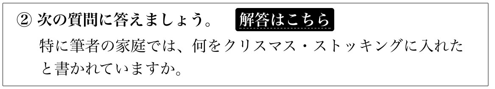
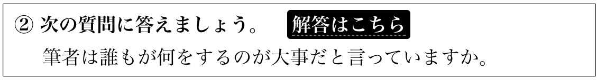
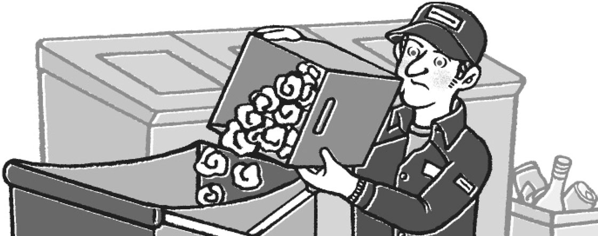

| [音声DL付]究極の英語リーディングVol. 3 究極の英語リーディングシリーズ | |
| アルク英語出版編集部 | |
| (2015) | |
※参照項目から元の箇所に戻るには、お使いのビューワーの仕様に従ってください。または一旦目次を表示し、戻りたい箇所の近くの見出しをタップして戻ってください。
Foreword
はじめに
初・中級の3000語で、ここまで複雑な内容も味わえる！
『究極の英語リーディング Vol.3』は、アルクが選定した「標準語彙水準12000」（Standard Vocabulary List［略称SVL 12000］）をベースにした、新しいタイプのリーディング教材です。
SVL 12000は、日本人英語学習者にとって有用な英単語、全12000語を、12段階にレベル分けした語彙リストです。本書の英文はSVLのLEVEL 3まで、つまり初・中級レベルの3000語をベースに書かれています。
この3000語は、日常生活で頻繁に使われている語です。どこかで見たことのあるような単語ばかりなので、「英語が分かる楽しさ」を実感しながら、サクサク読むことができます。もし分からない表現が出てきても、飛ばして先に進んでも構いません。どうしても意味が気になる場合は、語注や訳を参考にしてください。
また、さまざまなタイプの英文が収録されているのも本書の特徴です。物語やエッセイ、記事、TOEICやビジネスの場面で目にする英文（メール、請求書、プレスリリースなど）など、バラエティー豊かな英文に触れることができます。こうした英文をトレーニングしながら読むことで、速く読む力を付けることもできます。
英語力をアップさせるには、英語に触れる機会を増やすことが効果的です。たくさんの英文を読めば、徐々に英語を理解するスピードが上がっていきます。それにより、リーディング力だけでなく、リスニング力、スピーキング力など、総合的な英語力が向上するといわれています。
「英語のリーディング力を伸ばしたい」「仕事や趣味で英語を読みたい」という人はもちろん、「英語力をアップさせたい」という人も、本書でリーディングに取り組み、ぜひ「英語が分かる楽しさ」を実感してください。
How to Use This Book
本書の使い方
本書では第1章、第2章、第3・4章でそれぞれ学習手順が少しずつ異なっています。ここでは第1章を見本にして、基本的な学習手順を紹介します。
一つの英文は3つのラウンドで学習します。各ラウンドで英文を1回読み、幾つかの課題と問題に取り組みましょう。
各章の詳しい学習手順は、それぞれ第1章、第2章、第3章の冒頭にあります。
ROUND1
学習する英文の総語数と難易度です。難易度は3段階に分かれています。
★☆☆：易しい
★★☆：普通
★★★：難しい
長文チャレンジ とあるものは特に長い英文です。

ROUND1 では「意味の固まりごとにスラッシュを入れる」「音声を聞く」などの課題を行いながら英文を読みます。

学習する英文です。読む時はできるだけ一度で概要をつかむようにしてください。英文の書体は変わることがあります。
内容を理解したか確認する問題です。
学習のポイント
本書では「英文を前から理解していく」「時間を計って読む」などの方法で、読解スピードを上げることを目指します。英文を読む際には「できるだけ前に戻らずに読む」「一文一文訳すのではなく、内容を理解することを目標にする（分からない部分は飛ばす）」ように心掛けてください。
本書に収録されている英文は、エッセイ・物語・記事などの他、TOEICでよく出題されるメールやウェブサイト、ビジネス関連文書などさまざまです。興味が持てないものを無理に読もうとすると、学習が続きません。面白く感じる内容や、理解しやすいものから学習して構いません。
ROUND2
ここではROUND1 で入れたスラッシュの位置を確認したり、スラッシュごとの意味を考えたりする課題に取り組みます。

英文の語注です。意味の分からない語句を確認してください。
の課題の答えがここにあります。
＊第2～4章では、この後で時間を計りながら英文を読みます。

ROUND2 の問題です。内容を理解したか、ここで確認してみましょう。
ROUND3

ROUND3 では、音声を聞きながら英文を読みます。

ROUND3 の問題です。内容を理解したか、ここで確認してみましょう。
で出題された問題に解答するためのヒントが、どこにあったかを示しています。段落の頭についている
 ...は段落番号です。
...は段落番号です。

の問題の答えです。

の英文の訳です。ここでも問題のヒントの位置が下線で示されます。
音声について
本書の英文を朗読した音声には、以下の2種類あります。
・通常音声（学習用無料ダウンロード音声）：100WPM程度（1分間に100語程度の速度）
・速読用音声（特典ダウンロード音声）：130WPM程度（1分間に130語程度の速度）
本書では、まず1分間に100語程度の速度で読むことを目標とし、学習用無料ダウンロード音声を使用して学習します。もしこの速度が遅く感じる場合は、ダウンロードした特典音声を学習にご使用ください。ダウンロード方法については、次ページにあります。
□
特典ダウンロード音声のお知らせ
本書に収録されている英文を学習用無料ダウンロード音声よりも速い速度で朗読した「速読用音声」が無料でダウンロードできます。
本書で音声を使用した学習を行う際に、学習用無料ダウンロード音声が遅く感じる場合は、「速読用音声」をダウンロードしてご活用ください。
特典ダウンロードはこちらにアクセス！（PC専用）
●ダウンロード先
ALC Download Center ダウンロードセンター
http://www.alc.co.jp/dl/
●ダウンロード手順
上記の「ダウンロードセンター」にアクセス
→「リーディング」から『究極の英語リーディング Vol.3』を選択
→表示される「お申し込みフォーム」に必要事項を記入して、送信
→メールにてダウンロード先のURLが届くので、そこからダウンロード
●提供素材
速読用音声（MP3音声）
＊ダウンロードしたファイルは、解凍ソフトで展開の上、ご使用ください。
□
学習用無料ダウンロード音声について
本書に対応する音声は、すべて無料でダウンロードしていただけます。下記URLにアクセスし、『究極の英語リーディング Vol.3』学習用無料音声を選択、フォームに必要事項をご記入の上送信いただくと、ダウンロードページURLのご案内メールが届きます。
まずはこちらへアクセス！
ALC Download Centerダウンロードセンター
http://www.alc.co.jp/dl/
（2015年11月時点の情報。今後詳細が変更になる可能性があります）
ダウンロードした音声は「01-34」があります。
ダウンロードした音声ファイルはiTunesなどの音声再生ソフトで取りこんでご利用ください。音声再生ソフトでのファイルの取り込み方法や携帯音楽プレーヤーでの利用方法については、ソフトやプレーヤーに付属するマニュアルでご確認ください。
取り込んだ音声ファイルは、音声再生ソフトで次のように表示されます。
出版社名（アーティスト名）：「ALC PRESS INC.」と表示。
書名（アルバム名）：『究極の英語リーディング Vol.3』
トラック名（曲名）：どの学習に必要な音声なのかがすぐわかるよう、トラック名は、[01_通常音声_プライマリーテスト]のように曲名が表示されます。
本書では、ダウンロードした音声を使用する部分は
DL01 のように、ダウンロードした音声と同じトラック名で表示しています。該当のトラックを再生して学習してください。
□
プライマリーテスト
第１章の学習を始める前に、まずテストに挑戦してください。読むのが難しく感じるかもしれませんが、力試しのつもりで取り組んでみましょう。
本書の学習の仕上げに、「ファイナルテスト」にも挑戦し、結果を比較してください。
語数：201
難易度：★★☆
［記事］
ピクルスとワールドカップ
1966年にワールドカップ・イングランド大会が行われた際にある事件が起きました。その事件で活躍したのは...。
DL01
挑戦してみよう
① 時間を計りながら英文を読んで、かかった時間を「記録欄」のようにノートに書き留めてください。続いて②の問題に答えましょう。余裕のある人は音声も聞いてください。
The FIFA World Cup is soccer's biggest tournament. One year, the host country had more to worry about than just making sure the games went smoothly. The trophy was stolen!
In 1966, England was hosting the World Cup. Everybody in the country was excited and even expected England to win.
Then, a few months before the tournament, thieves struck. The trophy was being guarded by police, but the thieves somehow stole it.
The mood of the country turned from joyful to anxious. The police were desperate to find the trophy. They wanted to avoid international embarrassment.
A week later, a black-and-white dog called Pickles was on his evening walk. He dragged his owner over to some bushes. There, the owner found a package wrapped in a newspaper and tied with string. It was the missing trophy!
Pickles immediately became a media star. He received a large bone and a medal, and he was named Dog of the Year. He also got a year's supply of dog food. Pickles even starred in a movie.
When England won the World Cup, Pickles was the guest of honor at the team's celebration dinner. Today, his collar is on display in England's National Football Museum.
ワールドカップにまつわるある事件で活躍したピクルスは、一躍有名になった
写真：Action Images/アフロ
② 次の問題の最も適切な答えを（A）～（D）から選んでください。 解答はこちら
トロフィーはいつ見つかりましたか。
（A）When the police were searching for it
（B）When the police were on guard
（C）When the England team was playing
（D）When a dog was walking
記録欄
①と②の結果を記録しておきましょう。
① 読むのにかかった時間：
② 解答結果（どちらかに○）：（正解・不正解）
→ 本書で学習後「ファイナルテスト」に挑戦して、その結果と比較してください。
語注
□FIFA：国際サッカー連盟 ★= Fédération Internationale de Football Association＜フランス語＞
□tournament：トーナメント、（優勝者を決める）大会
□host country：開催国
□have more to worry about than ～：～よりもっと心配することがある
□smoothly：スムーズに、滞りなく
□trophy：トロフィー
□strike：（犯罪者などが）突然襲う ★struckは過去形
□was being guarded：警護されていた ★警護されている最中であったことを表すため、「be動詞＋being＋過去分詞」の形が使われている
□joyful：喜びに満ちた、楽しげな
□be desperate to ～（動詞の原形）：～しようと必死である
□embarrassment：きまり悪さ、気恥ずかしさ、恥
□black-and-white：白黒の
□drag ～ to ... ：～を...に無理に連れていく・引っ張り出す
□be named ～：～に指名される
□a year's supply of ～：1年分の〜
□star in 〜：〜に主演する
□guest of honor：主賓、来賓
□collar：首輪
□on display：展示されて
訳 ＊解答のヒントは以下の下線の部分です。
FIFAワールドカップはサッカーの最も大きなトーナメントです。ある年、開催国は、試合を確実に滞りなく進めることだけでなく、さらに心配なことを抱えました。トロフィーが盗まれたのです！
1966年にイングランドでワールドカップが開催されようとしていました。国の誰もがわくわくし、イングランドが優勝するのさえ期待していました。
そこへ、大会の数カ月前になって、盗難が起きました。トロフィーは警察官に警護されていたのですが、泥棒たちはどんな手を使ったのか、それを盗んだのです。
国内のムードは喜びから心配に変わりました。警察はトロフィーを見つけようと必死でした。国際的に恥をかくのは避けたかったのです。
②1週間後、ピクルスという名の白黒の犬が夕方の散歩をしていました。彼は飼い主を茂みの方へと引っ張っていきました。そこで飼い主は新聞にくるまれ、ひもで縛られた包みを見つけました。それは行方不明のトロフィーでした！
ピクルスはたちまちメディア界のスターになりました。大きな骨とメダルを授与され、「ドッグ・オブ・ザ・イヤー」に指名されました。1年分のドッグフードももらいました。ピクルスは映画に主演までしました。
イングランドがワールドカップで優勝すると、ピクルスはチームの祝賀ディナーの主賓となりました。今では、彼の首輪がイングランドの国立サッカー博物館に展示されています。
②の解答のヒント
＊解答のヒントは以下の下線の部分です。
The FIFA World Cup is soccer's biggest tournament. One year, the host country had more to worry about than just making sure the games went smoothly. The trophy was stolen!
In 1966, England was hosting the World Cup. Everybody in the country was excited and even expected England to win.
Then, a few months before the tournament, thieves struck. The trophy was being guarded by police, but the thieves somehow stole it.
The mood of the country turned from joyful to anxious. The police were desperate to find the trophy. They wanted to avoid international embarrassment.
②A week later, a black-and-white dog called Pickles was on his evening walk. He dragged his owner over to some bushes. There, the owner found a package wrapped in a newspaper and tied with string. It was the missing trophy!
Pickles immediately became a media star. He received a large bone and a medal, and he was named Dog of the Year. He also got a year's supply of dog food. Pickles even starred in a movie.
When England won the World Cup, Pickles was the guest of honor at the team's celebration dinner. Today, his collar is on display in England's National Football Museum.
□
②の解答
（D）
選択肢の訳
（A）警察がそれを捜索していた時に
（B）警察が警護していた時に
（C）イングランドチームがプレーしていた時に
（D）犬が散歩していた時に
□
CHAPTER 1
第１章
第1章の学習手順
第1章では、英文を意味のまとまりごとにスラッシュで区切りながら読む練習（スラッシュリーディング）をします。意味のまとまりごとに理解することで、英文を一語一語読んでいくよりも、読むスピードが速くなります。
スラッシュリーディングは英文の読み方の基本となるテクニックなので、ぜひ身に付けてください。
ROUND１
① 英文の固まりごとにスラッシュを入れながら読みます。区切る位置については以下の「スラッシュで区切る位置の目安」を参考にしてください。
慣れてきたら、もっと大きな固まりで区切っても構いません。
スラッシュを入れるのが難しい場合は、ROUND2の①（スラッシュの入った英文）を読んでください。
学習のねらい 英文の頭から固まりごとに理解していくことで、文の途中で意味が分からなくなったり、前に戻って繰り返し読んだりすることが防げるため、速く読めるようになります。読む時には文頭から順に目を通し、なるべく前に戻って読まないように注意してください。
スラッシュで区切る位置の目安
1）長い主語の後
2）長い目的語や補語の前
3）カンマ、コロン、セミコロン、ダッシュの後
4）前置詞の前
5）不定詞to、分詞の前
6）接続詞の前
7）関係詞の前
8）疑問詞節、that節の前
9）文末の副詞の前
② 続いて、問題②で内容を理解しているか確認するための問題に答えます。
ROUND２
① ここではスラッシュの入れ方の例を紹介しています。ROUND1 で自分で区切った位置と比べてみましょう。より大きなまとまりで区切るなど、ここと同じ位置にスラッシュが入っていなくても、間違いではありません。
続いて、語注を参考に、スラッシュごとの意味を考えてください。
学習のねらい 英文の固まりごとに理解していくコツがつかめます。
② 問題②で、①のスラッシュごとの意味を確認しましょう。
③ 続いて、内容を理解しているか確認するための問題に答えます。
ROUND３
① 学習用無料ダウンロード音声を聞きながら、英文を読みます。
学習のねらい ここでは、学習用無料ダウンロード音声（1分間に100ワード［100WPM］程度）のスピードで英文を読んで、内容が理解できるかどうかを試します。まずは100WPM程度で読むことを目標としてください。
＊通常の音声のスピードが遅く感じる場合は、「速読用音声」を利用することができます。詳しくはこちらを参照してください。
② 続いて、内容を理解しているか確認するための問題に答えます。
語数：106
難易度：★☆☆
エッセイ①
クリスマス・ストッキング
まずは外国の風習に関するエッセイを読んでみましょう。
クリスマスに目にするカラフルなクリスマス・ストッキングはアメリカの家庭ではどのように使われるのでしょうか。
ROUND1
①こちらを参考に意味の固まりごとにスラッシュを入れながら、英文を読んでみましょう。難しい場合はROUND2 にある英文を読んでも構いません。1回で文の概要をつかむようにしてください。
ポイント：読む時には、前に戻らないで英語の語順のまま理解しよう！
On Christmas Eve, many American children hang up their Christmas stockings on a fireplace and hope that Santa will fill them up. In my home, Santa (actually, my parents) always stuffed ours with small presents, like socks and pencils and small toys. There were usually also some Christmas chocolates and a couple of candy canes. Most families did that. But in my family, we also got an orange, a silver dollar and three walnuts. It was never two or four walnuts, always three. Opening our Christmas stockings was always a great joy, not because the presents were expensive, but because there were a lot of them.
② 次の文が英文の内容と合っていれば○、違っていれば×をつけましょう。 解答はこちら
クリスマス・ストッキングはツリーに飾るためのものだ。
ROUND2
① 以下は英文をスラッシュで区切った例です。ROUND1 で自分が入れたスラッシュの位置と比べてみましょう。その後、語注を参考にしながら、スラッシュごとの意味を考えてください。
On Christmas Eve, many American children hang up their Christmas stockings on a fireplace and hope that Santa will fill them up.
In my home, Santa (actually, my parents) always stuffed ours with small presents, like socks and pencils and small toys.
There were usually also some Christmas chocolates and a couple of candy canes.
Most families did that. /
But in my family, / we also got an orange, a silver dollar and three walnuts.
It was never two or four walnuts, always three.
Opening our Christmas stockings was always a great joy, not because the presents were expensive, but because there were a lot of them.
語注
□hang up 〜：〜をつるす・ぶら下げる
□fireplace：暖炉
□fill 〜 up：〜を満たす・いっぱいにする
□stuff 〜 with ...：〜に...を詰め込む
□candy cane：つえの形をしたキャンディー棒 ★caneは「つえ、ステッキ」
□silver dollar：（銀色の）1ドル硬貨
□walnut：クルミ（の実）
□not 〜 but ...：〜ではなく...
② ①で自分が考えた意味が合っているかどうかを、次で確認してみましょう。
クリスマスイブには、／たくさんのアメリカの子供たちがつるします／クリスマス・ストッキングを／暖炉に／そして願います／サンタがそれをいっぱいにしてくれるようにと。／
私の家では、／サンタ（実は私の両親）がいつも私たちの分に詰め込んでくれました／小さなプレゼントを、／靴下のような／そして鉛筆／そして小ぶりなおもちゃ。／
いつもはさらにクリスマスのチョコレートが幾つか入っていました／さらにキャンディー棒が2、3本が。／
大抵の家庭ではそれを行いました。／
でもわが家では、／私たちはさらにもらいました／オレンジ1個を、／1ドル硬貨1枚を／そしてクルミ3個を。／
それは決して2個、または4個のクルミではなく、／必ず3個でした。／
私たちのクリスマス・ストッキングを開けるのは／いつもとても楽しみなことでした、／プレゼントが高価だったからではなく、／いろいろと入っていたからです。／
③ 次の質問の答えを（A）～（D）から選びましょう。 解答はこちら
大抵の家庭でクリスマス・ストッキングに入れる物として挙げられていないのは、次のうちどれですか。
（A）Chocolates （B）Toys
（C）Cookies
（D）Socks
ROUND3
DL02
① 最後に音声を聞きながら英文を読んでみましょう。
→音声が遅く感じる場合は、「速読用音声」に挑戦！（詳しくはこちらを参照）。
ポイント：音声のスピードで読みながら内容を理解できるかに挑戦！
② 次の質問に答えましょう。 解答はこちら
特に筆者の家庭では、何をクリスマス・ストッキングに入れたと書かれていますか。
解答のヒント
＊R1②、R2③、R3②の問題のヒントは以下の部分です。
On Christmas Eve,R1many American children hang up their Christmas stockings on a fireplace and hope that Santa will fill them up. In my home, Santa (actually, my parents) always stuffed ours with small presents, likeR2socks and pencils and smalltoys. There were usually also some Christmaschocolates and a couple of candy canes. Most families did that.R3But in my family, we also got an orange, a silver dollar and three walnuts. It was never two or four walnuts, always three. Opening our Christmas stockings was always a great joy, not because the presents were expensive, but because there were a lot of them.
□
解答
ROUND 1. ×
ROUND 2. （C）
ROUND 3.オレンジ1個、1ドル硬貨1枚、クルミ3個
ROUND 2の選択肢の訳
（A）チョコレート
（B）おもちゃ
（C）クッキー
（D）靴下
□
訳
クリスマスイブには、R1たくさんのアメリカの子供たちが、クリスマス・ストッキングを暖炉につるし、サンタがこの中をいっぱいにしてくれるよう願います。私の家では、サンタ（実は私の両親）がいつも私たちの分に、R2靴下や鉛筆や小ぶりなおもちゃといった、小さなプレゼントを詰め込んでくれました。いつもはさらにクリスマスのチョコレートが幾つかと、キャンディー棒が2、3本入っていました。大抵の家庭ではそれを行いました。R3でもわが家では、さらにオレンジ1個と1ドル硬貨1枚、クルミ3個をもらいました。クルミは決して2個や4個ではなく、必ず3個でした。クリスマス・ストッキングを開けるのは、いつもとても楽しみなことでしたが、プレゼントが高価だったからではなく、いろいろと入っていたからです。
語数：121
難易度：★☆☆

メール①
今回はメールを読んでみましょう。
まずヘッダーの部分で、誰が、誰に、どんなことを伝えたいのかに注目して、本文で詳細をつかんでください。
ROUND1
①こちらを参考に意味の固まりごとにスラッシュを入れながら、英文を読んでみましょう（メールのヘッダー部分にはスラッシュを入れる必要はありません）。
ポイント：読む時には、前に戻らないで英語の語順のまま理解しよう！
To: Bright Home Electronics
From: Evelyn Harris
Subject: Buzzing Speakers
Date: November 3
Hello,
I bought a pair of Graf stereo speakers at your store on October 1. They produced a wonderful sound at first, and I liked them very much. But just a few days ago, on October 31, they began making a buzzing sound. I have tried using them with different radios, my computer and other devices, but the buzzing sound is always there. Your store offers a 30-day return policy. The problem began exactly 30 days after I had bought the speakers. Can I still exchange them for another new pair or get my money back?
Thank you in advance for your help in this matter.
ROUND2
① 以下は英文をスラッシュで区切った例です。ROUND1 で自分が入れたスラッシュの位置と比べてみましょう。その後、語注を参考にしながら、スラッシュごとの意味を考えてください。
Hello, /
I bought / a pair of Graf stereo speakers at your store on October 1. /
They produced a wonderful sound / at first, and I liked them very much.
But just a few days ago, on October 31, they began making a buzzing sound.
I have tried using them with different radios, my computer and other devices, but the buzzing sound is always there.
Your store offers a 30-day return policy.
The problem began exactly 30 days after I had bought the speakers.
Can I still exchange them for another new pair or get my money back? /
Thank you in advance / for your help in this matter.
Evelyn Harris /
語注
□electronics：電気製品、電子機器
□buzz：ブーン・ジーという音が鳴る、雑音がする
□November 3： 11月3日 ★この3はthirdと読む。October 1の1はfirst、October 31の31はthirty-firstと読む。
□return policy： 返品規定、返品条件
□exchange 〜 for ...： 〜を...と交換する
□get 〜 back： 〜を取り返す
□thank you in advance： あらかじめお礼申し上げます、よろしくお願いします
□matter： 事柄、問題
② ①で自分が考えた意味が合っているかどうかを、次で確認してみましょう。
初めまして、／
私は購入しました／グラフステレオスピーカーを一組／貴店で／10月1日に。／
それらは素晴らしい音を出していました／最初は、／それで私はそれらをとても気に入っていました。／
ところがほんの数日前、／10月31日に、／それらは始めました／雑音を出すことを。／
私は試しました／それらを使うことを／いろいろなラジオと一緒に、／私のコンピューターと／そしてその他の機器と、／しかし雑音がずっとしています。／
貴店では提示しています／30日間返品規定を。／
この問題はちょうど30日で始まりました／私がスピーカーを購入した後。／
それでも、それらを交換できるでしょうか／別の新品一組と／または返金を受けることはできるでしょうか。／
あらかじめお礼いたします／あなたのご対応に／この件について。／
エブリン・ハリス／
③ 次の質問の答えを（A）～（D）から選びましょう。 解答はこちら
商品の調子が悪くなったのはいつですか。
（A）On October 1
（B）On October 30
（C）On October 31
（D）On November 3
ROUND3
DL03
① 最後に音声を聞きながら英文を読んでみましょう。
→音声が遅く感じる場合は、「速読用音声」に挑戦！（詳しくはこちらを参照）。
ポイント：音声のスピードで読みながら内容を理解できるかに挑戦！
② 次の質問に答えましょう。 解答はこちら
このメールを書いている人は、何を求めていますか。
解答のヒント
＊R1②、R2③、R3②の問題のヒントは以下の部分です。
To: Bright Home Electronics
From: Evelyn Harris
Subject:R1Buzzing Speakers
Date: November 3
Hello,
R1I bought a pair of Graf stereo speakers at your store on October 1. They produced a wonderful sound at first, and I liked them very much. But just a few days ago,R2on October 31,R1they began making a buzzing sound. I have tried using them with different radios, my computer and other devices, but the buzzing sound is always there. Your store offers a 30-day return policy. The problem began exactly 30 days after I had bought the speakers.R3Can I still exchange them for another new pair or get my money back?
Thank you in advance for your help in this matter.
Evelyn Harris
□
解答
ROUND 1. ×
ROUND 2. （C）
ROUND 3.新品との交換か返金
ROUND 2の選択肢の訳
（A）10月1日に
（B）10月30日に
（C）10月31日に
（D）11月3日に
□
訳
宛先：ブライト家庭電器
送信者：エブリン・ハリス
件名：R1雑音のするスピーカー
日付：11月3日
初めまして、
10月1日にR1貴店でグラフ・ステレオ・スピーカーを一組購入しました。最初のうちは素晴らしい音を出してくれて、とても気に入っていました。ところがほんの数日前、R210月31日に、R1雑音を出すようになりました。いろいろなラジオ、コンピューター、その他の機器と一緒に使ってみましたが、雑音がずっとしています。貴店では30日間返品規定を提示しています。この問題は私がスピーカーを購入してからちょうど30日後に始まりました。R3それでも、別の新品一組と交換するか、返金を受けることは可能でしょうか。
この件について、ご対応のほどよろしくお願いいたします。
エブリン・ハリス
語数：150
難易度：★☆☆
 エッセイ②
エッセイ②
世界を変える
今回は元気が出るエッセイを読んでみましょう。
筆者は、人生のどの段階で、何を変えたいと思ったか、その結果どうなったかに注目して、読んでください。
ROUND1
①こちらを参考に意味の固まりごとにスラッシュを入れながら、英文を読んでみましょう。
ポイント：読む時には、前に戻らないで英語の語順のまま理解しよう！
When I was young, I wanted to change the world.
I soon realized that it was too hard for me to change the world. So I decided instead to try to change just my country.
I soon realized that it was too hard for me to change my country. So I decided instead to focus on just my town. But I soon realized that I could not even change my town. In midlife, I decided to try to change my family.
Now I am old, and I realize that the only thing I can change is myself. If only I had tried to change myself long ago, I could have had a great influence on my family. My family and I could have worked together to change our town. Our town could have had an important influence on our country, and in that way, I could have changed the world.
② 次の文が英文の内容と合っていれば○、違っていれば×をつけましょう。 解答はこちら
筆者は若いころ、世界を変えるのは難し過ぎることに気が付いた。
ROUND2
① 以下は英文をスラッシュで区切った例です。ROUND1 で自分が入れたスラッシュの位置と比べてみましょう。その後、語注を参考にしながら、スラッシュごとの意味を考えてください。
When I was young, I wanted to change the world. /
I soon realized / that it was too hard for me to change the world. /
So I decided instead / to try to change just my country.
I soon realized / that it was too hard for me to change my country. /
So I decided instead to focus on just my town. /
But I soon realized / that I could not even change my town. /
In midlife, / I decided to try to change my family. /
Now I am old, / and I realize that the only thing I can change is myself.
If only I had tried to change myself long ago, I could have had a great influence on my family. /
My family and I / could have worked together to change our town.
Our town could have had an important influence on our country, and in that way, I could have changed the world.
語注
□instead：その代わりに
□focus on 〜：〜に焦点を絞る・重点的に取り組む・専念する
□midlife：中年
□if only 〜： 〜でありさえすれば、せめて〜であったならば ★かなわない望みを示す
□could have 〜（動詞の過去分詞）： 〜できただろうに
□work together： 協力する
② ①で自分が考えた意味が合っているかどうかを、次で確認してみましょう。
私が若いころ、／私は望んだ／世界を変えることを。／
すぐに私は気が付いた／難し過ぎると／自分には／世界を変えるのは。／
そこで私はその代わりに決めた／努力することを／自分の国だけを変えようと。／
すぐに私は気が付いた／難し過ぎると／自分には／国を変えるのは。／
そこで私はその代わりに決めた／専念することを／自分の町だけに。／
だが、すぐに私は気が付いた／自分には自分の町すら変えられないと。／
中年になって、／私は決めた／努力することを／自分の家族を変えようと。／
今私は年を取り、／そして私は気付いている／唯一のものは／自分に変えられる／自分自身であると。／
せめて努力していたならば／自分を変えようと／ずっと前に、／大きな影響を与えることもできただろうに／自分の家族に。／
私の家族と私は／協力することもできただろうに／自分の町を変えるために。／
私たちの町は重要な影響を与えることもできただろう／国に、／そしてそんなふうにして、／私は世界を変えることができただろうに。／
③ 次の質問の答えを（A）～（D）から選びましょう。 解答はこちら
筆者は中年になって、何を変えようとしましたか。
（A）The world
（B）His country
（C）His town
（D）His family
ROUND3
DL04
① 最後に音声を聞きながら英文を読んでみましょう。
→音声が遅く感じる場合は、「速読用音声」に挑戦！（詳しくはこちらを参照）。
ポイント：音声のスピードで読みながら内容を理解できるかに挑戦！
② 次の質問に答えましょう。 解答はこちら
年を取って、筆者はどんなことに気付きましたか。
解答のヒント
＊R1②、R2③、R3②の問題のヒントは以下の部分です。
R1When I was young, I wanted to change the world.
I soon realized that it was too hard for me to change the world. So I decided instead to try to change just my country.
I soon realized that it was too hard for me to change my country. So I decided instead to focus on just my town. But I soon realized that I could not even change my town.R2In midlife, I decided to try to change my family.
R3Now I am old, and I realize that the only thing I can change is myself. If only I had tried to change myself long ago, I could have had a great influence on my family. My family and I could have worked together to change our town. Our town could have had an important influence on our country, and in that way, I could have changed the world.
□
解答
ROUND 1. ○
ROUND 2. （D）
ROUND 3.自分に変えられるのは自分自身だけであること
ROUND 2の選択肢の訳
（A）世界
（B）彼の国
（C）彼の町
（D）彼の家族
□
訳
R1若いころ、私は世界を変えたいと思った。
すぐに私は、世界を変えるのは自分には難し過ぎると気が付いた。そこで私は、その代わりに自分の国だけを変えようと努力することを決めた。
すぐに私は、国を変えるのは自分には難し過ぎると気が付いた。そこで私は、その代わりに自分の町だけに専念しようと決めた。だが、すぐに私は、自分には町すら変えられないと気が付いた。R2中年になって、私は自分の家族を変えようと努力することを決めた。
R3今や私は年を取り、自分に変えられるのは自分自身だけだと気が付いている。せめて、ずっと前に自分を変えようと努力していたならば、家族に大きな影響を与えることもできただろうに。家族と私とで、町を変えるために協力することもできただろうに。私たちの町は国に重要な影響を与えることもできただろうし、そんなふうにして、私は世界を変えることができただろうに。
語数：114
難易度：★☆☆
ウェブサイト
今回はあるウェブサイトのトップページを取り上げます。
まず、これがどんなウェブサイトであるかに注目し、さらに、このサイトをどのように使うかを読み取ってください。
ROUND1
①こちらを参考に意味の固まりごとにスラッシュを入れながら、英文を読んでみましょう。
ポイント：読む時には、前に戻らないで英語の語順のまま理解しよう！
Ace ZN TravelCompare and save!
Are you tired of spending time searching for the best deals on airfares, hotel rates and travel services? If so, then you've come to the right place. At Ace ZN Travel, we search the whole Internet to find the best prices for you. Just follow the link below and tell us where you're traveling from, where to, when you want to go and how long for. We'll search all the information on the Net. And we'll suggest the best travel plan foryou. Find out why everyone says Ace ZN Travel is the best site to use.
Ready to plan your trip and save big money?
Click >>HERE<<
② 次の文が英文の内容と合っていれば○、違っていれば×をつけましょう。 解答はこちら
このウェブサイトは安く旅行したい人向けのものだ。
ROUND2
① 以下は英文をスラッシュで区切った例です。ROUND1 で自分が入れたスラッシュの位置と比べてみましょう。その後、語注を参考にしながら、スラッシュごとの意味を考えてください。
Ace ZN Travel /
Compare / and save! /
Are you tired of spending time / searching for the best deals on airfares, hotel rates and travel services?
If so, / then you've come to the right place. /
At Ace ZN Travel, we search the whole Internet to find the best prices for you.
Just follow the link below and tell us where you're traveling from, where to, when you want to go and how long for.
We'll search all the information on the Net.
And we'll suggest the best travel plan / foryou. /
Find out why everyone says Ace ZN Travel is the best site to use.
Ready to plan your trip and save big money? /
Click >>HERE<< /
読み方のヒント
... tell us where you're traveling from, where to, when you want to go, and how long for.ではwhere (you're traveling) to、how long (you want to go) forと省略されています。
□
語注
□be tired of 〜：〜に飽きている
□spend time -ing： 〜するのに時間を費やす・かける
□best deal：最良の取引、最安値での買い物
□airfare：航空運賃
□rate： 料金
□Internet：インターネット
□best price： 最良価格、最安値
□link：リンク
□site：（インターネットの）サイト
□click：クリックする
② ①で自分が考えた意味が合っているかどうかを、次で確認してみましょう。
エースZNトラベル／
比べてください／そして節約してください！／
時間をかけるのに飽き飽きしていませんか／最安値を探し求めて／航空運賃の、／ホテル料金の／そして旅行サービスの。／
もしそうなら、／それならあなたは最適の場所においでです。／
エースZNトラベルでは、／インターネット中を検索します／最安値を見つけるために／あなたのために。／
下のリンクをたどっていただくだけです／そしてわれわれに教えてください／どこから出発するのか、／どこまでなのか、／いつ出掛けたいのか／どれくらいの間か。／
私たちが全ての情報を検索します／ネットで。／
そして最も良い旅行計画を提案します／あなたのために。／
確かめてください／誰もがなぜ言うのか／エースZNトラベルは最高のサイトだと／利用するのに。／
用意がありますか／旅行の計画を立てること／そしてお金を大幅に節約すること／
「こちら」をクリック／
③ 次の質問の答えを（A）～（D）から選びましょう。 解答はこちら
このウェブサイトを使う時に、入力する情報は次のうちどれですか。
（A）How much you can pay （B）How many people are going （C）How many hotel rooms you need （D）Where you want to go
ROUND3
DL05
① 最後に音声を聞きながら英文を読んでみましょう。
→音声が遅く感じる場合は、「速読用音声」に挑戦！（詳しくはこちらを参照）。
ポイント：音声のスピードで読みながら内容を理解できるかに挑戦！
② 次の質問に答えましょう。 解答はこちら
このサイトでは何を提案してくれますか。
解答のヒント
＊R1②、R2③、R3②の問題のヒントは以下の部分です。
Ace ZN TravelCompare and save!
Are you tired of spending time searching for the best deals on airfares, hotel rates and travel services? If so, then you've come to the right place.R1At Ace ZN Travel, we search the whole Internet to find the best prices for you. Just follow the link below andR2tell us where you're traveling from,where to, when you want to go and how long for. We'll search all the information on the Net. AndR3we'll suggest the best travel plan foryou. Find out why everyone says Ace ZN Travel is the best site to use.
Ready to plan your trip and save big money?
Click >>HERE<<
□
解答
ROUND 1. ○
ROUND 2. （D）
ROUND 3.旅行計画
ROUND 2の選択肢の訳
（A）幾ら支払えるか
（B）何人で行くか
（C）ホテルの部屋が何室必要か
（D）どこに行きたいか
□
訳
エースZNトラベル
比べて節約を！
航空運賃やホテル料金、旅行サービスの最安値を探し求めて、時間をかけるのに飽き飽きしていませんか。もしそうなら、あなたは最適の場所においでです。R1エースZNトラベルでは、インターネット中を検索して、あなたのために最安値をお探しします。下のリンクをたどって、どこから出発するのか、R2どこまでなのか、いつ出掛けたいのか、どれくらいの間かを、教えていただくだけです。私たちが全ての情報をネット検索します。そしてR3あなたに最も良い旅行計画を提案します。エースZNトラベルは最高に利用しやすいサイトだと、誰もが言うのはなぜか、確かめてください。
今すぐ旅行の計画を立てて、お金を大幅に節約するなら
「こちら」をクリック
語数：125
難易度：★★☆
 記事①
記事①
泣くことの効果
今回は体の不思議なメカニズムに関する記事を読んでみましょう。
あなたが最近泣いたのはいつですか。
「大人が泣くなんてみっともない」と思われることもありますが...。
ROUND1
①こちらを参考に意味の固まりごとにスラッシュを入れながら、英文を読んでみましょう。
ポイント：読む時には、前に戻らないで英語の語順のまま理解しよう！
Some people think that crying is a sign of weakness, but doctors have found that crying may actually be good for us. Studies have shown that when we feel sad or have stress in our lives, our bodies release chemicals that can cause health problems like heart disease and high blood pressure. Crying not only lets us get rid of tension, it also helps wash those chemicals out of our bodies so we can begin to feel better. Crying also helps wash dust and dirt out of our eyes. So if you have a difficult day at school or work, or if you have a fight with a friend, or if something is making you feel sad, go ahead and cry. It's good for you!
② 次の文が英文の内容と合っていれば○、違っていれば×をつけましょう。 解答はこちら
泣くのは弱さの象徴なので、涙は我慢した方がいい。
ROUND2
① 以下は英文をスラッシュで区切った例です。ROUND1 で自分が入れたスラッシュの位置と比べてみましょう。その後、語注を参考にしながら、スラッシュごとの意味を考えてください。
Some people think that crying is a sign of weakness, but doctors have found that crying may actually be good for us.
Studies have shown that when we feel sad or have stress in our lives, our bodies release chemicals that can cause health problems like heart disease and high blood pressure. /
Crying not only lets us / get rid of tension, it also helps wash those chemicals out of our bodies so we can begin to feel better.
Crying also helps wash dust and dirt out of our eyes. /
So if you have a difficult day / at school or work, or if you have a fight with a friend, or if something is making you feel sad, go ahead and cry.
It's good for you! /
語注
□good for 〜：（健康・体など）に良い
□release：〜を放つ・放出する
□chemical：化学物質
□high blood pressure：高血圧
□get rid of 〜：〜を取り除く
□tension：緊張、ストレス
□wash 〜 out of ...：〜を...から流し去る
□difficult：つらい、苦しい
□make ～ ...（動詞の原形）：～を...させる
□go ahead and 〜（動詞の原形）：（命令形で）どうぞ〜してください、遠慮なくどんどん〜してください
② ①で自分が考えた意味が合っているかどうかを、次で確認してみましょう。
一部の人たちは考えます／泣くことは弱さの印だと、／しかし医師たちは発見しました／泣くことが実は私たちのためになるかもしれないと。／
研究によると／私たちが悲しいと感じると／またはストレスを抱えると／生活の中で、／私たちの体は化学物質を放出します／それは健康問題を引き起こしかねない／心臓病や高血圧といった。／
泣くことは私たちに〜させるばかりでなく／緊張を取り除く、／さらに役立ちます／そうした化学物質を流す／私たちの体から／それで私たちは始めます／気分が良くなることを。／
泣くことはまた、役にも立ちます／ごみや汚れを流すのに／目から。／
だから、もしもつらい日があったら／学校や職場で、／またはあなたがけんかしたら／友達と、／または何かがあなたを〜させていたら／悲しく、／どうぞ泣いてください。／
それはあなたのためになるのです！／
③ 次の質問の答えを（A）～（D）から選びましょう。 解答はこちら
泣くことの効果として、英文に書かれていないのは、次のうちどれですか。
（A）Getting rid of tension （B）Washing chemicals away （C）Washing dust or dirt out （D）Helping you sleep
ROUND3
DL06
① 最後に音声を聞きながら英文を読んでみましょう。
→音声が遅く感じる場合は、「速読用音声」に挑戦！（詳しくはこちらを参照）。
ポイント：音声のスピードで読みながら内容を理解できるかに挑戦！
② 次の質問に答えましょう。 解答はこちら
悲しかったり、ストレスがあったりすると、体はどうなりますか。
解答のヒント
＊R1②、R2③、R3②の問題のヒントは以下の部分です。
Some people think that crying is a sign of weakness, butR1doctors have found that crying may actually be good for us. Studies have shown thatR3when we feel sad or have stress in our lives, our bodies release chemicals that can cause health problems like heart disease and high blood pressure. Crying not only lets usR2get rid of tension, it also helpsR2wash those chemicals out of our bodies so we can begin to feel better. Crying also helpsR2wash dust and dirt out of our eyes. So if you have a difficult day at school or work, or if you have a fight with a friend, or if something is making you feel sad, go ahead and cry. It's good for you!
□
解答
ROUND 1. ×
ROUND 2. （D）
ROUND 3.（心臓病や高血圧といった）健康問題を引き起こしかねない化学物質を放出する。
ROUND 2の選択肢の訳
（A）緊張を取り除くこと
（B）化学物質を流し出すこと
（C）ごみや汚れを流し出すこと
（D）眠るのを助けること
□
訳
一部の人たちは泣くことを弱さの印だと考えますが、R1医師たちは、泣くことが実は私たちのためになるかもしれないと発見しました。研究によると、R3私たちが生活の中で悲しいと感じたり、ストレスを抱えたりすると、私たちの体は、心臓病や高血圧といった、健康問題を引き起こしかねない化学物質を放出します。泣くことは、R2緊張を取り除くばかりでなく、私たちの体からR2そうした化学物質を流し出す役に立ち、気分が良くなるようにしてくれるのです。泣くことはまた、目からR2ごみや汚れを流し出す役にも立ちます。だから、もしも学校や職場でつらい日があったり、友達とけんかしたり、何かで悲しくなったりしたら、どうぞ泣いてください。それはあなたのためになるのです！
語数：88
難易度：★★☆
告知
今回はウェブサイトに掲載された「告知」を取り上げます。
会員制サイトの定期購読（subscription）に関して、この英文がどんな情報を知らせているかを読み取ってください。
ROUND1
①こちらを参考に意味の固まりごとにスラッシュを入れながら、英文を読んでみましょう。
ポイント：読む時には、前に戻らないで英語の語順のまま理解しよう！
Thank you for being a Subscription Holder to BIZ Journal Online. We are the leading source of the latest business news and analysis. Please note that your one-year membership ends in two weeks, on November 15. Our records show that you requested an automatic renewal. If you would like to keep your Subscription Holder status, you don't need to do anything. Your subscription will be renewed automatically, and your credit card payment will also be processed automatically. If you would like to cancel your subscription, please click >>HERE<<.
② 次の文が英文の内容と合っていれば○、違っていれば×をつけましょう。 解答はこちら
「BIZジャーナル・オンライン」はビジネスニュースを掲載するウェブサイトだ。
ROUND2
① 以下は英文をスラッシュで区切った例です。ROUND1 で自分が入れたスラッシュの位置と比べてみましょう。その後、語注を参考にしながら、スラッシュごとの意味を考えてください。
Thank you for being a Subscription Holder to BIZ Journal Online. /
We are the leading source / of the latest business news and analysis.
Please note that your one-year membership ends in two weeks, on November 15.
Our records show that you requested an automatic renewal.
If you would like to keep your Subscription Holder status, you don't need to do anything.
Your subscription will be renewed automatically, and your credit card payment will also be processed automatically. /
If you would like to cancel your subscription, / please click >>HERE<<. /
語注
□Subscription Holder：定期購読会員 ★subscriptionは「定期購読」、holder「（権利などの）所有者」
□online：オンラインの、インターネット上の
□leading：主要な、一流の、大手の
□source：情報源
□latest：最新の
□Please note 〜.：〜ということにご注意ください。
□renewal：更新
□would like to 〜（動詞の原形）：〜したい
□status：立場、地位
□renew：〜を更新する
□automatically：自動的に
□process：〜を処理する
□click：クリックする
② ①で自分が考えた意味が合っているかどうかを、次で確認してみましょう。
ありがとうございます／定期購読会員であることに／BIZジャーナル・オンラインの。／
私どもは大手情報源です／最新の経済ニュースの／および分析の。／
ご注意ください／あなたの1年間の会員期間が終了することに／2週間後、／11月15日に。／
私どもの記録によりますと／あなたは自動更新を依頼していました。／
もしあなたが維持したい場合／定期購読会員の地位を、／必要はありません／何かをすること。／
定期購読は更新されます／自動的に、／さらに、あなたのクレジットカードによる支払いは／同じく処理されます／自動的に。／
もし定期購読を取りやめたい場合は、／「こちら」をクリックしてください。／
③ 次の質問の答えを（A）～（D）から選びましょう。 解答はこちら
この告知を読んでいる人が定期購読を続けたい場合は、何をしますか。
（A）Do nothing
（B）Pay money through the bank （C）Apply for it through the website （D）Send an e-mail
ROUND3
DL07
① 最後に音声を聞きながら英文を読んでみましょう。
→音声が遅く感じる場合は、「速読用音声」に挑戦！（詳しくはこちらを参照）。
ポイント：音声のスピードで読みながら内容を理解できるかに挑戦！
② 次の質問に答えましょう。 解答はこちら
定期購読を取りやめたい場合はどうすればいいですか。
解答のヒント
＊R1②、R2③、R3②の問題のヒントは以下の部分です。
Thank you for being a Subscription Holder toR1BIZ Journal Online. We are the leading source of the latest business news and analysis. Please note that your one-year membership ends in two weeks, on November 15. Our records show that you requested an automatic renewal.R2If you would like to keep your Subscription Holder status, you don't need to do anything. Your subscription will be renewed automatically, and your credit card payment will also be processed automatically.R3If you would like to cancel your subscription, please click >>HERE<<.
□
解答
ROUND 1. ○
ROUND 2. （A）
ROUND 3.「こちら」をクリックする
ROUND 2の選択肢の訳
（A）何もしない
（B）銀行から料金を支払う
（C）ウェブサイトから申し込む
（D）メールを送る
□
訳
R1BIZジャーナル・オンラインの定期購読会員になっていただき、ありがとうございます。弊誌はビジネスニュースおよび分析の大手情報源です。お客さまの1年間の会員期間が、2週間後、11月15日に終了しますので、ご注意ください。私どもの記録によりますと、お客さまは自動更新をご依頼なさいました。R2定期購読会員の地位を維持なさりたい場合、何もする必要はありません。定期購読は自動的に更新され、お客さまのクレジットカードによる支払いも自動的に処理されます。R3定期購読を取りやめたい場合は、「こちら」をクリックしてください。
語数：134
難易度：★☆☆
 エッセイ③
エッセイ③
日本に来たばかりで
今回は外国人が日本の印象を述べたエッセイを読んでみましょう。
外国生まれの筆者が初めて東京に来た時、どんなことに驚いたのでしょうか。
ROUND1
①こちらを参考に意味の固まりごとにスラッシュを入れながら、英文を読んでみましょう。
ポイント：読む時には、前に戻らないで英語の語順のまま理解しよう！
When I first came to Japan, I was very surprised at how crowded Tokyo was. I had been to many cities in both North America and Europe and thought I had seen crowds. But in Tokyo, there are somany people and cars and motorcycles and trucks and bicycles and buses on the streets. I thought people would crash into me or hit me with their bicycles. I was surprised that the cars didn't all run into each other on the crowded streets. I was afraid to cross the street, particularly at the crossing at Shibuya Station. I would wait for the traffic light to change, and suddenly, a wall of people would come toward me. I was a little frightened. Gradually, I got used to the crowds, but I still don't like them!
② 次の文が英文の内容と合っていれば○、違っていれば×をつけましょう。 解答はこちら
筆者は、海外の大都市よりも、東京は混雑していると思っている。
ROUND2
① 以下は英文をスラッシュで区切った例です。ROUND1 で自分が入れたスラッシュの位置と比べてみましょう。その後、語注を参考にしながら、スラッシュごとの意味を考えてください。
When I first came to Japan, I was very surprised at how crowded Tokyo was. /
I had been to many cities / in both North America and Europe and thought I had seen crowds. /
But in Tokyo, / there are somany people and cars and motorcycles and trucks and bicycles and buses on the streets. /
I thought / people would crash into me or hit me with their bicycles. /
I was surprised / that the cars didn't all run into each other on the crowded streets.
I was afraid to cross the street, particularly at the crossing at Shibuya Station.
I would wait for the traffic light to change, and suddenly, a wall of people would come toward me. /
I was a little frightened. /
Gradually, I got used to the crowds, but I still don't like them! /
語注
□had been to 〜：〜に行ったことがあった
□crash into 〜：〜と衝突する
□hit：〜にぶつかる・衝突する
□run into 〜：〜に衝突する
□crossing： 交差点、横断歩道
□traffic light： 信号機
□get used to 〜：〜に慣れる
② ①で自分が考えた意味が合っているかどうかを、次で確認してみましょう。
私が初めて日本に来た時、／私はとても驚きました／東京がいかに混雑しているかに。／
私は多くの都市に行ったことがありました／北米とヨーロッパの／そして思っていました／混雑を見たことがあると。／
でも東京には、／ものすごくたくさんの人がいます／それに車が／それにオートバイが／それにトラックが／それに自転車が／それにバスが／路上に。／
私は思いました／人々が私に衝突すると／またはひかれると／自転車で。／
私は驚きました／車がお互いに衝突してしまわないことに／混んだ路上で。／
私は怖かったものです／道路を横断するのが、／特に／渋谷駅の交差点では。／
私は待ったものです／信号機が／変わるのを、／すると突然、／人の壁が私の方に向かってきたものでした。／
私はちょっとおびえました。／
徐々に、／混雑には慣れました、／でも今でも好きではありません！／
③ 次の質問の答えを（A）～（D）から選びましょう。 解答はこちら
次のうち、日本に来て筆者が思ったことではないのはどれですか。
（A）People would crash into him.
（B）He would like to drive a motorcycle.
（C）The cars would run into each other.
（D）People would hit him with their bicycles.
ROUND3
DL08
① 最後に音声を聞きながら英文を読んでみましょう。
→音声が遅く感じる場合は、「速読用音声」に挑戦！（詳しくはこちらを参照）。
ポイント：音声のスピードで読みながら内容を理解できるかに挑戦！
② 次の質問に答えましょう。 解答はこちら
筆者が渋谷駅で、怖かったのはどんなことですか。
解答のヒント
＊R1②、R2③、R3②の問題のヒントは以下の部分です。
When I first came to Japan,R1I was very surprised at how crowded Tokyo was. I had been to many cities in both North America and Europe and thought I had seen crowds. But in Tokyo, there are somany people and cars and motorcycles and trucks and bicycles and buses on the streets. I thoughtR2people would crash into me or hit me with their bicycles.I was surprised that the cars didn't all run into each other on the crowded streets.R3I was afraid to cross the street, particularly at the crossing at Shibuya Station. I would wait for the traffic light to change, and suddenly, a wall of people would come toward me. I was a little frightened. Gradually, I got used to the crowds, but I still don't like them!
□
解答
ROUND 1. ○
ROUND 2. （B）
ROUND 3.交差点で道路を横断すること
ROUND 2の選択肢の訳
（A）人々が彼に衝突するだろう。
（B）彼はオートバイを運転したい。
（C）車同士が衝突するだろう。
（D）人々が彼を自転車でひくだろう。
□
訳
私が初めて日本に来た時、R1東京がいかに混雑しているかにとても驚きました。私は北米とヨーロッパの多くの都市に行ったことがあって、混雑なら見たことがあると思っていました。でも東京には、道路にものすごくたくさんの人や車やオートバイやトラックや自転車やバスがあふれています。私はR2人々が自分に衝突したり、自転車でひかれたりしてしまうと思いました。混んだ路上で車同士が衝突してしまわないことに驚きました。R3道路を横断するのが怖かったものです、特に渋谷駅の交差点では。信号機が変わるのを待つと、突然、人の壁がこちらに向かってきたものでした。私はちょっとおびえました。徐々に混雑には慣れましたが、今でも好きではありません！
WPMの計算方法
WPMは1分当たりに読める単語数のことで、数値が大きいほど速いことになります。本書では100～130WPMを目標にしていますが、これ以上のスピードで読めるようになったら、以下の式を使ってあなたの読む速さを計算してみましょう。より速いWPMで読めるようになっているか確認してください。
※小数点以下は第二位を四捨五入してください。
例）語数200語、130秒（＝2分10秒）かかった場合
200 ÷ 130×60 ＝ 92.3WPM
※日本人の大学1年生の読む速度が100WPM、TOEICのPart 3のサンプル問題の速度が150WPM、ネイティブ・スピーカーが話す速度が180～200WPM程度と言われています。
□
CHAPTER 2
第２章
第2章の学習手順
第2章では、音声を聞きながら英文を読むことで、一定以上のスピードで英文を読む力を身に付けます。
TOEICやビジネスの場では、英文を短時間で読むことが求められます。なるべく速く読むよう意識しながら、学習に取り組んでください。
ROUND１
① 学習用無料ダウンロード音声を聞きながら、英文を読みます。なるべく1回で文の概要をつかみましょう。
学習のねらい ここでは、学習用無料ダウンロード音声（1分間に100ワード［100WPM］程度）または「速読用音声」（130WPM程度）のスピードで英文を読んで、内容が理解できるかどうかを試します。
＊「速読用音声」についてはこちらを参照してください。
② 続いて、問題②で内容を理解しているか確認するための問題に答えます。
ROUND２
① 英文中の特に難しい文にスラッシュを入れ、文の構造を確認します。続いて、語注を参考に、スラッシュごとの意味を考えてください。
学習のねらい 英文の固まりごとに理解していくコツがつかめます。
② 問題②で、スラッシュの位置とスラッシュごとの意味を確認しましょう。より大きなまとまりで区切るなど、ここと同じ位置にスラッシュが入っていなくても、間違いというわけではありません。ここでは第１章よりも、より大きなまとまりで区切っています。
③ 時間を計りながら英文を読んで、かかった時間を書き留めます。
学習のねらい 時間を計って読むことで、自分がどのくらいのスピードで英文を読んでいるかが分かります。最初のうちは「ポイント」に書かれている時間（ROUND1 で学習用無料ダウンロード音声を使った人は通、「速読用音声」を使った人は速）を目標にして、慣れてきたら、できるだけ速く読みながら、内容を理解するようにしてください。
④ 続いて、内容を理解しているか確認するための問題に答えます。
ROUND３
① もう一度、学習用無料ダウンロード音声を聞きながら英文を読みます。
学習のねらいROUND1 で読んだ時よりも、内容がより理解できるようになっているかどうかを確認します。
② 続いて、内容を理解しているか確認するための問題に答えます。
語数：159
難易度：★★☆
 物語①
物語①
ブッダの教え
今回はブッダにまつわる逸話を読んでみましょう。
ブッダが教えを説いている時に何が起こり、ブッダはそれに対して何と言ったかを読み取ってください。
ROUND1
DL09
① 学習用無料ダウンロード音声を聞きながら英文を読んで、概要をつかみましょう。→ 音声が遅く感じる場合は、「速読用音声」に挑戦！
ポイント：音声のスピードで読みながら、内容を理解できるかに挑戦！
One day, the Buddha was sharing his teachings with a small group of people. One man in the group began to yell at him. The man screamed and shouted at the Buddha for several minutes. The other listeners were shocked. No one was sure why the man was so angry.
The Buddha listened patiently until the stranger finished.
Only then did the Buddha ask the group, "If someone gives a gift to someone else, and that person refuses to accept it, who do you think is the owner of the gift? The giver or the person who will not receive it?"
"The giver, right?" somebody said.
"The giver, yes, of course. So what?" said the angry man.
"Then it follows, doesn't it," the Buddha said, "that whenever someone gets angry at us, we can either accept that anger, or we can choose to refuse to make it our own. It is our choice whether or not to accept it."
② 次の文が英文の内容と合っていれば○、違っていれば×をつけましょう。 解答はこちら
ブッダが教えを説いていると、１人の男が怒鳴り始めた。
ROUND2
① 次の英文に、意味の固まりごとにスラッシュを入れましょう。続いて、語注を参考にスラッシュごとの意味を考えてください。
If someone gives a gift to someone else, and that person refuses to accept it, who do you think is the owner of the gift?
The giver or the person who will not receive it?
 It is our choice whether or not to accept it.
It is our choice whether or not to accept it.
読み方のヒント
Only then did the Buddha ask the group ... は、強調のためOnly thenが文頭に置かれた形です。その後ろは、didを主語の前に出して疑問文と同じ語順になっています（動詞askは原形である点にも注意）。通常の語順では、Buddha asked the group only then ... です。
□
語注
□the Buddha：ブッダ、釈迦（しゃか）
□share：〜を分かち合う、（考えなど）を伝える
□yell at 〜：〜を怒鳴りつける
□sure：確信して、自信があって
□patiently：辛抱強く、気長に
□accept：〜を受け取る
□giver：与える人、贈り主
□ 〜, right?：〜ですよね？
□it follows that 〜：その結果として〜ということになる
□make 〜 ...'s own：〜を自分の物にする
② ①の英文にスラッシュを入れた例と訳です。①で自分が考えたスラッシュの位置と意味を、次と比べてみましょう。
If someone gives a gift to someone else, and that person refuses to accept it, who do you think is the owner of the gift?
もし誰かが贈り物をして 他の誰かに、 そしてその人が拒んだら それを受け取るのを、 誰だと思いますか 贈り物の持ち主は。
The giver or the person who will not receive it? /
贈り主 それとも人ですか それを受け取らない。
It is our choice / whether or not to accept it.
私たちの選択です 〜かどうかは それを受け取る。
③ 英文をもう一度読んで、かかった時間を書き留めてください。
読むのにかかった時間：
ポイント：通常音声使用の場合 → 約1分35秒
速読用音声使用の場合 → 約1分15秒
で全て読めるかに挑戦！
④ 次の質問の答えを（A）～（D）から選びましょう。
男性が話し終えるとブッダは何をしましたか。
（A）He asked the group a question.
（B）He gave the man a gift.
（C）He refused a gift.
（D）He said sorry to the man.
ROUND3
DL09
① もう一度、音声を聞きながら英文を読んでみましょう。
→音声が遅く感じる場合は、「速読用音声」に挑戦！（詳しくはこちらを参照）。
ポイント：ROUND 1よりも内容がよく理解できるか確認しよう。
② 次の質問に答えましょう。 解答はこちら
ブッダは誰かが怒っている時には、何ができると言いましたか。
解答のヒント
＊R1②、R2④、R3②の問題のヒントは以下の部分です。
R1One day, the Buddha was sharing his teachings with a small group of people. One man in the group began to yell at him. The man screamed and shouted at the Buddha for several minutes. The other listeners were shocked. No one was sure why the man was so angry.
R2The Buddha listened patiently until the stranger finished.
 Only then did the Buddha ask the group, "If someone gives a gift to someone else, and that person refuses to accept it, who do you think is the owner of the gift? The giver or the person who will not receive it?"
Only then did the Buddha ask the group, "If someone gives a gift to someone else, and that person refuses to accept it, who do you think is the owner of the gift? The giver or the person who will not receive it?"
 "The giver, right?" somebody said.
"The giver, right?" somebody said.
 "The giver, yes, of course. So what?" said the angry man.
"The giver, yes, of course. So what?" said the angry man.
 "Then it follows, doesn't it," the Buddha said, "thatR3whenever someone gets angry at us, we can either accept that anger, or we can choose to refuse to make it our own. It is our choice whether or not to accept it."
"Then it follows, doesn't it," the Buddha said, "thatR3whenever someone gets angry at us, we can either accept that anger, or we can choose to refuse to make it our own. It is our choice whether or not to accept it."
□
解答
ROUND 1. ○
ROUND 2. (A)ROUND 3.怒りを受け取ることも、自分のものとするのを拒む選択もできる。
ROUND 2の選択肢の訳
（A）彼はグループに質問をした。
（B）彼は男性に贈り物をした。
（C）彼は贈り物を拒んだ。
（D）彼は男性に謝った。
□
訳
R1ある日、ブッダが少人数のグループに教えを説いていました。そのグループにいた１人の男が、彼を怒鳴り始めました。その男はブッダに向かって、何分間も叫んだり怒鳴ったりしました。聞いていた他の人たちは仰天しました。その男がなぜそんなに怒っているのか、誰にもよく分かりませんでした。
R2ブッダは、その初対面の人が話し終えるまで、辛抱強く聞いていました。
そこでようやく、ブッダは一同に問いました、「もし誰かが他の誰かに贈り物をして、その人がそれを受け取るのを拒んだら、贈り物の持ち主は誰だと思いますか。贈り主でしょうか、それともそれを受け取らない人でしょうか」と。
「贈り主ですよね？」と誰かが言いました。
「贈り主だとも、ああ、もちろん。それがどうした？」と、怒っている男が言いました。
「だとすると、こういうことになりますよね」とブッダは言いました、「R3誰かが私たちに向かって怒っている時はいつでも、私たちはその怒りを受け取ることもできるし、それを自分のものとするのを拒む選択もできるのだ、と。それを受け取るかどうか選ぶのは私たちなのです」。
語数：144
難易度：★☆☆

メール②
今回取り上げるのは「 メール①」で学習したメールへの返信文です。
電器店は故障したスピーカーに対するクレームをどう対処するかを読み取ってください。
ROUND1
DL10
① 学習用無料ダウンロード音声を聞きながら英文を読んで、概要をつかみましょう。→ 音声が遅く感じる場合は、「速読用音声」に挑戦！
ポイント：音声のスピードで読みながら、内容を理解できるかに挑戦！
To: Evelyn Harris
From: Edward Hall, Bright Home Electronics
Subject: Re: Buzzing Speakers
Date: November 4
Dear Evelyn,
Thank you very much for buying your Graf speakers at Bright Home Electronics. I am very sorry about the problem you have had with this product. Please bring the speakers back to the store with your receipt. We can let you exchange your speakers for a new pair of the same model. Or, if you prefer, we can give you a Bright Home Electronics store credit. This will allow you to buy anything in the store up to the amount you paid for the speakers. On your next visit, ask for me, Edward Hall, and I'll make sure that you receive satisfaction.
We are sorry about the problem and hope we can make it up to you.
Sincerely,
Edward Hall
Customer Service Desk
ROUND2
① 次の英文に、意味の固まりごとにスラッシュを入れましょう。続いて、語注を参考にスラッシュごとの意味を考えてください。
I am very sorry about the problem you have had with this product.
Please bring the speakers back to the store with your receipt.
This will allow you to buy anything in the store up to the amount you paid for the speakers.
語注
□receipt：レシート、領収書
□store credit：（その店専用の）金券
□allow 〜 to ...（動詞の原形）：〜が...することを可能にする
□up to 〜：最高で〜まで、〜以下の
□amount：金額
□make sure that 〜：必ず〜となるようにする
□receive satisfaction：満足する
□make it up to 〜：〜に埋め合わせをする・償いをする
② ①の英文にスラッシュを入れた例と訳です。①で自分が考えたスラッシュの位置と意味を、次と比べてみましょう。
I am very sorry about the problem you have had with this product.
非常に申し訳なく感じます 問題について あなたが抱えていた この製品で。
Please bring the speakers back to the store with your receipt. /
どうぞスピーカーを持ってきてください 当店まで レシートと共に。
This will allow you / to buy anything in the store up to the amount you paid for the speakers.
これによりあなたはできます 何でも買うことを 店内の 金額まで あなたがスピーカーに支払った。
③ 英文をもう一度読んで、かかった時間を書き留めてください。
読むのにかかった時間：
ポイント：通 約1分25秒
速 約1分5秒で全て読めるかに挑戦！
④ 次の質問の答えを（A）～（D）から選びましょう。
メールの送り主は何をすることを提案していますか。
（A）Buying something in the store
（B）Paying with a credit card
（C）Calling the store
（D）Taking the speakers back to the store
ROUND3
DL10
① もう一度、音声を聞きながら英文を読んでみましょう。
→音声が遅く感じる場合は、「速読用音声」に挑戦！（詳しくはこちらを参照）。
ポイント：ROUND 1よりも内容がよく理解できるか確認しよう。
② 次の質問に答えましょう。 解答はこちら
ブライト家庭電器の金券を使うと、何ができますか。
解答のヒント
＊R1②、R2④、R3②の問題のヒントは以下の部分です。
R1To: Evelyn Harris
From: Edward Hall, Bright Home Electronics
Subject: Re: Buzzing Speakers
Date: November 4
Dear Evelyn,
Thank you very much for buying your Graf speakers at Bright Home Electronics. I am very sorry about the problem you have had with this product.R2Please bring the speakers back to the store with your receipt. We can let you exchange your speakers for a new pair of the same model. Or, if you prefer, we can give youR3a Bright Home Electronics store credit. This will allow you to buy anything in the store up to the amount you paid for the speakers. On your next visit, ask for me, Edward Hall, and I'll make sure that you receive satisfaction.
We are sorry about the problem and hope we can make it up to you.
Sincerely,
R1Edward Hall
Customer Service Desk
Bright Home Electronics
□
解答
ROUND 1. ×
ROUND 2. (D)ROUND 3.スピーカーに支払った金額まで、店内の何でも買うことができる。
ROUND 2の選択肢の訳
（A）店で何かを買うこと
（B）クレジットカードで支払うこと
（C）店に電話をすること
（D）スピーカーを店に持っていくこと
□
訳
R1宛先：エブリン・ハリス
送信者：エドワード・ホール、ブライト家庭電器
件名：Re: 雑音の入るスピーカー／日付：11月4日
エブリンさま
ブライト家庭電器でグラフ・スピーカーをお買い上げいただき、誠にありがとうございます。この製品で生じていた問題について、非常に申し訳なく感じます。R2どうぞスピーカーを、レシートと共に当店までお持ちください。お客さまのスピーカーを、同じモデルの新品一組と交換していただけます。または、もしご希望であれば、R3ブライト家庭電器の金券を差し上げることもできます。これにより、スピーカーにお支払いいただいた金額まで、店内の何でもお買い上げいただけます。次回のご来店の際に、私、エドワード・ホールをお訪ねください。私が、お客さまに必ずご満足いただけるようにいたします。
この問題については申し訳なく感じておりまして、埋め合わせをさせていただければと存じます。
よろしくお願い申し上げます。
R1エドワード・ホール／顧客サービス部／ブライト家庭電器
語数：178
難易度：★☆☆
記事②
悲しみに対処する
今回は心が軽くなるためのアドバイスを取り上げた記事を読んでみましょう。
あなたは悲しい気分の時にはどうしていますか。
ここでは悲しみを和らげる方法を紹介します。
ROUND1
DL11
① 学習用無料ダウンロード音声を聞きながら英文を読んで、概要をつかみましょう。→ 音声が遅く感じる場合は、「速読用音声」に挑戦！
ポイント：音声のスピードで読みながら、内容を理解できるかに挑戦！
Everyone feels sad sometimes. Maybe you miss a person or a pet. Maybe things are not going how you want them to go at school or at work. Maybe you had a fight with a friend or family member. These things are a normal part of life. The important thing is to recognize what you can change and what you cannot change.
If something is making you sad and you can do something about it, then do it. Talk to someone about your feelings, or talk to your teacher or boss. Talk to the person you fought with. And remember to listen; there are always two sides to every story.
Also, try to recognize that sometimes you can't do anything to fix the trouble or change the situation. In that case, you need to learn to let go. Close your eyes, breathe deeply and accept things as they are. Trying something new might also help. You could try a new hobby or go to a place you've never been before. That might help you forget about your sadness.
② 次の文が英文の内容と合っていれば○、違っていれば×をつけましょう。 解答はこちら
悲しくなるようなことが起こるのは、当たり前のことである。
ROUND2
① 次の英文に、意味の固まりごとにスラッシュを入れましょう。続いて、語注を参考にスラッシュごとの意味を考えてください。
Maybe things are not going how you want them to go at school or at work.
The important thing is to recognize what you can change and what you cannot change.
Also, try to recognize that sometimes you can't do anything to fix the trouble or change the situation.
語注
□miss：〜がいないのを寂しく思う
□what you can change：変えられること
□there are always two sides to every story：どんな話にも常に両面がある、物事には必ず相互の立場それぞれの見解がある
□fix：〜を解決する
□let go：そのままにしておく、手放す、諦める
□as they are：そのままで、あるがままに
□you've never been before：あなたが今まで行ったことがない
□sadness：悲しみ
② ①の英文にスラッシュを入れた例と訳です。①で自分が考えたスラッシュの位置と意味を、次と比べてみましょう。
Maybe things are not going how you want them to go at school or at work. /
ひょっとしたら物事が進まないのかもしれません あなたがそれらに進んでほしいように 学校または職場で。
The important thing is / to recognize what you can change and what you cannot change. /
大事なことは〜です 識別すること 自分で変えられること そして変えられないことを。
Also, try to recognize / that sometimes you can't do anything to fix the trouble or change the situation. /
また、認識することを試みましょう 時には自分では何もできないこともあると 問題を解決するために または状況を変えるために。
③ 英文をもう一度読んで、かかった時間を書き留めてください。
読むのにかかった時間：
ポイント：通 約1分45秒
速 約1分20秒で全て読めるかに挑戦！
④ 次の質問の答えを（A）～（D）から選びましょう。
何かで悲しい気持ちになって、自分でそれについて何とかできる場合、した方がよいと書かれていないのはどれですか。
（A）Talking to the person you fought with
（B）Writing down your feelings
（C）Talking to someone about your feelings
（D）Listening to the person you fought with
ROUND3
DL11
① もう一度、音声を聞きながら英文を読んでみましょう。
→音声が遅く感じる場合は、「速読用音声」に挑戦！（詳しくはこちらを参照）。
ポイント：ROUND 1よりも内容がよく理解できるか確認しよう。
② 次の質問に答えましょう。 解答はこちら
問題を解決したり、状況を変えたりできない場合には、どうする必要があると書かれていますか。
解答のヒント
＊R1②、R2④、R3②の問題のヒントは以下の部分です。
R1Everyone feels sad sometimes. Maybe you miss a person or a pet. Maybe things are not going how you want them to go at school or at work. Maybe you had a fight with a friend or family member.These things are a normal part of life. The important thing is to recognize what you can change and what you cannot change.
R2If something is making you sad and you can do something about it, then do it.Talk to someone about your feelings, or talk to your teacher or boss.Talk to the person you fought with. And remember tolisten; there are always two sides to every story.
Also, try to recognize thatR3sometimes you can't do anything to fix the trouble or change the situation. In that case,you need to learn to let go. Close your eyes, breathe deeply and accept things as they are.Trying something new might also help. You could try a new hobby or go to a place you've never been before. That might help you forget about your sadness.
□
解答
ROUND 1. ○
ROUND 2. (B)ROUND 3.忘れることを学ぶ、何か新しいことをやってみる
ROUND 2の選択肢の訳
（A）けんかした相手に話し掛けること
（B）自分の気持ちを書き留めること
（C）誰かに自分の気持ちを話すこと
（D）けんかした相手の話に耳を傾けること
□
訳
R1誰でも時々悲しい気持ちになります。人やペットがいなくなって寂しく思うのかもしれません。学校や職場で、物事が進んでほしいように進んでくれないのかもしれません。友達や家族とけんかをしたのかもしれません。こうしたことは人生では当たり前のことです。大事なことは、自分で変えられることと、変えられないことを識別することです。
R2もし何かで悲しい気持ちになって、自分でそれについて何とかできるのであれば、それをしましょう。誰かに自分の気持ちを話したり、先生や上司に相談したりしましょう。けんかした相手に話し掛けましょう。そして、耳を傾けることも忘れてはいけません。どんなことにも常に両面（双方の言い分）があるものです。
また、R3時には自分では問題を解決したり、状況を変えたりできないこともあると、認識するようにしましょう。その場合、忘れることを学ぶ必要があります。目を閉じて、深呼吸し、物事をあるがままに受け入れましょう。何か新しいことをやってみるのもいいかもしれません。新しい趣味に挑戦したり、今までに行ったことのない場所に行ったりしましょう。そうすれば、悲しみを忘れる役に立つかもしれません。
語数：99
難易度：★☆☆

説明書
今回は本棚（bookcase）の組み立て方法の説明書を取り上げます。
組み立てる際に、どうするか、どんなことに注意すればよいかを読み取ってください。
ROUND1
DL12
① 学習用無料ダウンロード音声を聞きながら英文を読んで、概要をつかみましょう。→ 音声が遅く感じる場合は、「速読用音声」に挑戦！
ポイント：音声のスピードで読みながら、内容を理解できるかに挑戦！
Thank you for ordering a Woody Shelves bookcase. This booklet will explain how to put it together safely and correctly. Please check the parts list to confirm that you have all the bookcase parts. You will need an ordinary screwdriver and a small hammer. Place the bookcase's side parts, top and bottom parts, and shelves separately on a carpet or rug. To avoid scratching these parts, do not place them on hard floor surfaces. Carefully read each step of the instructions before beginning. You can call the Customer Service Center at 800-555-1243 at any time if you have difficulties.
② 次の文が英文の内容と合っていれば○、違っていれば×をつけましょう。 解答はこちら
この商品を組み立てる前に、まず作業スペースを確保する。
ROUND2
① 次の英文に、意味の固まりごとにスラッシュを入れましょう。続いて、語注を参考にスラッシュごとの意味を考えてください。
This booklet will explain how to put it together safely and correctly.
Please check the parts list to confirm that you have all the bookcase parts.
You can call the Customer Service Center at 800-555-1243 at any time if you have difficulties.
語注
□booklet：小冊子、パンフレット
□put 〜 together：〜を組み立てる
□correctly：正しく、正確に
□part：部品、パーツ
□confirm：〜を確かめる・確認する
□screwdriver：ドライバー、ねじ回し
□hammer：金づち、ハンマー
□place：〜を置く
□separately：別々に、離れて
□rug：ラグ（マット）、部分敷きのカーペット
□scratch：〜を引っかく、（こすって）〜に傷を付ける
□instructions：取扱説明書 ★通常は複数形で使われる
□at any time：いつでも
□have difficulties：苦労する、うまくいかない
② ①の英文にスラッシュを入れた例と訳です。①で自分が考えたスラッシュの位置と意味を、次と比べてみましょう。
This booklet will explain how to put it together safely and correctly. /
当パンフレットは説明します それを組み立てる方法を 安全にそして正確に。
Please check the parts list / to confirm that you have all the bookcase parts.
部品リストをチェックしてください 確認するため 本棚の部品が全部あることを。
You can call the Customer Service Center at 800-555-1243 at any time if you have difficulties.
顧客サービスセンターにお電話を下さい 800-555-1243の いつでも もしうまくいかない場合は。
③ 英文をもう一度読んで、かかった時間を書き留めてください。
読むのにかかった時間：
ポイント：通 約1分
速 約45秒で全て読めるかに挑戦！
④ 次の質問の答えを（A）～（D）から選びましょう。
組み立ての際にしてはいけないことは何ですか。
（A）Removing a carpet
（B）Positioning parts on hard floor surfaces （C）Checking the parts list
（D）Putting together the bookcase by yourself
ROUND3
DL12
① もう一度、音声を聞きながら英文を読んでみましょう。
→音声が遅く感じる場合は、「速読用音声」に挑戦！（詳しくはこちらを参照）。
ポイント：ROUND 1よりも内容がよく理解できるか確認しよう。
② 次の質問に答えましょう。 解答はこちら
組み立ての際に必要な物は何ですか。
解答のヒント
＊R1②、R2④、R3②の問題のヒントは以下の部分です。
Thank you for ordering a Woody Shelves bookcase. This booklet will explain how to put it together safely and correctly.R1Please check the parts list to confirm that you have all the bookcase parts.R3You will need an ordinary screwdriver and a small hammer. Place the bookcase's side parts, top and bottom parts, and shelves separately on a carpet or rug. To avoid scratching these parts,R2do not place them on hard floor surfaces.R1Carefully read each step of the instructions before beginning. You can call the Customer Service Center at 800-555-1243 at any time if you have difficulties.
□
解答
ROUND 1. ×
ROUND 2. (B)ROUND 3.普通のドライバーと小さめの金づち
ROUND 2の選択肢の訳
（A）カーペットを取り除くこと
（B）部品を堅い床面に置くこと
（C）部品リストをチェックすること
（D）1人で本棚を組み立てること
□
訳
ウッディ・シェルブズ本棚をご注文いただき、ありがとうございます。当パンフレットで、安全かつ正確に本棚を組み立てる方法をご説明します。本棚の部品が全部そろっているか確認するため、R1部品リストをチェックしてください。R3普通のドライバーと小さめの金づちが必要になります。本棚の横板部品と天板と底板部品、棚板は、別々にカーペットやラグマットの上に置いてください。これらの部品に傷を付けるのを防ぐため、R2堅い床面には置かないでください。R1取り掛かる前に、説明書の各ステップをよくお読みください。もしもうまくいかない場合には、いつでも800-555-1243の顧客サービスセンターにお電話を下さい。
語数：153
難易度：★★☆
 記事③
記事③
旅する電話
今回は実際にあった出来事に関する記事を読んでみましょう。
アメリカのオクラホマ州で農業に従事するケビンは、仕事中にある物をなくしますが...。
ROUND1
DL13
① 学習用無料ダウンロード音声を聞きながら英文を読んで、概要をつかみましょう。→ 音声が遅く感じる場合は、「速読用音声」に挑戦！
ポイント：音声のスピードで読みながら、内容を理解できるかに挑戦！
A farmer named Kevin was living in the U.S. state of Oklahoma. One day, when he was unloading grain from a truck, his smartphone fell out of his shirt pocket. It fell into a grain elevator. Kevin thought he had lost his phone forever. The next day, he went out and bought a new one. But the loss of the phone was tough for him. He had stored photographs from his daughter's wedding and family vacations on it.
The farmer didn't know it, but his phone was just beginning a long journey. It traveled to Louisiana. Then the grain was loaded onto a ship sailing to Hokkaido, Japan. A man working at a grain company there found the phone and sent it back to Louisiana. A man there charged the phone and found Kevin's name and phone number on it. Kevin was very surprised but also very happy to get his phone back.
② 次の文が英文の内容と合っていれば○、違っていれば×をつけましょう。 解答はこちら
ケビンが仕事中に、スマートフォンがポケットから落ちた。
ROUND2
① 次の英文に、意味の固まりごとにスラッシュを入れましょう。続いて、語注を参考にスラッシュごとの意味を考えてください。
He had stored photographs from his daughter's wedding and family vacations on it.
Then the grain was loaded onto a ship sailing to Hokkaido, Japan.
A man working at a grain company there found the phone and sent it back to Louisiana.
語注
□Oklahoma：オクラホマ州 ★アメリカ南中部の州
□unload：（積み荷）を降ろす
□grain：穀物
□smartphone：スマートフォン
□grain elevator：穀物倉庫 ★穀物を貯蔵する施設
□go (out) and 〜（動詞）：〜しに（外に）行く
□loss：紛失
□tough：つらい、不愉快な
□had stored photographs：写真を保存していた ★storeは「～を保存する」の意味
□Louisiana：ルイジアナ州 ★アメリカ南部の州。メキシコ湾沿いにある
□load 〜 onto ...：〜を...に積む
□charge：〜を充電する
□get ～ back：～を取り戻す
② ①の英文にスラッシュを入れた例と訳です。①で自分が考えたスラッシュの位置と意味を、次と比べてみましょう。
He had stored photographs / from his daughter's wedding / and family vacations on it.
彼は写真を保存していました 娘の結婚式の そして家族旅行の そこに。
Then the grain was loaded onto a ship sailing to Hokkaido, Japan.
それから穀物は船に積まれました 日本の北海道へ向かう。
A man working at a grain company there found the phone and sent it back to Louisiana. /
男性が その地の穀物会社で働く スマートフォンを見つけました そしてそれを送り返しました ルイジアナに。
③ 英文をもう一度読んで、かかった時間を書き留めてください。
読むのにかかった時間：
ポイント：通 約1分30秒
速 約1分10秒で全て読めるかに挑戦！
④ 次の質問の答えを（A）～（D）から選びましょう。
スマートフォンをなくしたケビンは、なぜつらかったのですか。
（A）He really liked its design.
（B）He had just bought it.
（C）He kept photographs on it.
（D）His daughter gave it to him.
ROUND3
DL13
① もう一度、音声を聞きながら英文を読んでみましょう。
→音声が遅く感じる場合は、「速読用音声」に挑戦！（詳しくはこちらを参照）。
ポイント：ROUND 1よりも内容がよく理解できるか確認しよう。
② 次の質問に答えましょう。 解答はこちら
スマートフォンにケビンの名前を見つけたのはどこの人ですか。
解答のヒント
＊R1②、R2④、R3②の問題のヒントは以下の部分です。
A farmer named Kevin was living in the U.S. state of Oklahoma. One day,R1when he was unloading grain from a truck, his smartphone fell out of his shirt pocket. It fell into a grain elevator. Kevin thought he had lost his phone forever. The next day, he went out and bought a new one. But the loss of the phone was tough for him.R2He had stored photographs from his daughter's wedding and family vacations on it.
The farmer didn't know it, but his phone was just beginning a long journey. It traveled to Louisiana. Then the grain was loaded onto a ship sailing to Hokkaido, Japan. A man working at a grain company there found the phone andR3sent it back to Louisiana. A man there charged the phone and found Kevin's name and phone number on it. Kevin was very surprised but also very happy to get his phone back.
□
解答
ROUND 1. ○
ROUND 2. (C)ROUND 3.ルイジアナ
ROUND 2の選択肢の訳
（A）彼はそのデザインをとても気に入っていたから。
（B）彼はそれを買ったばかりだったから。
（C）彼はそれに写真を保存していたから。
（D）娘が彼にそれをくれたから。
□
訳
ケビンという名の農家の人が、アメリカのオクラホマ州に住んでいました。ある日、R1彼がトラックから穀物を降ろしていると、スマートフォンがシャツのポケットから落ちました。それは穀物倉庫に入ってしまいました。ケビンはスマートフォンを永遠に失ったと思いました。翌日、彼は新しいものを買いに出掛けました。でも、スマートフォンの紛失は、彼にはつらいことでした。R2娘の結婚式や家族旅行の写真をそこに保存していたのです。
この農家の人は知らなかったのですが、彼のスマートフォンはちょうど長旅を始めたところでした。それはルイジアナに運ばれました。それから穀物は、日本の北海道へ向かう船に積まれました。その地の穀物会社で働く男性がスマートフォンを見つけ、R3ルイジアナに送り返しました。そこの男性はスマートフォンを充電し、中にあったケビンの名前と電話番号を見つけました。スマートフォンが戻って、ケビンはとても驚きましたが、同時にとても喜びました。
語数：209
難易度：★★☆
物語②
カップの中のコーヒー
今回は読むと元気が出る物語を取り上げます。
大学教授の元に、社会に出て働いている、かつての教え子が集まりました。
教授は彼らに何を伝えたのでしょうか。
ROUND1
DL14
① 学習用無料ダウンロード音声を聞きながら英文を読んで、概要をつかみましょう。→ 音声が遅く感じる場合は、「速読用音声」に挑戦！
ポイント：音声のスピードで読みながら、内容を理解できるかに挑戦！
A group of friends from college got together for the weekend and went to visit an old professor. They were all busy now with careers and their families. Soon most of them were complaining about their problems at work and at home.
The professor said he would make a pot of coffee. He returned a few minutes later with the coffee and with many different kinds of cups. Some were fancy and some were simple. He told the students to help themselves.
When all of them had a cup of coffee in their hands, the professor said: "Look, all of you chose the expensive cups. It's normal to want fine things for yourself, but sometimes that can also cause worry and stress. Remember --- the cup doesn't make the coffee taste more delicious. Neither does looking around and envying someone else's cup."
"Life is the coffee," he continued. "Jobs, money and position are the cups. The cups just hold the coffee. What's important is the coffee, not the cup around it. Sometimes when we concentrate too much on the cup, we can't enjoy the coffee."
The friends looked down. Many felt, for the first time that day, that they could finally appreciate the warmth and the aroma of the coffee.
② 次の文が英文の内容と合っていれば○、違っていれば×をつけましょう。 解答はこちら
集まった大学時代の友人グループは不満を言った。
ROUND2
① 次の英文に、意味の固まりごとにスラッシュを入れましょう。続いて、語注を参考にスラッシュごとの意味を考えてください。
A group of friends from college got together for the weekend and went to visit an old professor.
He returned a few minutes later with the coffee and with many different kinds of cups.
What's important is the coffee, not the cup around it.
読み方のヒント
Neither does looking around and envying someone else's cup.は「周りを見て他人のカップをうらやむこともそう（＝コーヒーをもっとおいしくするわけではない）だ」という意味です。「Neither does＋主語」は前にある否定文を受けて、「〜（主語）もまたそうでない」という意味を表します。ここでは前にあるthe cup doesn't make the coffee taste more delicious.（カップはコーヒーをもっとおいしくするわけではない）を受けて、「looking around and envying someone else's cup（＝主語）もmake the coffee taste more delicious.でない」ということです。
□
語注
□friends from college：大学時代の友人たち
□get together：集まる
□make coffee：コーヒーを入れる
□fancy：しゃれた、手が込んだ
□help -self：自分で自由に取る
□look：いいかい、ほら ★注意を促す表現
□fine：すてきな、素晴らしい
□envy：〜をうらやむ・ねたむ
□What's important is 〜：大切なのは〜だ。
□concentrate on 〜：〜に意識を集中する
□appreciate：〜（真価）を味わう、〜の良さが分かる
□warmth：温かさ、ぬくもり
□aroma：心地良い香り、芳香
② ①の英文にスラッシュを入れた例と訳です。①で自分が考えたスラッシュの位置と意味を、次と比べてみましょう。
A group of friends from college got together for the weekend and went to visit an old professor.
大学からの友人のグループが 集まりました 週末に そして恩師の教授を訪ねに行きました。
He returned a few minutes later with the coffee and with many different kinds of cups. /
彼は数分後に戻ってきました コーヒーを持って そしてたくさんのさまざまな種類のカップを持って。
What's important is / the coffee, not the cup around it.
大事なのは〜です コーヒー、 それを取り囲むカップではありません
③ 英文をもう一度読んで、かかった時間を書き留めてください。
読むのにかかった時間：
ポイント：通 約2分5秒
速 約1分35秒で全て読めるかに挑戦！
④ 次の質問の答えを（A）～（D）から選びましょう。
ROUND3
DL14
① もう一度、音声を聞きながら英文を読んでみましょう。
→音声が遅く感じる場合は、「速読用音声」に挑戦！（詳しくはこちらを参照）。
ポイント：ROUND 1よりも内容がよく理解できるか確認しよう。
② 次の質問に答えましょう。 解答はこちら
教授が「コーヒーをもっとおいしくするわけではない」と言ったのは、何のことでしょうか。
解答のヒント
＊R1②、R2④、R3②の問題のヒントは以下の部分です。
A group of friends from college got together for the weekend and went to visit an old professor. They were all busy now with careers and their families.R1Soon most of them were complaining about their problems at work and at home.
The professor said he would make a pot of coffee. He returned a few minutes later with the coffee and with many different kinds of cups. Some were fancy and some were simple. He told the students to help themselves.
When all of them had a cup of coffee in their hands, the professor said: "Look, all of you chose the expensive cups. It's normal to want fine things for yourself, but sometimes that can also cause worry and stress. Remember ---R3the cup doesn't make the coffee taste more delicious. Neither does looking around and envying someone else's cup."
R2"Life is the coffee," he continued. "Jobs, money and position are the cups. The cups just hold the coffee. What's important is the coffee, not the cup around it. Sometimes when we concentrate too much on the cup, we can't enjoy the coffee."
The friends looked down. Many felt, for the first time that day, that they could finally appreciate the warmth and the aroma of the coffee.
□
解答
ROUND 1. ○
ROUND 2. (D)ROUND 3.カップ（自分がどんなカップ［仕事やお金や地位］を手にするかということ）、周りを見て他の人のカップをうらやましがること
ROUND 2の選択肢の訳
（A）お金
（B）地位
（C）仕事
（D）人生
□
訳
大学時代からの友人グループが週末に集まって、恩師の教授を訪ねました。彼らは皆、仕事や家族で忙しくしていました。R1彼らのほとんどは、職場や家庭での自分の問題について、すぐに不満をこぼし合いました。
教授は、コーヒーをポット1杯入れようと言いました。彼は数分後に、コーヒーとさまざまな種類のカップを持って戻ってきました。凝ったデザインのものもあれば、シンプルなものもありました。彼は教え子たちに、好きなものを取るように言いました。
全員がコーヒーカップを手に取った時、教授は言いました、「さあ、君たちは全員、高価なカップを選んだ。いいものを自分のものにしたくなるのは当たり前だが、時にそれが心配やストレスの原因にもなる。覚えておきたまえ、R3カップのせいでコーヒーがもっとおいしくなるわけではない。それに、周りを見て他の人のカップをうらやましがっても、もっとおいしくなるわけではないのだよ」と。
R2「人生はコーヒーだ」と彼は話を続けました。「仕事やお金や地位がカップだ。カップはコーヒーを入れておくにすぎない。重要なのはコーヒーであって、それを取り囲むカップではない。時々、私たちはカップに気を取られ過ぎて、コーヒーを楽しめないことがあるものだね」。
友人たちはうつむきました。多くの人がその日初めて、ようやくコーヒーの温かさや香りを味わうことができたと感じました。
語数：200
難易度：★★★
プレスリリース
今回は新製品を紹介したプレスリリースを読んでみましょう。
語数が多いので、難しく感じるかもしれませんが、どんな商品が紹介されているか、どんな特長があるかを読み取ってください。
ROUND1
DL15
① 学習用無料ダウンロード音声を聞きながら英文を読んで、概要をつかみましょう。→ 音声が遅く感じる場合は、「速読用音声」に挑戦！
ポイント：音声のスピードで読みながら、内容を理解できるかに挑戦！
EZmast Corp. Announces New 'RestfuLight' Sleep Aid
Home products maker EZmast Corp. (Los Angeles, CA; Herbert Evans, President and CEO) has announced its new product series for the coming year. This year's new EZmast products include the RestfuLight series of night lights. They shine soft light on bedroom walls and ceilings to help people get a good night's sleep.
Research shows that light affects the brain. And different colors have different effects. RestfuLight begins with the green and blue range of colors. These colors help the brain relax and prepare for sleep. After about 30 minutes, the RestfuLight colors slowly change to deeper blue and violet. These colors help people sleep more deeply. About 90 minutes before wake-up time, RestfuLight gradually begins showing white light. The white light becomes stronger ─ at about the same speed as a real sunrise. This helps the user wake up naturally and comfortably. The result is a healthier, more restful sleep. RestfuLight can be changed to suit the users' individual sleep patterns.
"Research shows that the right light patterns can make sleep healthier," said EZmast President Herbert Evans. "Our studies also suggest that the right light pattern can reduce problems some people have while sleeping."
② 次の文が英文の内容と合っていれば○、違っていれば×をつけましょう。 解答はこちら
レストフライトは心地良い睡眠を取るための製品だ。
ROUND2
① 次の英文に、意味の固まりごとにスラッシュを入れましょう。続いて、語注を参考にスラッシュごとの意味を考えてください。
They shine soft light on bedroom walls and ceilings to help people get a good night's sleep.
The white light becomes stronger ─ at about the same speed as a real sunrise.
Our studies also suggest that the right light pattern can reduce problems some people have while sleeping.
語注
□Corp.：株式会社 ★= Corporation □sleep aid：睡眠を助けるもの
□ CA：カリフォルニア州 ★＝California □CEO：最高経営責任者 ★= chief executive officer □coming year：来年 ★comingは「来るべき、次の、新しく始まる」
□violet：すみれ色、青紫色
□wake-up time：起床時間
□restful：休養の取れる、安らかな
□suit：〜に適している・ふさわしい
□individual：個々の、個人の
□light pattern：照明パターン
□suggest：〜を示唆する・暗示する
② ①の英文にスラッシュを入れた例と訳です。①で自分が考えたスラッシュの位置と意味を、次と比べてみましょう。
They shine soft light on bedroom walls and ceilings to help people / get a good night's sleep. /
それらは柔らかな光で照らします 寝室の壁と天井を 人々を手助けするために 心地良い夜の睡眠を取ることを。
The white light becomes stronger ─ at about the same speed as a real sunrise. /
その白い光は強くなります── ほぼ同じスピードで 本物の日の出と。
Our studies also suggest / that the right light pattern can reduce problems some people have while sleeping.
われわれの研究でも示唆されています 適切な照明パターンが 問題を減らすことができると 一部の人が抱えている 睡眠中に。
③ 英文をもう一度読んで、かかった時間を書き留めてください。
読むのにかかった時間：
ポイント：通 約2分
速 約1分30秒で全て読めるかに挑戦！
④ 次の質問の答えを（A）～（D）から選びましょう。
この商品が出す、深めの青とすみれ色にはどんな働きがありますか。
（A）Help the brain relax
（B）Help people sleep more deeply
（C）Help people wake up naturally
（D）Help the brain prepare for sleep
ROUND3
DL15
① もう一度、音声を聞きながら英文を読んでみましょう。
→音声が遅く感じる場合は、「速読用音声」に挑戦！（詳しくはこちらを参照）。
ポイント：ROUND 1よりも内容がよく理解できるか確認しよう。
② 次の質問に答えましょう。 解答はこちら
適切な照明パターンによって、どんなことができますか。
解答のヒント
＊R1②、R2④、R3②の問題のヒントは以下の部分です。
EZmast Corp. Announces New 'RestfuLight' Sleep Aid
Home products maker EZmast Corp. (Los Angeles, CA; Herbert Evans, President and CEO) has announced its new product series for the coming year. This year's new EZmast products include the RestfuLight series of night lights.R1They shine soft light on bedroom walls and ceilings to help people get a good night's sleep.
Research shows that light affects the brain. And different colors have different effects. RestfuLight begins with the green and blue range of colors. These colors help the brain relax and prepare for sleep. After about 30 minutes,R2the RestfuLight colors slowly change to deeper blue and violet. These colors help people sleep more deeply. About 90 minutes before wake-up time, RestfuLight gradually begins showing white light. The white light becomes stronger ─ at about the same speed as a real sunrise. This helps the user wake up naturally and comfortably. The result is a healthier, more restful sleep. RestfuLight can be changed to suit the users' individual sleep patterns.
"Research shows thatR3the right light patterns can make sleep healthier," said EZmast President Herbert Evans. "Our studies also suggest thatthe right light pattern can reduce problems some people have while sleeping."
□
解答
ROUND 1. ○
ROUND 2. (B)ROUND 3.眠りをもっと健康的にできる、一部の人が睡眠中に抱える問題を減らすことができる
ROUND 2の選択肢の訳
（A）脳をリラックスさせる
（B）人をより深い眠りに誘う
（C）人を自然に目覚めさせる
（D）脳に眠る準備をさせる
□
訳
イージーマスト社が新しい睡眠補助灯「レストフライト」を発表
家庭用品メーカーのイージーマスト社（カリフォルニア州ロサンゼルス、ハーバート・エバンズ社長兼CEO）は、来年に向けた新製品シリーズを発表しました。来年度の新しいイージーマスト製品には、夜間照明の「レストフライト」シリーズがあります。R1寝室の壁や天井を柔らかな光で照らし、皆さまが心地良い夜の睡眠を取るお手伝いをします。
研究によると、照明は脳に影響を与えます。そして、異なる色は異なる効果を持ちます。「レストフライト」は、緑から青にかけた範囲の色で始まります。こうした色合いは脳をリラックスさせ、眠る準備をさせます。約30分後、R2「レストフライト」の色はゆっくりと、深めの青とすみれ色に変わります。これらの色合いは人をより深い眠りに誘います。起床時間の約90分前になると、「レストフライト」は徐々に白い光を出し始めます。その白い光は強くなります──本物の日の出とほぼ同じスピードで。このおかげで利用者は自然かつ快適に目覚めることができます。その結果は、より健康で、より安らかな眠りです。「レストフライト」は、利用者の個々の睡眠パターンに合うように変更も可能です。
「研究によって、R3適切な照明パターンにより、眠りをもっと健康的にできることが示されています」とイージーマスト社のハーバート・エバンズ社長は語りました。「われわれの研究でも、適切な照明パターンによって、一部の人が睡眠中に抱える問題を減らすことができると示唆されています」。
CHAPTER 3
第３章
第3章・4章の学習手順
第3章・4章では、時間を計りながら英文を読む練習をします。そうすることで、自分がどれだけのスピードで英文を読めるかが分かります。さらに、もう一度時間を計って同じ英文を読み、より速く読めるかに挑戦してください。
ROUND１
① 時間を計りながら英文を読んで、かかった時間を書き留めます。なるべく1回で文の概要をつかみましょう。
学習のねらい 時間を計って読むことで、自分がどのくらいのスピードで英文を読んでいるかが分かります。最初のうちは「ポイント」に書かれている時間（学習に学習用無料ダウンロード音声を使っている人は通、「速読用音声」を使っている人は速）を目標とし、慣れてきたらできるだけ速く読みながら、内容を理解するようにしてください。
② 続いて、内容を理解しているか確認するための質問に答えます。
ROUND２
① 英文中の特に難しい文にスラッシュを入れ、文の構造を確認します。続いて、語注を参考に、スラッシュごとの意味を考えてください。
学習のねらい 英文の固まりごとに理解していくコツがつかめます。
② 問題②で、スラッシュの位置とスラッシュごとの意味を確認しましょう。ただし、より大きなまとまりで区切るなど、同じ位置にスラッシュが入っていなくても、間違いというわけではありません。ここでは第１章よりも、より大きなまとまりで区切っています。
③ もう一度、時間を計りながら英文を読んで、かかった時間を書き留めます。
学習のねらいROUND1 で読んだ時よりも、短い時間で読めるかに挑戦します。
④ 続いて、内容を理解しているか確認するための問題に答えます。
ROUND３
① 学習用無料ダウンロード音声を聞きながら、英文を読みます。
学習のねらい ここでは学習用無料ダウンロード音声（1分間に100ワード［100WPM］程度）または「速読用音声（130WPM程度）」のスピードで英文を読んで、内容が理解できるかどうかを試します。
＊「速読用音声」についてはこちらを参照してください。

② 続いて、内容を理解しているか確認するための問題に答えます。
語数：182
難易度：★☆☆
エッセイ④
私が成長した時
今回はエッセイを読んでみましょう。
あなたが「自分は成長したな」と思ったのはどんな時でしょうか。
ここではあるアメリカ人が成長したと感じた経験を紹介します。
ROUND1
① 時間を計りながら、英文を読んでみましょう。かかった時間を書き留めてください。
読むのにかかった時間：
ポイント：通 約1分50秒 速 約1分25秒で全て読めるか、挑戦してみよう！
Leaving home to go to college was one of the best things that ever happened in my life. When I got there, of course, I missed my family and friends, but I made a lot of new friends, and some of those relationships are still strong today.
But the most important thing was that I had to learn to take care of myself. I realized that if I didn't go to the cafeteria, I would have to cook for myself. If I didn't clean my room, it would be dirty. If I didn't wash my clothes, I wouldn't have any clean underwear. I never realized how much my mother did for me, and I learned to appreciate her love and kindness.
Taking care of myself taught me to be careful and responsible. I think it is very important for everyone to live on his or her own, at least for a while. Taking care of ourselves teaches us to be mature and independent. Also, knowing that we can take care of ourselves gives us a sense of freedom. It's a wonderful feeling.
② 次の文が英文の内容と合っていれば○、違っていれば×をつけましょう。 解答はこちら
実家を離れて、筆者は自分の面倒を見ることを覚えた。
ROUND2
① 次の英文に、意味の固まりごとにスラッシュを入れましょう。続いて、語注を参考にスラッシュごとの意味を考えてください。
Leaving home to go to college was one of the best things that ever happened in my life.
I think it is very important for everyone to live on his or her own, at least for a while.
Also, knowing that we can take care of ourselves gives us a sense of freedom.
語注
□leave home：親元を離れて一人暮らしする
□take care of 〜：〜の面倒を見る
□cafeteria：（学校や会社の）食堂
□for -self：自分のために、独力で
□underwear：下着
□appreciate：〜をよく理解する
□live on 〜's own：一人暮らしをする
□mature：成熟した、しっかり成長した、大人の
□independent：独立した
□sense of freedom：自由の感覚
② ①で自分が考えたスラッシュの位置と意味を、次と比べてみましょう。
Leaving home to go to college was one of the best things that ever happened in my life.
実家を離れたことは 大学に行くために 最良の出来事の一つでした 私の人生でそれまでに起きた。
I think it is very important for everyone to live on his or her own, at least for a while.
私は思います とても大事だと みんなにとって １人で暮らすことが、 少なくとも しばらくの間。
Also, knowing that we can take care of ourselves gives us a sense of freedom.
さらに、 知ることは 私たちが自分の面倒を見られると 私たちに自由の感覚を与えます。
③ 英文をもう一度読んで、かかった時間を書き留めてください。
読むのにかかった時間：
ポイント：ROUND 1よりも短い時間で読めるかに挑戦！
④ 次の質問の答えを（A）～（D）から選びましょう。
自分の面倒を自分で見ることを通して、筆者は何を理解しましたか。
（A）His father's strength （B）The difficulty of making new friends
（C）His mother's love （D）The importance of studying hard
ROUND3
DL16
① 最後に音声を聞きながら英文を読んでみましょう。
→音声が遅く感じる場合は、「速読用音声」に挑戦！（詳しくはこちら参照）。
ポイント：音声のスピードで読みながら内容を理解できるかに挑戦！
② 次の質問に答えましょう。 解答はこちら
筆者は誰もが何をするのが大事だと言っていますか。
解答のヒント
＊R1②、R2④、R3②の問題のヒントは以下の部分です。
Leaving home to go to college was one of the best things that ever happened in my life. When I got there, of course, I missed my family and friends, but I made a lot of new friends, and some of those relationships are still strong today.
But the most important thing was thatR1I had to learn to take care of myself. I realized that if I didn't go to the cafeteria, I would have to cook for myself. If I didn't clean my room, it would be dirty. If I didn't wash my clothes, I wouldn't have any clean underwear. I never realized how much my mother did for me, andR2I learned to appreciate her love and kindness.
Taking care of myself taught me to be careful and responsible. I thinkR3it is very important for everyone to live on his or her own, at least for a while. Taking care of ourselves teaches us to be mature and independent. Also, knowing that we can take care of ourselves gives us a sense of freedom. It's a wonderful feeling.
□
解答
ROUND 1. ○
ROUND 2. （C）
ROUND 3.一人暮らしをする
ROUND 2の選択肢の訳
（A）彼の父の強さ
（B）新しい友達を作る難しさ
（C）彼の母親の愛
（D）熱心に勉強することの大切さ
□
訳
大学に行くため実家を離れたことは、私の人生でそれまでに起きた、最良の出来事の一つでした。そこ（大学）に着いた時には、もちろん家族や友達が恋しくなりましたが、新しい友達がたくさんできて、そうした関係の一部は今も強固です。
でも、最も重要だったのは、R1自分の面倒を自分で見ることを学ばなければならなかったことです。私は実感しました、学食に行かないのであれば、自分で料理するしかないことを。自分が部屋を掃除しなければ、それは汚れていくのでした。自分が服を洗濯しなければ、きれいな下着はなくなってしまうのでした。母がどれだけ私の面倒を見てくれていたのか、ちっとも分かっていなかったので、R2私は母の愛と思いやりをよく理解するようになりました。
自分の面倒を自分で見ることで、私は、注意深くあることと責任を持つことを学びました。R3誰であろうと、少なくともしばらくの間、一人暮らしをすることは、とても大事だと思います。自分の面倒を自分で見ることで、大人になること、自立することが学べます。さらに、自分で自分の面倒を見られると自覚することで、自由の感覚が与えられます。それは素晴らしい気分です。
語数：149
難易度：★☆☆
記事④
シェークスピアの謎
今回は有名なイギリスの劇作家・詩人である
ウィリアム・シェークスピアに関する記事を読んでみましょう。
彼にまつわる、解明されていない「謎」とは何でしょうか。
ROUND1
① 時間を計りながら、英文を読んでみましょう。かかった時間を書き留めてください。
読むのにかかった時間：
ポイント：通 約1分30秒 速 約1分10秒で全て読めるか、挑戦してみよう！
Many people consider Shakespeare to be the greatest writer and poet ever born, but we don't know very much about his life. There was a man named William Shakespeare. He was born in 1564. He came from an ordinary family and never studied at a university. He joined a theater group in about 1590 and died in 1616. But did he really write the plays and poems?
Shakespeare's works are often about kings and queens and other noble people. Additionally, the writer of those plays and poems must have known a lot about law, music, the arts, classic literature and foreign languages. He or she also seemed to know a lot about the gossip and politics at court. Some people have suggested that Francis Bacon or Christopher Marlowe could have written the plays rather than Shakespeare. They argue that an ordinary man could not have known about those things.
② 次の文が英文の内容と合っていれば○、違っていれば×をつけましょう。 解答はこちら
シェークスピアは高貴な家の生まれである。
この人物が有名な戯曲を書いたと言われているが...
写真：Rex Features/アフロ
ROUND2
① 次の英文に、意味の固まりごとにスラッシュを入れましょう。続いて、語注を参考にスラッシュごとの意味を考えてください。
Many people consider Shakespeare to be the greatest writer and poet ever born ...
He or she also seemed to know a lot about the gossip and politics at court.
Some people have suggested that Francis Bacon or Christopher Marlowe could have written the plays rather than Shakespeare.
語注
□theater group：劇団
□noble：貴族の
□additionally：さらに、加えて
□classic literature：古典文学
□politics：政治
□court：宮廷、王宮
□suggest：〜を示唆する・それとなく言う
□Francis Bacon：フランシス・ベーコン ★1561-1626。イギリスの哲学者、法学者
□Christopher Marlowe：クリストファー・マーロウ ★1564-93。イギリスの劇作家、詩人
□rather than 〜：〜ではなくて
□argue：〜と主張する
② ①で自分が考えたスラッシュの位置と意味を、次と比べてみましょう。
Many people consider Shakespeare to be the greatest writer and poet ever born /
多くの人がシェークスピアのことを〜と考えています 最高の作家で詩人あると これまで生きた中で
He or she also seemed / to know a lot about the gossip and politics at court. /
彼または彼女はまた〜のようでした たくさん知っている ゴシップと政治について 宮廷の。
Some people have suggested / that Francis Bacon or Christopher Marlowe could have written the plays rather than Shakespeare.
〜と言う人もいます フランシス・ベーコンが またはクリストファー・マーロウが 戯曲を書いたのかもしれない シェークスピアではなく。
③ 英文をもう一度読んで、かかった時間を書き留めてください。
読むのにかかった時間：
ポイント：ROUND 1よりも短い時間で読めるかに挑戦！
④ 次の質問の答えを（A）～（D）から選びましょう。
ROUND3
DL17
① 最後に音声を聞きながら英文を読んでみましょう。
→音声が遅く感じる場合は、「速読用音声」に挑戦！（詳しくはこちら参照）。
ポイント：音声のスピードで読みながら内容を理解できるかに挑戦！
② 次の質問に答えましょう。 解答はこちら
シェークスピアが戯曲を書いていないと言われるのはなぜですか。
解答のヒント
＊R1②、R2④、R3②の問題のヒントは以下の部分です。
Many people consider Shakespeare to be the greatest writer and poet ever born, but we don't know very much about his life. There was a man named William Shakespeare. He was born in 1564.R1He came from an ordinary family and never studied at a university. He joined a theater group in about 1590 and died in 1616. But did he really write the plays and poems?
Shakespeare's works are often about kings and queens and other noble people. Additionally,R2the writer of those plays and poems must have known a lot about law, music, the arts, classic literature and foreign languages.He or she also seemed to know a lot about the gossip and politics at court. Some people have suggested that Francis Bacon or Christopher Marlowe could have written the plays rather than Shakespeare. They argue thatR3an ordinary man could not have known about those things.
□
解答
ROUND 1. ×
ROUND 2. （A）
ROUND 3.平凡な人物が、シェークスピアの戯曲で書かれているようなこと（法律や音楽、芸術、古典文学、外国語、宮廷のゴシップや政治など）を知っていたとは考えられないから。
ROUND 2の選択肢の訳
（A）政治
（B）歴史
（C）伝統
（D）習慣
□
訳
多くの人が、シェークスピアは史上最高の作家で詩人だと考えていますが、彼の生涯について私たちはあまり多くを知りません。ウィリアム・シェークスピアという名の人物はいました。彼は1564年に生まれました。R1平凡な家庭の出で、大学で学んだことはありません。彼は1590年ごろに劇団に参加し、1616年に亡くなりました。しかし本当に彼が戯曲や詩を書いたのでしょうか。
シェークスピアの作品はしばしば、王や女王やその他の貴族を題材にしています。加えて、R2そうした戯曲や詩の作者は、法律や音楽、芸術、古典文学、外国語にとても詳しかったに違いありません。彼または彼女は、さらに、宮廷のゴシップや政治についても詳しかったようです。 一部には、シェークスピアではなく、フランシス・ベーコンかクリストファー・マーロウが、戯曲を書いたのかもしれないと言ってきた人もいます。彼らはR3平凡な人物がそんなことを知っていたとは考えられないと主張しています。
語数：213
難易度：★★☆
物語③
名犬スウォンジー・ジャック
今回はイギリスに実在したSwansea Jack（スウォンジー・ジャック）という名前の、名犬の話を読んでみましょう。
ROUND1
① 時間を計りながら、英文を読んでみましょう。かかった時間を書き留めてください。
読むのにかかった時間：
ポイント：通 約2分10秒 速 約1分40秒で全て読めるか、挑戦してみよう！
Everybody knows that dogs sometimes save their owners. But what's more unusual is for a dog to save a perfect stranger --- or one stranger after another.
However, that's exactly what one black retriever called Swansea Jack did.
Swansea Jack lived with his owner right next to a river in Swansea, Wales. One day, the dog saw a 12-year-old boy in the water, drowning. Jack immediately jumped in and pulled the boy out. Only the dog's owner saw that rescue.
But a few weeks later, Jack pulled someone else from the water, and this time, a crowd of people was watching.
A few weeks later, he saved another person. Then another. And another. Over the next few years, the dog rescued at least 27 people from the river. His photograph appeared in the local paper.
Swansea Jack received a silver collar from the local government and a silver cup from the Lord Mayor of London.The London Star newspaper named him Bravest Dog of the Year and an artist made a memorial of him that still stands in Swansea.
Jack is gone now, but his name lives on in sports. He was the inspiration for the nickname given to the Welsh soccer team Swansea City. The team is known as the Swansea Jacks.
② 次の文が英文の内容と合っていれば○、違っていれば×をつけましょう。 解答はこちら
スウォンジー・ジャックは12歳の少年の救助で有名になった。
ROUND2
① 次の英文に、意味の固まりごとにスラッシュを入れましょう。続いて、語注を参考にスラッシュごとの意味を考えてください。
Swansea Jack lived with his owner right next to a river in Swansea, Wales.
... an artist made a memorial of him that still stands in Swansea.
He was the inspiration for the nickname given to the Welsh soccer team Swansea City.
語注
□owner：（動物の）飼い主
□what's more unusual：もっと珍しいこと ★what is 〜で「〜なこと」の意味
□perfect stranger：まるで見知らぬ人、赤の他人
□one 〜 after another：一つ・一人の〜からまた次へと、相次ぐ〜
□retriever：レトリーバー ★犬の品種。retrieveは「〜を取り戻す・回収する」という意味。猟犬で、撃ち落とした獲物を取ってくることから、この名が付いた。泳ぎが得意で、水に落ちたものも取ってこられる
□Swansea：スウォンジー ★イギリス・ウェールズ南部の都市
□Wales：ウェールズ ★イギリスを構成する4つの地域の一つ
□rescue：救出、救助 ★the dog rescued ～では動詞で、「〜を救助する」の意味
□a crowd of people：たくさんの人たち、人だかり
□local：地元の、地方の
□silver collar：銀の首輪 ★栄誉の印
□Lord Mayor of London：ロンドン市長
□name 〜 ...：〜を...に指名する
□memorial：記念碑
□gone：死んだ、この世にいない
□live on：生き続ける
□inspiration：着想、ひらめき、刺激するもの
□Welsh：ウェールズの
□Swansea City：スウォンジー・シティ ★スウォンジーを本拠地とするサッカークラブ
② ①で自分が考えたスラッシュの位置と意味を、次と比べてみましょう。
Swansea Jack lived with his owner right next to a river in Swansea, Wales.
スウォンジー・ジャックは住んでいました 飼い主と一緒に 川のすぐほとりに ウェールズのスウォンジーにある。
an artist made a memorial of him that still stands in Swansea. /
ある芸術家は彼の記念碑を作りました それは今も立っています スウォンジーに。
He was the inspiration / for the nickname given to the Welsh soccer team Swansea City. /
彼は元になったのです ニックネームの ウェールズのサッカーチームに付けられた スウォンジー・シティという。
③ 英文をもう一度読んで、かかった時間を書き留めてください。
読むのにかかった時間：
ポイント：ROUND 1よりも短い時間で読めるかに挑戦！
④ 次の質問の答えを（A）～（D）から選びましょう。
次のうち、スウォンジー・ジャックが地元の自治体からもらったのはどれですか。
（A）A memorial
（B）A silver cup
（C）A silver collar
（D）A nickname
ROUND3
DL18
① 最後に音声を聞きながら英文を読んでみましょう。
→音声が遅く感じる場合は、「速読用音声」に挑戦！（詳しくはこちら参照）。
ポイント：音声のスピードで読みながら内容を理解できるかに挑戦！
② 次の質問に答えましょう。 解答はこちら
スウォンジー・ジャックの名前は何に生き続けていますか。
解答のヒント
＊R1②、R2④、R3②の問題のヒントは以下の部分です。
Everybody knows that dogs sometimes save their owners. But what's more unusual is for a dog to save a perfect stranger --- or one stranger after another.
However, that's exactly what one black retriever called Swansea Jack did.
Swansea Jack lived with his owner right next to a river in Swansea, Wales.R1One day, the dog saw a 12-year-old boy in the water, drowning. Jack immediately jumped in and pulled the boy out. Only the dog's owner saw that rescue.
But a few weeks later, Jack pulled someone else from the water, and this time, a crowd of people was watching.
A few weeks later, he saved another person. Then another. And another. Over the next few years, the dog rescued at least 27 people from the river. His photograph appeared in the local paper.
R2Swansea Jack received a silver collar from the local government and a silver cup from the Lord Mayor of London.The London Star newspaper named him Bravest Dog of the Year and an artist made a memorial of him that still stands in Swansea.
R3Jack is gone now, but his name lives on in sports. He was the inspiration for the nickname given to the Welsh soccer team Swansea City. The team is known as the Swansea Jacks.
□
解答
ROUND 1. ×
ROUND 2. （C）
ROUND 3.スポーツで／ウェールズのサッカーチーム、スウォンジー・シティに付けられたニックネームとして。
ROUND 2の選択肢の訳
（A）記念碑
（B）銀杯
（C）銀の首輪
（D）ニックネーム
□
訳
犬が時に飼い主を救うことがあるのは誰でも知っています。でも、もっと珍しいことは、犬が赤の他人を──あるいは、他人を次から次へと──救うことです。
しかしながら、それこそまさに、スウォンジー・ジャックという名の、１匹の黒いレトリーバーがしたことなのです。
スウォンジー・ジャックは、飼い主と一緒に、ウェールズのスウォンジーにある川のすぐほとりに住んでいました。R1ある日、この犬は12歳の少年が水に落ちて、溺れているのを見つけました。ジャックは即座に飛び込んで、少年を引き上げました。その救助を見ていたのは、この犬の飼い主だけでした。
ところが数週間後、ジャックは他の人を水から引き上げ、この時には、たくさんの人々が見守っていました。
数週間後、彼はまた１人救助しました。それからまた１人。さらにまた１人。それから数年の間に、この犬は少なくとも27人を川から救助しました。彼の写真は地元の新聞に載りました。
R2スウォンジー・ジャックは、地元の自治体から銀の首輪と、ロンドン市長から銀杯を授与されました。『ロンドン・スター』新聞は彼を「今年の最も勇敢な犬」に指名し、ある芸術家は彼の記念碑を作りました。それは今もスウォンジーに立っています。
R3ジャックはもう亡くなりましたが、その名はスポーツに生き続けています。ウェールズのサッカーチーム、スウォンジー・シティに付けられたニックネームの元になったのです。このチームは、「スウォンジー・ジャックス」として知られています。
語数：134
難易度：★★☆
記事⑤
記憶するコツ
今回は記事を読んでみましょう。
新しいことを覚えてから何かをすると、記憶に定着しやすいといわれます。
この方法は新しい英単語を覚える場合にも役立つかもしれません。
ROUND1
① 時間を計りながら、英文を読んでみましょう。かかった時間を書き留めてください。
読むのにかかった時間：
ポイント：通 約1分20秒 速 約1分で全て読めるか、挑戦してみよう！
A recent study suggests that if you go to sleep right after learning a new skill, you will have a better chance of remembering that skill. The study found that brains make connections when we sleep, so sleeping right after learning something gives our brains a chance to do this. When our brains make such connections, we can remember the things we have learned better.
Additionally, some scientists have done sleep experiments on mice. They taught the mice a new skill. Then, they found that mice that slept after learning that skill could remember it. Mice that didn't sleep right away could not remember the new skill.
It seems that if you want to do well in school or at work, you should always get enough sleep. But not in the classroom or office!
② 次の文が英文の内容と合っていれば○、違っていれば×をつけましょう。 解答はこちら
朝起きてすぐ新しい技術を覚えると、それは記憶に定着しやすい。
ROUND2
① 次の英文に、意味の固まりごとにスラッシュを入れましょう。続いて、語注を参考にスラッシュごとの意味を考えてください。
... sleeping right after learning something gives our brains a chance to do this.
... we can remember the things we have learned better.
Then, they found that mice that slept after learning that skill could remember it.
語注
□right after 〜：〜の直後に
□chance：可能性、確率 ★「チャンス、機会」の意味もある
□connection：結合
□mice：mouse（ネズミ、マウス）の複数形
□right away：すぐに
□do well：うまくやる、好成績を挙げる
□at work：職場で
② ①で自分が考えたスラッシュの位置と意味を、次と比べてみましょう。
sleeping right after learning something gives our brains a chance to do this.
眠ることは 何かを学んだ直後に 脳に機会を与えます これを行う。
we can remember the things we have learned better. /
私たちは物事を記憶できます 学んだ よりよく。
Then, / they found that mice that slept after learning that skill / could remember it.
その後、 彼らは発見しました マウスは その芸を学んだ後に眠った それを記憶できると。
③ 英文をもう一度読んで、かかった時間を書き留めてください。
読むのにかかった時間：
ポイント：ROUND 1よりも短い時間で読めるかに挑戦！
④ 次の質問の答えを（A）～（D）から選びましょう。
眠っている間に、体では何が起きると書かれていますか。
（A）Brain activity decreases.
（B）Brains make connections.
（C）The body grows.
（D）The body repairs damage.
ROUND3
DL19
① 最後に音声を聞きながら英文を読んでみましょう。
→音声が遅く感じる場合は、「速読用音声」に挑戦！（詳しくはこちら参照）。
ポイント：音声のスピードで読みながら内容を理解できるかに挑戦！
② 次の質問に答えましょう。 解答はこちら
実験で新しい芸を教えたマウスのうち、それを記憶できたのはどんなマウスですか。
解答のヒント
＊R1②、R2④、R3②の問題のヒントは以下の部分です。
A recent study has suggests thatR1if you go to sleep right after learning a new skill, you will have a better chance of remembering that skill. The study found thatR2brains make connections when we sleep, so sleeping right after learning something gives our brains a chance to do this. When our brains make such connections, we can remember the things we have learned better.
Additionally, some scientists have done sleep experiments on mice. They taught the mice a new skill. Then, they found thatR3mice that slept after learning that skill could remember it. Mice that didn't sleep right away could not remember the new skill.
It seems that if you want to do well in school or at work, you should always get enough sleep. But not in the classroom or office!
□
解答
ROUND 1. ×
ROUND 2. （B）
ROUND 3.芸を学んだ後に眠ったマウス
ROUND 2の選択肢の訳
（A）脳の活動が低下する。
（B）脳（の細胞）が結合する。
（C）体が成長する。
（D）体が損傷を修復する。
□
訳
最近の研究で、R1新しい技術を学んだ直後に眠ると、そのスキルを覚える確率が高くなりそうだということが示されました。その研究では、R2脳（の細胞）は眠っている間に結合するので、何かを学んだ直後に眠ると脳がこれを行う機会を得られるのだと、分かりました。私たちの脳がこういった結合を形成すると、学んだことをよりよく記憶できます。
加えて、何人かの科学者は、マウスで睡眠実験を行いました。彼らはマウスに新しい芸を教えました。その後、R3その芸を学んだ後に眠ったマウスは、それを記憶できると分かりました。すぐに眠らなかったマウスは、新しい芸を記憶できませんでした。
あなたが学校や職場で好成績を挙げたければ、いつでも十分な睡眠を取るとよいようです。でも教室や会社ではやめましょう！
長文チャレンジ
語数：397
難易度：★★★
 物語④
物語④
エレベーター
今回はハラハラする物語を読んでみましょう。
大金を持った女性がエレベーターで乗り合わせた男性から"Hit the floor."（床に伏せろ）と言われます。彼女の運命は？
ROUND1
① 時間を計りながら、英文を読んでみましょう。かかった時間を書き留めてください。
読むのにかかった時間：
ポイント：通 約3分55秒 速 約3分で全て読めるか、挑戦してみよう！
Many people say this is a true story. No one knows for sure.
During a visit to Atlantic City, a woman won a bucketful of quarters at the slot machines. Then, she and her husband decided to go for dinner. But first, she wanted to stop back at her room and leave the quarters there.
"I'll be right back," she told her husband as she dragged the bucket toward the elevator. She was about to get on, when she noticed two men already inside. One of the men was very big. He looked about twice her size.
The woman froze. Her first thought was: "These two are going to rob me." Her next was: "Don't be like that. I'm sure they are perfectly nice gentlemen."
She got in and then just stood and stared at the two men out of the corner of her eye. She hoped her feelings weren't showing on her face.
A second passed, and then another. Still the elevator didn't move.
Suddenly one of the men said, "Hit the floor."
Instinct kicked in, and she thought, "Do what they tell you," and she dropped down to the elevator carpet. The bucket of quarters fell to the ground.
Then she heard one of the men say politely, "Ma'am, if you'll just tell us what floor you're going to, we'll hit that floor." He seemed to be trying not to laugh.
The men reached down to help her up.
"When I told my friend here to hit the floor," said the average-sized man, "I meant that he should press the elevator button for our floor. I didn't mean for you to hit the floor, ma'am." He spoke in a friendly way.
She didn't know what to say.
They gathered up the quarters and refilled her bucket. They insisted on walking her to her room, because she seemed a little unsteady on her feet.
As she slipped into the room, she could hear them burst out laughing as they walked back to the elevator. The woman pulled herself together and went downstairs to meet her husband.
The next morning, a dozen red roses were delivered to her room. A crisp $100 bill was wrapped around the stem of each flower.
The card said, "Thanks for the best laugh we've had in years."
It was signed, they say, by a famous comedian and a well-known basketball player.
② 次の文が英文の内容と合っていれば○、違っていれば×をつけましょう。 解答はこちら
女性が乗ったエレベーターはすぐに動き出した。
ROUND2
① 次の英文に、意味の固まりごとにスラッシュを入れましょう。続いて、語注を参考にスラッシュごとの意味を考えてください。
She got in and then just stood and stared at the two men out of the corner of her eye.
They insisted on walking her to her room, because she seemed a little unsteady on her feet.
As she slipped into the room, she could hear them burst out laughing as they walked back to the elevator.
語注
□Atlantic City：アトランティックシティー ★米・ニュージャージー州のカジノで有名な観光都市
□bucketful of 〜：バケツいっぱいの〜
□quarter：25セント硬貨
□slot machine：スロットマシン
□stop back at 〜：〜に立ち寄りに戻る
□drag：〜を引きずる・重そうに運ぶ
□be about to 〜（動詞の原形）：まさに〜しようとするところだ
□freeze：（凍り付いたように）動きを止める ★frozeは過去形
□rob：〜に強盗を働く
□stare at 〜：〜を見詰める
□out of the corner of 〜's eye：目の端で、横目でこっそりと
□hit the floor：床に伏せる、（エレベーターの）階数ボタンを押す
□instinct：本能、衝動
□kick in：作用する、効き始める
□what they tell you：彼らがあなたに言うこと
□fall to the ground：地面に落ちる
□ma'am：奥さん、お嬢さん ★女性への呼び掛け
□help 〜 up：〜を助け起こす
□average-sized：平均的な大きさの
□refill：〜を詰め直す
□unsteady：不安定な、ふらついた
□slip into 〜：〜に滑り込む・素早く入り込む
□burst out laughing：急に笑い出す
□pull -self together：気持ちを立て直す、落ち着きを取り戻す
□a dozen red roses：12本の赤いバラ ★プロポーズの際に贈られる
□crisp：パリッとした、新札の
□stem：茎
□comedian：コメディアン、コメディー俳優
□well-known：よく知られた、有名な
② ①で自分が考えたスラッシュの位置と意味を、次と比べてみましょう。
She got in and then just stood and stared at the two men out of the corner of her eye.
彼女は乗り込みました それからじっと立って そして2人の男性を見ていました 彼女の目の端から。
They insisted on walking her to her room, because she seemed a little unsteady on her feet.
彼らは彼女を送ると言い張りました 部屋まで、 というのも彼女は少しふらついているようだったからです 足元が。
As she slipped into the room, she could hear them burst out laughing as they walked back to the elevator. /
彼女が部屋に滑り込むと、 彼女には彼ら（の声）が聞こえました 爆笑するのが 彼らが歩いて戻りながら エレベーターに。
③ 英文をもう一度読んで、かかった時間を書き留めてください。
読むのにかかった時間：
ポイント：ROUND 1よりも短い時間で読めるかに挑戦！
④ 次の質問の答えを（A）～（D）から選びましょう。
女性がエレベーターで乗り合わせた人の特徴に当てはまるのは、次のうちどれですか。
（A）They were thin.
（B）One of them was very old.
（C）They were robber.
（D）One of them was average-sized.
ROUND3
DL20
① 最後に音声を聞きながら英文を読んでみましょう。
→音声が遅く感じる場合は、「速読用音声」に挑戦！（詳しくはこちら参照）。
ポイント：音声のスピードで読みながら内容を理解できるかに挑戦！
② 次の質問に答えましょう。 解答はこちら
男性は誰にどういう意味で"Hit the floor."と言いましたか。
解答のヒント
＊R1②、R2④、R3②の問題のヒントは以下の部分です。
Many people say this is a true story. No one knows for sure.
During a visit to Atlantic City, a woman won a bucketful of quarters at the slot machines. Then, she and her husband decided to go for dinner. But first, she wanted to stop back at her room and leave the quarters there.
"I'll be right back," she told her husband as she dragged the bucket toward the elevator. She was about to get on, when she noticed two men already inside. One of the men was very big. He looked about twice her size.
The woman froze. Her first thought was: "These two are going to rob me." Her next was: "Don't be like that. I'm sure they are perfectly nice gentlemen."
She got in and then just stood and stared at the two men out of the corner of her eye. She hoped her feelings weren't showing on her face.
R1A second passed, and then another. Still the elevator didn't move.
Suddenly one of the men said, "Hit the floor."
 Instinct kicked in, and she thought, "Do what they tell you," and she dropped down to the elevator carpet. The bucket of quarters fell to the ground.
Instinct kicked in, and she thought, "Do what they tell you," and she dropped down to the elevator carpet. The bucket of quarters fell to the ground.
Then she heard one of the men say politely, "Ma'am, if you'll just tell us what floor you're going to, we'll hit that floor." He seemed to be trying not to laugh.
The men reached down to help her up.
 "R3When I told my friend here to hit the floor," saidR2the average-sized man, "R3I meant that he should press the elevator button for our floor. I didn't mean for you to hit the floor, ma'am." He spoke in a friendly way.
"R3When I told my friend here to hit the floor," saidR2the average-sized man, "R3I meant that he should press the elevator button for our floor. I didn't mean for you to hit the floor, ma'am." He spoke in a friendly way.
 She didn't know what to say.
She didn't know what to say.
 They gathered up the quarters and refilled her bucket. They insisted on walking her to her room, because she seemed a little unsteady on her feet.
They gathered up the quarters and refilled her bucket. They insisted on walking her to her room, because she seemed a little unsteady on her feet.
 As she slipped into the room, she could hear them burst out laughing as they walked back to the elevator. The woman pulled herself together and went downstairs to meet her husband.
As she slipped into the room, she could hear them burst out laughing as they walked back to the elevator. The woman pulled herself together and went downstairs to meet her husband.
 The next morning, a dozen red roses were delivered to her room. A crisp $100 bill was wrapped around the stem of each flower.
The next morning, a dozen red roses were delivered to her room. A crisp $100 bill was wrapped around the stem of each flower.
 The card said, "Thanks for the best laugh we've had in years."
The card said, "Thanks for the best laugh we've had in years."
 It was signed, they say, by a famous comedian and a well-known basketball player.
It was signed, they say, by a famous comedian and a well-known basketball player.
□
解答
ROUND 1. ×
ROUND 2. （D）
ROUND 3.連れの男性に、「降りる階のボタンを押してくれ」という意味で。
ROUND 2の選択肢の訳
（A）彼らはやせていた。
（B）彼らの1人はとても年を取っていた。
（C）彼らは強盗だった。
（D）彼らの1人は平均的な大きさだった。
□
訳
多くの人々がこれを実話だと言います。誰も確実なことは知りません。
アトランティックシティーの旅行中に、ある女性がスロットマシンで、バケツいっぱいの25セント硬貨を当てました。それから彼女と夫は夕食に出掛けることにしました。でも、まず彼女は自分の部屋に立ち寄って、25セント硬貨をそこに置いていきたいと思いました。
「すぐに戻るわ」と、エレベーターに向かってバケツを引きずるように運びながら、彼女は夫に言いました。まさに乗り込もうとしたその時、彼女は2人の男性が既に中にいたことに気付きました。男性の1人はとても大柄でした。 彼女の大きさの2倍はあろうかと思えました。
女性は凍り付きました。最初の考えはこうでした、「この2人は私に強盗を働くつもりだ」。次はこうでした、「そんなんじゃいけないわ。きっと彼らは申し分なく立派な紳士に違いないわよ」。
彼女は乗り込み、それからじっと立って、目の端で2人の男性を見詰めていました。彼女は、自分の気持ちが顔に表れていませんようにと願いました。
R1１秒が過ぎ、それからもう１秒。それでもエレベーターは動きません。
突然、男性の１人が「Hit the floor（床に伏せろ）」と言いました。
衝動に駆られて、彼女は「言われた通りにするのよ」と思い、エレベーターのカーペットに身を落としました。バケツいっぱいの25セント硬貨も床に落ちました。
すると、男性の1人が丁寧に言うのが聞こえました、「奥さん、行き先の階数を教えてさえいただければ、僕らがその階のボタンを押しますよ」と。彼は笑いをこらえているようでした。
男性たちは、彼女を助け起こそうと手を差し出しました。
「R3僕がこの友人にhit the floorと言ったのは」と、R2中背の男性が言いました、「R3エレベーターの、僕らの階のボタンを押してくれという意味だったんです。あなたを床に伏せさせるつもりじゃなかったんですよ、奥さん」。彼は親しみやすい口調で話しました。
彼女は何と言っていいか分かりませんでした。
彼らは25セント硬貨を拾い集め、バケツに詰め直しました。彼らは彼女を部屋まで送ると言ってききませんでした、というのも彼女の足元が少しふらついているようだったからです。
彼女が部屋に滑り込むと、彼らがエレベーターに戻りながら笑い出すのが聞こえました。女性は気を取り直し、夫と会うため階下に向かいました。
翌朝、彼女の部屋に12本の赤いバラが届けられました。手が切れるような100ドル紙幣がそれぞれの花の茎に巻きつけてありました。
カードには「ここ数年で最高の笑いをありがとう」と書かれていました。
話によると、そこには有名なコメディアンとよく知られたバスケットボール選手のサインが添えられていたということです。
語数：187
難易度：★★☆
記事⑥
シャーロック・ホームズの魅力
今回はアーサー・コナン・ドイルの書いた小説の主人公で有名な探偵、シャーロック・ホームズに関する記事を読んでみましょう。
彼の人気の秘密とは何でしょうか。
ROUND1
① 時間を計りながら、英文を読んでみましょう。かかった時間を書き留めてください。
読むのにかかった時間：
ポイント：通 約1分55秒 速 約1分25秒で全て読めるか、挑戦してみよう！
Between 1887 and 1927, Sir Arthur Conan Doyle wrote four novels and 56 short stories that featured the detective character Sherlock Holmes. In 1893, Doyle killed the character inThe Final Problem, but Holmes was so popular that people begged Doyle to write more stories about him. Doyle did. Since that time, many other authors have used the character in their novels, and Holmes has also appeared on stage and in radio and TV series. Over 70 actors have played the character in over 200 movies. There are Sherlock Holmes societies in many countries around the world, including over 30 in Japan.
Why is Holmes so popular? People love the character because he is very intelligent but also cool. He uses science to solve difficult cases. And he can also see connections between people and events that others don't notice. Holmes once said that if you ignore everything that is impossible, you will find the truth, even if it seems impossible. Holmes was also very good at using costumes to hide himself, and he was good at fighting. Holmes is popular because people admire his great intelligence.
② 次の文が英文の内容と合っていれば○、違っていれば×をつけましょう。 解答はこちら
70人を超える俳優がシャーロック・ホームズを演じた。
舞台を21世紀に置き換え、現代のホームズの活躍を描いた『シャーロック！』
写真：Visual Press Agency/アフロ
ROUND2
① 次の英文に、意味の固まりごとにスラッシュを入れましょう。続いて、語注を参考にスラッシュごとの意味を考えてください。
... Sir Arthur Conan Doyle wrote four novels and 56 short stories that featured the detective character Sherlock Holmes.
And he can also see connections between people and events that others don't notice.
Holmes once said that if you ignore everything that is impossible, you will find the truth, even if it seems impossible.
語注
□Arthur Conan Doyle：アーサー・コナン・ドイル ★1859-1930。イギリスの作家。1902年にナイトの叙勲を受け、Sir（サー）の称号を得た
□novel：長編小説
□feature：〜を主役にする
□detective：探偵
□The Final Problem：『最後の事件』 ★ホームズが主人公の短編小説
□beg 〜 to ...（動詞の原形）：〜に...してくれと懇願する
□TV series：テレビの連続番組
□society：協会、クラブ
□hide -self：姿を隠す
□fighting：格闘
② ①で自分が考えたスラッシュの位置と意味を、次と比べてみましょう。
Sir Arthur Conan Doyle wrote four novels and 56 short stories that featured the detective character Sherlock Holmes.
サー・アーサー・コナン・ドイルは著しました 長編小説4作と短編小説56作を それらは主人公としました 探偵キャラクターのシャーロック・ホームズを。
And he can also see connections between people and events that others don't notice. /
しかも彼には、関連性も見えます 人と出来事との 他の人が気付かない。
Holmes once said / that if you ignore everything that is impossible, you will find the truth, even if it seems impossible.
ホームズはかつて言いました 全てを消去すれば 不可能なことを、 真実が見つかるだろう、 たとえそれが一見不可能に思えても。
③ 英文をもう一度読んで、かかった時間を書き留めてください。
読むのにかかった時間：
ポイント：ROUND 1よりも短い時間で読めるかに挑戦！
④ 次の質問の答えを（A）～（D）から選びましょう。
ホームズが得意なものとして英文に書かれているのは、どれですか。
（A）Boxing
（B）Playing the violin
（C）Using costumes
（D）Shooting a gun
ROUND3
DL21
① 最後に音声を聞きながら英文を読んでみましょう。
→音声が遅く感じる場合は、「速読用音声」に挑戦！（詳しくはこちら参照）。
ポイント：音声のスピードで読みながら内容を理解できるかに挑戦！
② 次の質問に答えましょう。 解答はこちら
ホームズは難事件を解決するために、何を用いますか。
解答のヒント
＊R1②、R2④、R3②の問題のヒントは以下の部分です。
Between 1887 and 1927, Sir Arthur Conan Doyle wrote four novels and 56 short stories that featured the detective character Sherlock Holmes. In 1893, Doyle killed the character inThe Final Problem, but Holmes was so popular that people begged Doyle to write more stories about him. Doyle did. Since that time, many other authors have used the character in their novels, and Holmes has also appeared on stage and in radio and TV series.R1Over 70 actors have played the character in over 200 movies. There are Sherlock Holmes societies in many countries around the world, including over 30 in Japan.
Why is Holmes so popular? People love the character because he is very intelligent but also cool.R3He uses science to solve difficult cases. And he can also see connections between people and events that others don't notice. Holmes once said that if you ignore everything that is impossible, you will find the truth, even if it seems impossible.R2Holmes was also very good at using costumes to hide himself, and he was good at fighting. Holmes is popular because people admire his great intelligence.
□
解答
ROUND 1. ○
ROUND 2. （C）
ROUND 3.科学
ROUND 2の選択肢の訳
（A）ボクシング
（B）バイオリンを弾くこと
（C）衣装を使うこと
（D）銃を撃つこと
□
訳
1887年から1927年にかけて、サー・アーサー・コナン・ドイルは、探偵キャラクターのシャーロック・ホームズを主人公として、長編小説4作と短編小説56作を著しました。1893年に、ドイルは『最後の事件』でこのキャラクターを死なせましたが、ホームズはとても人気があったため、人々はドイルにもっと彼の物語を書くよう懇願しました。ドイルはそうしました。それ以来、他にも多くの作家がこのキャラクターを自分の小説で使い、また、ホームズは舞台やラジオ、テレビドラマにも登場しました。R170人を超える俳優が、200本を超える映画でこのキャラクターを演じました。日本にある30を超える協会も含め、世界各国にシャーロック・ホームズ協会があります。
なぜホームズはこんなに人気なのでしょうか。人々がこのキャラクターを愛するのは、彼がとても知的でありながら格好良くもあるからです。R3彼は難事件を解決するのに科学を使います。しかも彼には、他の人が気付かないような、人と出来事との関連性が見えるのです。ホームズはかつて言いました、不可能なことを全て消去すれば、真実が見つかるだろう、たとえそれが一見不可能に思えても、と。R2ホームズはまた、正体を隠すための変装がとても得意で、格闘も得意でした。ホームズが人気者なのは、彼の素晴らしい知性に人々が憧れるからです。
語数：164
難易度：★★★
 記事⑦
記事⑦
ベルリンの壁①
今回は「ベルリンの壁」に関する記事の前編です。
かつてドイツにあった「ベルリンの壁」は、どのようにできたのでしょうか。
また壁はどんな目的で作られたのでしょうか。
ROUND1
① 時間を計りながら、英文を読んでみましょう。かかった時間を書き留めてください。
読むのにかかった時間：
ポイント：通 約1分40秒 速 約1分15秒で全て読めるか、挑戦してみよう！
At the end of World War II, the city of Berlin in Germany was divided into east and west. East Berlin was run by the Soviet Union. West Berlin was divided into three sections that were run by France, Britain and the United States.
The Berlin Wall was built by the German Democratic Republic (East Germany) to separate East Berlin from West Berlin. The wall existed from 1961 to 1989. There were guard towers along the wall, and the guards all had guns. The government said the wall was meant to protect the population, but in fact, it was built to keep the East German people inside East Germany. The wall was a way for the government to limit the people's freedom of movement. It became a symbol of the Iron Curtain that separated Western Europe from the East during the Cold War. There were nine places to cross the border between East Berlin and West Berlin. The most famous was called Checkpoint Charlie.
② 次の文が英文の内容と合っていれば○、違っていれば×をつけましょう。 解答はこちら
西ベルリンは４つの国に管理されていた。
壁の向こうを眺める東ベルリン市民（1961年）
写真：アフロ
ROUND2
① 次の英文に、意味の固まりごとにスラッシュを入れましょう。続いて、語注を参考にスラッシュごとの意味を考えてください。
West Berlin was divided into three sections that were run by France, Britain and the United States.
The wall was a way for the government to limit the people's freedom of movement.
It became a symbol of the Iron Curtain that separated Western Europe from the East during the Cold War.
語注
□run：〜を管理する
□the Soviet Union：ソビエト連邦 ★ユーラシア大陸北部の国。1922年に成立、1991年に解体
□Britain：イギリス
□the United States：アメリカ合衆国
□the German Democratic Republic：ドイツ民主共和国（東ドイツ） ★1949-90。republicは「共和国」
□guard：監視（者）
□population：（特定地域の）全住民
□keep：〜を（...に）置いておく
□freedom of movement：移動の自由
□the Iron Curtain：「鉄のカーテン」 ★冷戦時代に東西両陣営を隔てた境界。東側の情報が西側に入ってこず、向こうの様子が何も見えないことを例えた表現
□the Cold War：冷戦 ★第2次大戦後のアメリカを中心とする資本主義陣営と、当時のソ連を中心とする社会主義陣営との、激しい対立
□border：境界、国境
□Checkpoint Charlie：チェックポイント・チャーリー ★ベルリンが東西に分断されていた時代に、境界上に置かれていた国境検問所。1945年から1990年まで存在した
② ①で自分が考えたスラッシュの位置と意味を、次と比べてみましょう。
West Berlin was divided into three sections that were run by France, Britain and the United States. /
西ベルリンは３つの区画に分けられました それらは管理されました フランスとイギリス、アメリカにより。
The wall was a way / for the government to limit the people's freedom of movement. /
壁は手段でした 政府が 制限するための 人々の移動の自由を。
It became a symbol of the Iron Curtain / that separated Western Europe from the East during the Cold War. /
それは「鉄のカーテン」の象徴となりました 西ヨーロッパを分断した 東ヨーロッパから 冷戦時代に。
③ 英文をもう一度読んで、かかった時間を書き留めてください。
読むのにかかった時間：
ポイント：ROUND 1よりも短い時間で読めるかに挑戦！
④ 次の質問の答えを（A）～（D）から選びましょう。
ROUND3
DL22
① 最後に音声を聞きながら英文を読んでみましょう。
→音声が遅く感じる場合は、「速読用音声」に挑戦！（詳しくはこちら参照）。
ポイント：音声のスピードで読みながら内容を理解できるかに挑戦！
② 次の質問に答えましょう。 解答はこちら
東ドイツ政府はどんな目的で壁を作ったと言いましたか。
解答のヒント
＊R1②、R2④、R3②の問題のヒントは以下の部分です。
At the end of World War II, the city of Berlin in Germany was divided into east and west. East Berlin was run by the Soviet Union.R1West Berlin was divided into three sections that were run by France, Britain and the United States.
The Berlin Wall was built by the German Democratic Republic (East Germany) to separate East Berlin from West Berlin. The wall existed from 1961 to 1989.R2There were guard towers along the wall, and the guards all had guns.R3The government said the wall was meant to protect the population, but in fact, it was built to keep the East German people inside East Germany. The wall was a way for the government to limit the people's freedom of movement. It became a symbol of the Iron Curtain that separated Western Europe from the East during the Cold War. There were nine places to cross the border between East Berlin and West Berlin. The most famous was called Checkpoint Charlie.
□
解答
ROUND 1. ×
ROUND 2. （C）
ROUND 3.住民を守る目的で
ROUND 2の選択肢の訳
（A）電車の路線
（B）道路
（C）監視塔
（D）鉄のカーテン
□
訳
第2次世界大戦の終結時に、ドイツの都市ベルリンは東西に分割されました。東ベルリンはソビエト連邦により管理されました。R1西ベルリンは3つの区画に分けられ、フランスとイギリス、アメリカにより管理されました。
ベルリンの壁は、東ベルリンを西ベルリンから隔てるために、ドイツ民主共和国（東ドイツ）によって建設されました。壁は1961年から1989年まで存在しました。R2壁沿いには監視塔があり、監視兵は皆、銃を持っていました。R3同政府は、壁は住民を守ることを意図したものだと言いましたが、実際は、東ドイツ国民を東ドイツ国内にとどめておくために、建設されたのです。壁は、政府が人々の移動の自由を制限するための手段でした。それは、冷戦時代に西ヨーロッパを東ヨーロッパから分断する、「鉄のカーテン」の象徴となりました。東ベルリンと西ベルリンの境界を越えられる場所は9カ所ありました。最も有名な場所は「チェックポイント・チャーリー」と呼ばれました。
語数：265
難易度：★★★
 記事⑦
記事⑦
ベルリンの壁②
今回は「ベルリンの壁」の後編です。
この時代に東ベルリンの住人はどんなことをしたか、また壁がどうなったかを読み取ってください。
ROUND1
① 時間を計りながら、英文を読んでみましょう。かかった時間を書き留めてください。
読むのにかかった時間：
ポイント：通 約2分40秒 速 約2分で全て読めるか、挑戦してみよう！
Life in East Berlin was not easy, and many people wanted to move to the West. During the years that the wall existed, around 5,000 people attempted to escape by crossing it. As many as 200 of those people died or were killed when they tried to escape. The wall was gradually made stronger and stronger, so people tried other ways of escaping. Some dug long tunnels under the wall or tried to fly over it in hot air balloons or light airplanes.
Many famous people protested against the wall. Famous U.S. rock singer Bruce Springsteen played a concert in East Berlin. Both President John F. Kennedy and President Ronald Reagan gave speeches against the wall and asked the East German government to allow its people to be free.
In 1989, there were some political changes in Eastern Europe. These changes enabled some East Germans to escape from East Germany by way of Hungary or Czechoslovakia. Lots of people in East Germany demonstrated against their government. On November 9, the East German government announced its people could visit West Germany and West Berlin. People celebrated by climbing and dancing on the wall or drawing pictures on it. Some people broke off pieces of the wall to keep as souvenirs. Over the following years, the wall was gradually torn down. Nearly all of it was gone by 1992. Some small sections of the wall still remain in Berlin. Pieces of it can be found in museums, hotels, universities and public spaces around the world. Those pieces of wall will always be symbols of freedom and democracy.
② 次の文が英文の内容と合っていれば○、違っていれば×をつけましょう。 解答はこちら
ベルリンの壁は次第に頑丈にされていった。
ROUND2
① 次の英文に、意味の固まりごとにスラッシュを入れましょう。続いて、語注を参考にスラッシュごとの意味を考えてください。
During the years that the wall existed, around 5,000 people attempted to escape by crossing it.
As many as 200 of those people died or were killed when they tried to escape.
Some dug long tunnels under the wall or tried to fly over it in hot air balloons or light airplanes.
語注
□attempt to do：〜しようと試みる
□as many as ～：～もの数の
□dig：〜を掘る ★dugは過去形
□fly over 〜：〜を飛び越える
□hot air balloon：熱気球
□light airplane：軽飛行機
□Bruce Springsteen：ブルース・スプリングスティーン ★1949-。「ボーン・イン・ザ・U.S.A.」などの代表曲を持つアメリカの歌手
□John F. Kennedy：ジョン・F・ケネディ ★1917-63。第35代アメリカ大統領（任期1961-63）
□Ronald Reagan：ロナルド・レーガン ★1911-2004。第40代アメリカ大統領（任期1981-89）
□Eastern Europe：東ヨーロッパ
□enable ～ to ...（動詞の原形）：（主語が）～に...できるようにする
□Hungary：ハンガリー
□Czechoslovakia：チェコスロバキア ★1993年にチェコとスロバキアに分離
□demonstrate against ～：～に反対のデモをする
□break off 〜：〜を取り除く・ちぎり取る
□piece：破片、断片
□souvenir：記念品、土産物
□over the following years：その後の数年間にわたって
□tear down 〜：〜を取り壊す ★be torn downは受け身の形。tearの発音は[tɛ́ər]
□gone：消滅した
② ①で自分が考えたスラッシュの位置と意味を、次と比べてみましょう。
During the years that the wall existed, around 5,000 people attempted to escape by crossing it.
時代に 壁が存在していた、 およそ5000人が逃げようと試みました それを乗り越えて。
As many as 200 of those people died or were killed when they tried to escape. /
そのうち200人もの人々が 死ぬか殺されるかしました 脱走しようと試みた際に。
Some dug long tunnels / under the wall or tried to fly over it in hot air balloons or light airplanes. /
ある者は長いトンネルを掘りました 壁の下に またはその上を飛び越えようと試みました 熱気球や軽飛行機で。
③ 英文をもう一度読んで、かかった時間を書き留めてください。
読むのにかかった時間：
ポイント：ROUND 1よりも短い時間で読めるかに挑戦！
④ 次の質問の答えを（A）～（D）から選びましょう。
東ベルリンの人々が西ベルリンに逃げしようとして試した手段として、英文に書かれていないのは次のうちどれですか。
（A）Digging tunnels under the wall
（B）Flying over the wall
（C）Crossing the wall
（D）Tearing down the wall
ROUND3
DL23
① 最後に音声を聞きながら英文を読んでみましょう。
→音声が遅く感じる場合は、「速読用音声」に挑戦！（詳しくはこちら参照）。
ポイント：音声のスピードで読みながら内容を理解できるかに挑戦！
② 次の質問に答えましょう。 解答はこちら
1989年の東ヨーロッパでの政治的な変化により、東ドイツ人は何ができるようになりましたか。
解答のヒント
＊R1②、R2④、R3②の問題のヒントは以下の部分です。
Life in East Berlin was not easy, and many people wanted to move to the West. During the years that the wall existed,R2around 5,000 people attempted to escape by crossing it. As many as 200 of those people died or were killed when they tried to escape.R1The wall was gradually made stronger and stronger, so people tried other ways of escaping.R2Some dug long tunnels under the wall orR2tried to fly over it in hot air balloons or light airplanes.
Many famous people protested against the wall. Famous U.S. rock singer Bruce Springsteen played a concert in East Berlin. Both President John F. Kennedy and President Ronald Reagan gave speeches against the wall and asked the East German government to allow its people to be free.
R3In 1989, there were some political changes in Eastern Europe. These changes enabled some East Germans to escape from East Germany by way of Hungary or Czechoslovakia. Lots of people in East Germany demonstrated against their government. On November 9, the East German government announced its people could visit West Germany and West Berlin. People celebrated by climbing and dancing on the wall or drawing pictures on it. Some people broke off pieces of the wall to keep as souvenirs. Over the following years, the wall was gradually torn down. Nearly all of it was gone by 1992. Some small sections of the wall still remain in Berlin. Pieces of it can be found in museums, hotels, universities and public spaces around the world. Those pieces of wall will always be symbols of freedom and democracy.
□
解答
ROUND 1. ○
ROUND 2. （D）
ROUND 3.ハンガリーやチェコスロバキア経由で東ドイツから脱出すること
ROUND 2の選択肢の訳
（A）壁の下にトンネルを掘ること
（B）壁の上空を飛ぶこと
（C）壁を乗り越えること
（D）壁を取り壊すこと
□
訳
東ベルリンの生活は楽ではなく、多くの人が西側に移りたいと望みました。壁が存在していた時代に、R2およそ5000人が壁を乗り越えて逃げようと試みました。そのうち200人もの人々が、脱出を図った際に死ぬか殺されるかしました。R1壁は次第にどんどん頑丈にされていったので、人々は他の脱出方法を試みました。R2壁の下に長いトンネルを掘ったり、熱気球や軽飛行機でR2壁の上空を飛ぼうとしたりする人がいました。
多くの有名人が壁に抗議しました。アメリカの有名なロック歌手ブルース・スプリングスティーンは東ベルリンでコンサートを開きました。ジョン・F・ケネディ大統領とロナルド・レーガン大統領の両人は、壁に反対する演説を行い、東ドイツ政府に同国民へ自由を与えるよう求めました。
R31989年、東ヨーロッパで政治的な変化がありました。これらの変化により、東ドイツ人はハンガリーやチェコスロバキア経由で東ドイツから脱出することができるようになりました。東ドイツの多くの人が政府に反対するデモを行いました。11月9日に、東ドイツ政府は国民は東ドイツと東ベルリンを訪問してもよいと発表しました。人々は、壁の上に登って踊ったり、そこに絵を描いたりして、祝福しました。記念品としてとっておくため、壁から破片を削り取る人もいました。その後の数年間にわたって、壁は徐々に取り壊されました。1992年までに、そのほとんどがなくなりました。 壁の小さい部分が何カ所かまだベルリンに残っています。その破片は、世界中の博物館、ホテル、大学、公共の場で見ることができます。それらの壁の破片は、これからもずっと、自由と民主主義の象徴であり続けることでしょう。
ベルリンの壁に登って、国境が開放されたことを喜ぶ人々（1989年）
写真：Picture Alliance/アフロ
長文チャレンジ
語数：573
難易度：★★★
 物語⑤
物語⑤
情けは人のためならず
今回は長めの物語を読んでみましょう。
道端で困っている女性を助けた男性は、謝礼に何を求めたでしょうか。
語数が多いですが、前半と後半で誰が誰を助けたかに注意して読みましょう。
ROUND1
① 時間を計りながら、英文を読んでみましょう。かかった時間を書き留めてください。
読むのにかかった時間：
ポイント：通 約5分30秒 速 約4分25秒で全て読めるか、挑戦してみよう！
One evening, a man saw a fancy car stopped by the side of the road. It was getting dark, but in his headlights he could see that the person standing next to the car was an old woman. He pulled his rusty truck over and parked.
The woman started to worry. She had already been waiting there for an hour before the man stopped. Was this man OK? Did he plan to rob her or hurt her? His clothes were a little bit old and shabby.
He could see that she was frightened. He said, "I'm here to help you, ma'am. Why don't you wait inside the car? What's the problem? And by the way, my name is Dan. Dan Bryant."
"The tire was flat," she said, and she had no idea how to change it. Her son had kept telling her she needed to learn more about cars. Her cellphone was dead and she could not contact anyone.
Dan took out the spare tire and the jack. It was cold and dirty work, but soon he had succeeded in changing the tire.
As he came back over to her window, the woman began to talk. "I'm heading back to Des Moines. I have been visiting my son in Iowa City. I really should have waited until morning to leave. How much do I owe you?"
Any amount would be fine with her, she thought. She felt lucky that someone so kind had stopped.
Dan hesitated. He had not done it for money. He had seen someone in need, and had responded. It was natural for him.
He answered, "Well, what about helping out the next person you see in need." He tapped the side of her car and added, "And think of me."
He waved goodbye and waited until she drove off. It had been another long day, but somehow his tiredness seemed to have gone as he headed on his way.
A few miles down the road, the woman spotted a small diner. She stopped in to have a meal and to warm up for a minute before getting back on the road. She slid into an empty booth.
The waitress gave her a sweet smile and asked, "How are you doing?" She handed her a menu. "What can I get you to drink?" The waitress was pregnant, maybe in her final month. The old woman wondered how she could still be so pleasant when she had probably been on her feet all day. Then she thought of Dan.
After finishing her meal, the old woman paid with a $100 bill. When the waitress came back with the change, the woman was gone. There was a napkin on the table, with writing on it.
The note read, "I hope this will come in handy. Someone helped me out recently, and I wanted to do something to make things easier for you." There were four more $100 bills under the napkin.
At home that night as she climbed into bed, the waitress kept thinking about the old woman. How could she have known how much she and her husband could use a little extra cash? Things would be hard, as the baby would be born soon. She knew how worried her husband had been. As he lay sleeping, she whispered to him, "Everything's going to be fine. I love you, Dan Bryant."
It's just like they say: "What goes around comes around."
② 次の文が英文の内容と合っていれば○、違っていれば×をつけましょう。 解答はこちら
男性は高齢の女性に、次に困っている人を見掛けたら、手助けすることを提案した。
ROUND2
① 次の英文に、意味の固まりごとにスラッシュを入れましょう。続いて、語注を参考にスラッシュごとの意味を考えてください。
She stopped in to have a meal and to warm up for a minute before getting back on the road.
The old woman wondered how she could still be so pleasant when she had probably been on her feet all day.
How could she have known how much she and her husband could use a little extra cash?
語注
□fancy：高級な、豪華な
□side of the road：道端、路肩
□headlight：ヘッドライト
□pull 〜 over：〜（車）を路肩に寄せる
□rusty：さび付いた
□park：駐車する
□shabby：よれよれの、着古した
□tire：タイヤ
□flat：空気が抜けた、パンクした
□have no idea 〜：〜が全く分からない
□keep -ing：〜し続ける、いつも〜する
□cellphone：携帯電話
□dead：動かない、（電池の）切れた
□jack：ジャッキ
□Des Moines：デモイン ★アメリカ・アイオワ州の州都
□Iowa City：アイオワシティー ★アイオワ大学を中心とした学園都市
□How much do I owe you?：あなたにお幾ら払えばいいのですか。 ★タクシーを降りる時などに、料金を尋ねる言い方
□hesitate：ためらう、迷う
□in need：困っている
□help out 〜：〜を手助けする・援助する
□tap：〜を軽くたたく
□tiredness：疲労感
□spot：〜を見つける
□diner：ダイナー、道路沿いの簡易食堂
□stop in：立ち寄る
□on the road：旅行中で、車を運転して
□booth：ボックス席、（仕切りのされた）テーブル席
□pregnant：妊娠した
□final month：（妊娠の）臨月
□on 〜's feet：立ち上がって
□bill：紙幣
□change：釣り銭
□note：メモ
□read：～と書いてある
□come in handy：役に立つ
□could use 〜：〜がぜひとも必要だ、〜があると助かる
□whisper：〜をささやく
□What goes around comes around.：出ていったもの（自分の行い）は巡り巡って返ってくる、因果応報、情けは人のためならず
② ①で自分が考えたスラッシュの位置と意味を、次と比べてみましょう。
She stopped in to have a meal and to warm up for a minute before getting back on the road. /
彼女は立ち寄りました 食事をするために そして暖まるために 少しの間 運転に戻る前に。
The old woman wondered / how she could still be so pleasant when she had probably been on her feet all day. /
高齢の女性は不思議に思いました 彼女がまだどうやってこんなに感じ良くいられるのか 恐らく彼女はずっと立っていたのに １日中。
How could she have known / how much she and her husband could use a little extra cash?
どうして彼女は分かったのかしら どれだけ彼女と夫が わずかな臨時収入を必要としているかを。
③ 英文をもう一度読んで、かかった時間を書き留めてください。
読むのにかかった時間：
ポイント：ROUND 1よりも短い時間で読めるかに挑戦！
④ 次の質問の答えを（A）～（D）から選びましょう。
高齢の女性の特徴に当てはまると考えられるのはどれですか。
（A）She was worried about the future.
（B）She knew a lot about cars.
（C）She was visiting his son in Des Moines.
（D）She was rich.
ROUND3
DL24
① 最後に音声を聞きながら英文を読んでみましょう。
→音声が遅く感じる場合は、「速読用音声」に挑戦！（詳しくはこちら参照）。
ポイント：音声のスピードで読みながら内容を理解できるかに挑戦！
② 次の質問に答えましょう。 解答はこちら
ウエートレスの夫は何をした人でしたか。
解答のヒント
＊R1②、R2④、R3②の問題のヒントは以下の部分です。
One evening, a man sawR2a fancy car stopped by the side of the road. It was getting dark, but in his headlights he could see that the person standing next to the car was an old woman. He pulled his rusty truck over and parked.
The woman started to worry. She had already been waiting there for an hour before the man stopped. Was this man OK? Did he plan to rob her or hurt her? His clothes were a little bit old and shabby.
He could see that she was frightened. He said, "I'm here to help you, ma'am. Why don't you wait inside the car? What's the problem? And by the way,R3my name is Dan. Dan Bryant."
"The tire was flat," she said, and she had no idea how to change it. Her son had kept telling her she needed to learn more about cars. Her cellphone was dead and she could not contact anyone.
R3Dan took out the spare tire and the jack. It was cold and dirty work, but soon he had succeeded in changing the tire.
As he came back over to her window, the woman began to talk. "I'm heading back to Des Moines. I have been visiting my son in Iowa City. I really should have waited until morning to leave. How much do I owe you?"
Any amount would be fine with her, she thought. She felt lucky that someone so kind had stopped.
Dan hesitated. He had not done it for money. He had seen someone in need, and had responded. It was natural for him.
He answered, "Well,R1what about helping out the next person you see in need." He tapped the side of her car and added, "And think of me."
He waved goodbye and waited until she drove off. It had been another long day, but somehow his tiredness seemed to have gone as he headed on his way.
A few miles down the road, the woman spotted a small diner. She stopped in to have a meal and to warm up for a minute before getting back on the road. She slid into an empty booth.
The waitress gave her a sweet smile and asked, "How are you doing?" She handed her a menu. "What can I get you to drink?" The waitress was pregnant, maybe in her final month. The old woman wondered how she could still be so pleasant when she had probably been on her feet all day. Then she thought of Dan.
After finishing her meal, the old woman paid with a $100 bill. When the waitress came back with the change, the woman was gone. There was a napkin on the table, with writing on it.
The note read, "I hope this will come in handy. Someone helped me out recently, and I wanted to do something to make things easier for you." There were four more $100 bills under the napkin.
At home that night as she climbed into bed, the waitress kept thinking about the old woman. How could she have known how much she and her husband could use a little extra cash? Things would be hard, as the baby would be born soon.R3She knew how worried her husband had been. As he lay sleeping, she whispered to him, "Everything's going to be fine. I love you, Dan Bryant."
It's just like they say: "What goes around comes around."
□
解答
ROUND 1. ○
ROUND 2. （D）
ROUND 3.高齢の女性の車のタイヤを交換した。
ROUND 2の選択肢の訳
（A）彼女は将来を心配していた。
（B）彼女は車について詳しかった。
（C）彼女はデモインの息子を訪ねていた。
（D）彼女は裕福だった。
□
訳
ある晩、１人の男性が、路肩にR2高級車が止まっているのを見掛けました。暗くなりかけていましたが、ヘッドライトの照らす中、車の横に立っている人は高齢の女性であるのが見て取れました。彼はさびだらけのトラックを路肩に寄せて、停車しました。
女性は心配し始めていました。男性が止まるまで、そこでもう１時間も待っていたのです。この人は大丈夫だろうか。強盗を働いたり傷つけたりするつもりだろうか。彼の服はちょっと古くて、くたびれていました。
彼には彼女がおびえているのが分かりました。彼は言いました、「僕は手を貸しに来たんですよ、奥さん。車の中で待っていてはいかがですか。どこが故障したんですか。それはそうと、R3僕の名前はダンです。ダン・ブライアントです」。
「タイヤがパンクしているのです」と彼女は言いました、そして、交換の仕方が分からないのです、と。息子には車のことをもっと覚えなければいけないと、いつも言われていたのに。携帯電話は電池が切れていて、誰にも連絡できませんでした。
R3ダンはスペアタイヤとジャッキを取り出しました。寒く、汚れる作業でしたが、間もなく彼はタイヤ交換を無事済ませました。
彼女の乗っている窓の方に彼が戻ってくると、女性は話し始めました、「私はデモインに戻るところなの。アイオワシティーの息子を訪ねてたんだけど。本当に、朝になるまで出発を延ばせばよかったわ。あなたにはお幾ら払えばいいかしら？」
どんな金額を言われてもいい、と彼女は思いました。こんなに親切な人が止まってくれたなんて、幸運だと感じていたのです。
ダンは戸惑いました。彼はお金のためにそうしたわけではありませんでした。困っている人を見掛けたから、対応したのです。それは彼にとって当たり前のことでした。
彼は答えました、「では、R1次に困っている人をあなたが見掛けたら、手助けするというのはどうでしょう？」。彼は、彼女の車の脇を軽くたたいて、こう付け加えました、「そして、僕のことを思い出してください」。
彼は別れ際に手を振って、彼女が走り去るまで見送りました。この日もまたいつもと同じ長い１日でしたが、（家へと）向かいながら、なぜか彼の疲れは消えたようでした。
道路を数マイル進んだところで、女性は小さな食堂を見つけました。運転に戻る前に、食事をして少しの間暖まろうと、彼女は立ち寄りました。彼女は空いたテーブル席に座り込みました。
ウエートレスは彼女に優しくほほ笑み掛けて、「ごきげんいかが？」と尋ねました。彼女は女性にメニューを手渡しました。「お飲み物は何になさいますか」。ウエートレスは妊娠中で、多分、臨月でした。恐らく１日中、立ち通しだったろうに、それでもどうしてこんなに感じ良くしていられるのかと、高齢の女性は思いました。そしてダンのことを思い出しました。
食事を済ませると、高齢の女性は100ドル札で支払いました。ウエートレスがお釣りを持って戻ってくると、女性はいませんでした。テーブルにはナプキンがあり、書き付けがありました。
メモはこう書かれていました、「これがお役に立ちますように。最近、私は人に手助けしてもらったので、私もあなたにとって物事がより楽になるよう、何かできればと思いました」。ナプキンの下には100ドル札がもう４枚ありました。
その夜、家でベッドにもぐり込みながら、ウエートレスは高齢の女性のことをずっと考えていました。あの人はどうして分かったのかしら、自分と夫がわずかな臨時収入をどれだけ必要としているかが。もうすぐ赤ちゃんが生まれるから、いろいろ大変になりそうだもの。R3彼女は、夫がどれほど心配していたか知っていました。夫は横になり眠っていたので、彼女は彼にささやきました、「全てうまくいきそうよ。愛してるわ、ダン・ブライアント」。
まさにことわざ通りです、「情けは人のためならず」。
CHAPTER 4
第４章
TOEIC頻出タイプ・ビジネス関連の英文を読む
□
語数：139
難易度：★★☆

請求書
今回は請求書を読んでみましょう。
ごみ収集（trash collection）の請求書です。
いつまでに、幾ら支払う必要があるかに注意してください。
ROUND1
① 時間を計りながら、英文を読んでみましょう。かかった時間を書き留めてください。
読むのにかかった時間：
ポイント：通 約1分40秒 速 約1分15秒で全て読めるか、挑戦してみよう！
March 20
Harrier Waste Services
Bill for Trash Collection
As of March 20:
Please note: Our records show that your bill is past due. A payment of $46.50 against your total bill of $87.00 has been past due since March 16. To avoid interest charges on the total bill amount, please make your payment as soon as possible.
If you have any questions, please call our Payment Processing Center at 800-555-1000.
② 次の文が英文の内容と合っていれば○、違っていれば×をつけましょう。 解答はこちら
これまでの請求額は全て期限内に支払いできている。

ROUND2
① 次の英文に、意味の固まりごとにスラッシュを入れましょう。続いて、語注を参考にスラッシュごとの意味を考えてください。
A payment of $46.50 against your total bill of $87.00 has been past due since March 16.
To avoid interest charges on the total bill amount, please make your payment as soon as possible.
If you have any questions, please call our Payment Processing Center at 800-555-1000.
語注
□trash：ごみ
□collection：収集
□payment：支払い
□due date：締め切り日、期限
□as of 〜：〜現在で
□amount due：支払うべき金額、未払い額
□past due：期限を過ぎて
□interest charge：金利手数料、利子
□make 〜's payment：支払いをする
② ①で自分が考えたスラッシュの位置と意味を、次と比べてみましょう。
A payment of $46.50 against your total bill of $87.00 has been past due since March 16.
46.50ドルの支払いは ご請求総額87.00ドルのうち 期限を過ぎています 3月16日から。
To avoid interest charges on the total bill amount, please make your payment as soon as possible.
金利手数料を避けるためにも ご請求総額にかかる、 お支払いしてください できるだけ早く。
If you have any questions, please call our Payment Processing Center at 800-555-1000.
何かご質問があれば、 お電話してください 当社の支払い手続きセンターに 800-555-1000まで。
③ 英文をもう一度読んで、かかった時間を書き留めてください。
読むのにかかった時間：
ポイント：ROUND 1よりも短い時間で読めるかに挑戦！
④ 次の質問の答えを（A）～（D）から選びましょう。
Harrier Waste Services
Bill for Trash Collection
As of March 20:
Please note: Our records show that your bill is past due.R1A payment of $46.50 against your total bill of $87.00 has been past due since March 16. To avoid interest charges on the total bill amount, please make your payment as soon as possible.
If you have any questions, please call our Payment Processing Center at 800-555-1000.
□
解答
ROUND 1. ×
ROUND 2. （B）
ROUND 3.87ドル
ROUND 2の選択肢の訳
（A）20.00ドル
（B）40.50ドル
（C）46.50ドル
（D）87.00ドル
訳
R13月20日
ハリアー廃棄物処理サービス／ごみ収集料金請求書
3月20日現在：
ご注意：当社の記録では、お客さま宛てのご請求は期限を過ぎております。R1ご請求総額87.00ドルに対し、46.50ドルが3月16日以降、期限を過ぎています。ご請求総額に金利手数料が上乗せされるのを避けるために、できるだけ早くお支払いをお願いいたします。
何かご質問があれば、当社の支払い手続きセンター800-555-1000までお電話してください。
語数：114
難易度：★★★
保証書
今回は保証書を取り上げます。
まずどんな商品の保証書であるかに注意してから、どんなケースで保証が適応されるか、されないかを読み取ってください。
ROUND1
① 時間を計りながら、英文を読んでみましょう。かかった時間を書き留めてください。
読むのにかかった時間：
ポイント：通 約1分10秒 速 約50秒で全て読めるか、挑戦してみよう！
High-quality Ravenna Kitchen Products are built to last and made of the finest materials. This is why our products are guaranteed against any faults in their materials and basic quality for 10 years after you buy them. This warranty does not include problems caused by the owner. If a problem occurs, and your product cannot be used, please return it by mail. Ravenna Kitchen Products will determine whether the problem was caused by a fault in the product's materials or basic quality. If the warranty applies, Ravenna Kitchen Products will repair the product or replace it for free. Ravenna Kitchen Products will not repair or replace products that have been damaged by the user.
② 次の文が英文の内容と合っていれば○、違っていれば×をつけましょう。 解答はこちら
この商品は購入後10年間、品質が保証される。
ROUND2
① 次の英文に、意味の固まりごとにスラッシュを入れましょう。続いて、語注を参考にスラッシュごとの意味を考えてください。
High-quality Ravenna Kitchen Products are built to last and made of the finest materials.
This is why our products are guaranteed against any faults in their materials and basic quality for 10 years after you buy them.
Ravenna Kitchen Products will determine whether the problem was caused by a fault in the product's materials or basic quality.
語注
□high-quality：高品質の、上質な
□last：持ちこたえる
□this is why 〜：こういうわけで〜だ、だからこそ〜なのだ
□guarantee：〜を保証する
□fault：欠陥
□material：素材
□basic quality：基本性能
□warranty：品質保証（書）
□return：〜を返品する
□determine whether 〜：〜かどうかを判定する・判断する
□replace：〜を交換する
□for free：無料で
② ①で自分が考えたスラッシュの位置と意味を、次と比べてみましょう。
High-quality Ravenna Kitchen Products are built to last and made of the finest materials. /
高品質のラベンナ台所用品は 長持ちするように作られています そして最高級の素材で作られています。
This is why / our products are guaranteed against any faults in their materials and basic quality for 10 years after you buy them. /
だから 当社製品は保証されています いかなる欠陥に対しても 素材と基本性能においての 10年間 それらをご購入後。
Ravenna Kitchen Products will determine / whether the problem was caused by a fault in the product's materials or basic quality.
ラベンナ台所用品社は判定します 問題が引き起こされたのかどうか 欠陥によって 製品の素材における または基本性能における。
③ 英文をもう一度読んで、かかった時間を書き留めてください。
読むのにかかった時間：
ポイント：ROUND 1よりも短い時間で読めるかに挑戦！
④ 次の質問の答えを（A）～（D）から選びましょう。
問題が起きて製品が使えない場合は、どうしたらいいですか。
（A）Call the store
（B）Contact the company online
（C）Write an e-mail
（D）Return the product by mail
ROUND3
DL26
① 最後に音声を聞きながら英文を読んでみましょう。
→音声が遅く感じる場合は、「速読用音声」に挑戦！（詳しくはこちら参照）。
ポイント：音声のスピードで読みながら内容を理解できるかに挑戦！
② 次の質問に答えましょう。 解答はこちら
修理や交換してもらえないのはどんな製品ですか。
解答のヒント
＊R1②、R2④、R3②の問題のヒントは以下の部分です。
High-quality Ravenna Kitchen Products are built to last and made of the finest materials. This is whyR1our products are guaranteed against any faults in their materials and basic quality for 10 years after you buy them. This warranty does not include problems caused by the owner.R2If a problem occurs, and your product cannot be used, please return it by mail. Ravenna Kitchen Products will determine whether the problem was caused by a fault in the product's materials or basic quality. If the warranty applies, Ravenna Kitchen Products will repair the product or replace it for free.R3Ravenna Kitchen Products will not repair or replace products that have been damaged by the user.
□
解答
ROUND 1. ○
ROUND 2. （D）
ROUND 3.客が損傷を与えた製品
ROUND 2の選択肢の訳
（A）店に電話する
（B）インターネットで会社に連絡する
（C）メールを書く
（D）郵便で製品を返品する
□
訳
高品質のラベンナ台所用品は、長持ちする作りで、最高級の素材で作られています。だからこそR1当社製品は、ご購入後10年間、素材と基本性能における、いかなる欠陥に対しても保証されています。この品質保証は、お客さまが原因で生じた問題は対象外です。R2万一問題が生じて、製品が使用できなくなりましたら、郵送にてご返品ください。ラベンナ台所用品社にて、問題が、製品の素材か基本性能における欠陥によるものであったかどうか、判定いたします。保証が適用される場合、ラベンナ台所用品社が製品を修理するか、無料で交換いたします。R3ラベンナ台所用品社は、お客さまが損傷を与えた製品については、修理や交換いたしません。
語数：178
難易度：★★☆

履歴書のカバーレター
今回は求人応募の際に履歴書に添える、カバーレターを取り上げます。
顧客サービス担当者（Customer Service Representative）に応募するために、どんな点がアピールされているでしょうか。
ROUND1
① 時間を計りながら、英文を読んでみましょう。かかった時間を書き留めてください。
読むのにかかった時間：
ポイント：通 約1分50秒 速 約1分20秒で全て読めるか、挑戦してみよう！
Mr. Karl Michaels
Director of Customer Service
Broadham's Department Stores, Inc.
Dear Mr. Michaels:
I am responding to your advertisement of an open customer service representative position because I believe I would be a perfect fit with your organization.
I have strong skills and experience in customer service, and I have worked at call centers as well as in department stores. My most recent position was at the Wedding Gifts Service Desk at Beamis Home Decorations. I am also comfortable with many other types of department store work. These include selling clothing and shoes, managing stock and decorating sales floors for Christmas and other holidays.
In addition to my skills, however, I think I have other qualities that make me a good fit with your company. I am a long-time fan of Broadham's Department Stores. I think I understand the unique sense of style that makes people love Broadham's. I am very eager to share this excitement with others and to learn more.
Please review my attached résumé. Thank you very much for your consideration.
Sincerely,
ROUND2
① 次の英文に、意味の固まりごとにスラッシュを入れましょう。続いて、語注を参考にスラッシュごとの意味を考えてください。
I am responding to your advertisement of an open customer service representative position ...
... I think I have other qualities that make me a good fit with your company.
I think I understand the unique sense of style that makes people love Broadham's.
語注
□director：部長、重役
□Inc.：株式会社 ★＝Incorporated □advertisement：広告
□open：欠員がある
□representative：店員、係員、担当者
□position：職、仕事の口
□perfect fit：最適な人、適材
□organization：組織、団体
□call center：コールセンター、顧客電話窓口
□be comfortable with 〜：〜を苦もなくこなせる、〜に慣れている
□decorate：〜を飾り付ける
□sales floor：売り場
□quality：素質
□good fit：ぴったり合った
□be eager to 〜（動詞の原形）：しきりに〜したがっている
□share：〜を共有する
□review：〜を精査する
□attached：添付された
□résumé：履歴書
□consideration：考慮、検討
□sincerely：敬具 ★メールや手紙の結びの言葉
② ①で自分が考えたスラッシュの位置と意味を、次と比べてみましょう。
I am responding to your advertisement of an open customer service representative position私は御社の求人広告に応えています 欠員のあるカスタマーサービス担当職の。
I think I have other qualities that make me a good fit with your company.
私は思います 私は別の資質を有していると それは自分を適材とさせる 御社に。
I think I understand the unique sense of style that makes people love Broadham's. /
私は思います 私は独特のスタイル感を理解していると それは人々をブロードハムズが大好きにさせる。
③ 英文をもう一度読んで、かかった時間を書き留めてください。
読むのにかかった時間：
ポイント：ROUND 1よりも短い時間で読めるかに挑戦！
④ 次の質問の答えを（A）～（D）から選びましょう。
ウェイランドさんの前職は何でしたか。
（A）Service desk clerk
（B）Call center clerk
（C）Store clerk
（D）Sales representative
Director of Customer Service
R1Broadham's Department Stores, Inc.
Dear Mr. Michaels:
I am responding to your advertisement of an open customer service representative position because I believe I would be a perfect fit with your organization.
I have strong skills and experience in customer service, and I have worked at call centers as well as in department stores.R2My most recent position was at the Wedding Gifts Service Desk at Beamis Home Decorations. I am also comfortable with many other types of department store work. These include selling clothing and shoes, managing stock and decorating sales floors for Christmas and other holidays.
R3In addition to my skills, however, I think I have other qualities that make me a good fit with your company.I am a long-time fan of Broadham's Department Stores. I think I understand the unique sense of style that makes people love Broadham's. I am very eager to share this excitement with others and to learn more.
Please review my attached résumé. Thank you very much for your consideration.
Sincerely,
Deborah Wayland
□
解答
ROUND 1. ×
ROUND 2. （A）
ROUND 3.ブロードハムズ百貨店の長年のファンだから。
ROUND 2の選択肢の訳
（A）サービス係員
（B）コールセンタースタッフ
（C）店員
（D）営業担当者
□
訳
カール・マイケルズさま
顧客サービス部長
R1ブロードハムズ百貨店
マイケルズさま
欠員の出た顧客サービス担当職の、御社の求人広告を拝見して、ご連絡を差し上げております。と申しますのも、自分こそ御社にとって、まさに適材であろうと信じるからです。
私は顧客サービスにおいて優れた職能と経験を有しており、しかも、私は百貨店ばかりでなく、コールセンターで働いたこともあります。R2最近の職は、ビーミス・ホーム・デコレーションズのウェディング・ギフト・サービス係でした。私はさらに、他にも多くのタイプの百貨店業務も問題なくこなすことができます。これには、衣料品や靴の販売、在庫管理、クリスマスやその他の祝日に向けた、売り場の飾り付けがあります。
しかしながら、R3職能に加えて、私は、御社にとっての適材となる別の資質を有しています。私はブロードハムズ百貨店の長年のファンなのです。人々がブロードハムズを大好きになってしまう、その独特のスタイル感を私は理解していると思います。このわくわくした気持ちを他の人と分かち合いたい、そしてもっと知りたいという気持ちでいっぱいです。
どうか添付の履歴書をご精査ください。ご検討のほど、どうぞよろしくお願いいたします。
敬具
デボラ・ウェイランド

語数：117
難易度：★★☆

契約書
今回は、秘密保持契約書（Confidentiality Agreement）です。
どんなことが同意されているか、契約が適用されないのはどんな場合かを読み取ってください。
ROUND1
① 時間を計りながら、英文を読んでみましょう。かかった時間を書き留めてください。
読むのにかかった時間：
ポイント：通 約1分15秒 速 約55秒で全て読めるか、挑戦してみよう！
Heart Drive Computer Repair
Please read this agreement carefully. By signing below, you agree to its terms.
Confidentiality Agreement: Heart Drive Computer Repair agrees to protect all confidential information on the computer we repair. Information that is already publicly available will not be covered by this agreement. Information requested by court or government officials will also not be covered. Heart Drive Computer Repair will not save or share customer data after service has been completed. All data stored on the customer's computer will be returned to the customer. Some customer data may be stored on Heart Drive Computer Repair computers during service. This data will be destroyed 14 days after service has been completed.
Customer Signature: Date:
② 次の文が英文の内容と合っていれば○、違っていれば×をつけましょう。 解答はこちら
これはコンピューターの廃棄に関して交わされた契約書である。
ROUND2
① 次の英文に、意味の固まりごとにスラッシュを入れましょう。続いて、語注を参考にスラッシュごとの意味を考えてください。
Information that is already publicly available will not be covered by this agreement.
Information requested by court or government officials will also not be covered.
All data stored on the customer's computer will be returned to the customer.
語注
□agreement：契約（書）、同意（書）
□terms：契約条項、条件
□confidentiality agreement：秘密保持契約書
□confidential：秘密の、部外秘の
□publicly：公開されて、公然と
□available：入手できる
□cover：～を対象にする・含める
□official：役人、職員
□service：サービス、点検、修理
□store：〜を保存する
② ①で自分が考えたスラッシュの位置と意味を、次と比べてみましょう。
Information that is already publicly available will not be covered by this agreement.
情報は 既に公になっている 対象にされません この契約書によって。
Information requested by court or government officials will also not be covered. /
情報は 裁判所または行政関係者によって請求された また対象にされません。
All data / stored on the customer's computer will be returned to the customer.
全てのデータは 顧客のコンピューターに保存されていた 顧客に返されます。
③ 英文をもう一度読んで、かかった時間を書き留めてください。
読むのにかかった時間：
ポイント：ROUND 1よりも短い時間で読めるかに挑戦！
④ 次の質問の答えを（A）～（D）から選びましょう。
この秘密保持契約が適用されないと書かれているのは、次のうちどの情報ですか。
（A）Information that is stored on the customer's computer （B）Information that is incorrect
（C）Information that is necessary for the repair
（D）Information that is already published
ROUND3
DL28
① 最後に音声を聞きながら英文を読んでみましょう。
→音声が遅く感じる場合は、「速読用音声」に挑戦！（詳しくはこちら参照）。
ポイント：音声のスピードで読みながら内容を理解できるかに挑戦！
② 次の質問に答えましょう。 解答はこちら
この店のコンピューターに保存されたデータは、どうなりますか。
解答のヒント
＊R1②、R2④、R3②の問題のヒントは以下の部分です。
R1Heart Drive Computer Repair Please read this agreement carefully. By signing below, you agree to its terms.
Confidentiality Agreement: Heart Drive Computer Repair agrees to protect all confidential information on the computer we repair.R2Information that is already publicly available will not be covered by this agreement. Information requested by court or government officials will also not be covered. Heart Drive Computer Repair will not save or share customer data after service has been completed. All data stored on the customer's computer will be returned to the customer.R3Some customer data may be stored on Heart Drive Computer Repair computers during service. This data will be destroyed 14 days after service has been completed.
Customer Signature: Date:
□
解答
ROUND 1. ×
ROUND 2. （D）
ROUND 3.修理が完了してから14日後に破棄される。
ROUND 2の選択肢の訳
（A）顧客のコンピューターに保存された情報
（B）不正確な情報
（C）修理に必要な情報
（D）既に公開された情報
□
訳
R1ハートドライブ・コンピューター修理店
この契約書をよくお読みください。下の欄にご署名することで、この契約条項に同意したことになります。
秘密保持契約書：ハートドライブ・コンピューター修理店は、修理するコンピューター上の秘密情報を全て保護することに同意します。R2既に公になっている情報には、この契約書は適用されません。裁判所や行政関係者によって請求された情報にも、適用されません。ハートドライブ・コンピューター修理店は、サービスが完了した後は、顧客のデータを保存も共有もしません。顧客のコンピューターに保存されていたデータは、全て顧客に返されます。R3一部の顧客のデータは、修理期間中、ハートドライブ・コンピューター修理店のコンピューターに保存されることがあります。このデータは、修理が完了してから14日後に破棄されます。
お客さまご署名： 日付：
□
語数：192
難易度：★★☆
求人広告
今回は求人広告を読んでみましょう。
どんな職種が募集されているか、仕事の内容、応募資格、応募方法を読み取ってください。
ROUND1
① 時間を計りながら、英文を読んでみましょう。かかった時間を書き留めてください。
読むのにかかった時間：
ポイント：通 約1分50秒 速 約1分30秒で全て読めるか、挑戦してみよう！
DO YOU WANT A JOB HELPING OTHERS?
Be a home care assistant. Dawning Home Care is seeking energetic, helpful people for open positions. We are a home-based health care company. Most of our clients are elderly people who need help with the basic activities of everyday life. Others include people who are recovering at home from injuries or illness. Dawning Home Care offers assistance in 75 different skill areas. They include yard work, simple house repairs, cooking, cleaning and helping with bathing and personal care.
If we accept your application, we will provide 90 days of training, including 30 days of on-the-job training. After training, you will be able to provide professional assistance in more than 25 types of home care.
Fully trained home care assistants can choose daytime or nighttime shifts. Pay depends on skills. Hourly pay ranges from $14 during training to $35 for assistants with more skills. To apply, you must be at least 18 years old, have a driver's license and be able to lift at least 45 pounds. Send your résumé by regular mail to 675 SE Ninth Ave., Cumberton, WA 97202, or by e-mail to applications@dawninghomecare.org.
② 次の文が英文の内容と合っていれば○、違っていれば×をつけましょう。 解答はこちら
この求人広告では老人福祉施設で働く人を募集している。
ROUND2
① 次の英文に、意味の固まりごとにスラッシュを入れましょう。続いて、語注を参考にスラッシュごとの意味を考えてください。
Most of our clients are elderly people who need help with the basic activities of everyday life.
After training, you will be able to provide professional assistance in more than 25 types of home care.
Hourly pay ranges from $14 during training to $35 for assistants with more skills.
語注
□home care：在宅介護
□energetic：エネルギーにあふれた、活動的な、元気な
□open position：欠員のある職
□home-based：在宅の
□health care：健康管理
□elderly：年配の
□recover from 〜：〜から回復する
□personal care：個人的介護、身の回りの世話
□application：申し込み、応募
□on-the-job training：実践訓練、実務研修
□daytime：昼間の
□nighttime：夜間の
□hourly pay：時給 ★hourlyは「時間ごとの」
□apply：応募する、申し込む
□pound：ポンド ★重さの単位。1ポンドで約453グラム。45 poundsは約20キログラム
□résumé：履歴書
□regular mail：（電子メールと対比して）郵便
□SE：南東 ★＝southeast □WA：ワシントン州 ★＝Washington
② ①で自分が考えたスラッシュの位置と意味を、次と比べてみましょう。
Most of our clients are elderly people who need help with the basic activities of everyday life. /
顧客のほとんどは高齢者です 補助を必要とする 日常生活の基本的な活動で。
After training, / you will be able to provide professional assistance in more than 25 types of home care.
訓練後、 あなたはプロとしての介助を提供することができます 25を超えるタイプの在宅ケアで。
Hourly pay ranges from $14 during training to $35 for assistants with more skills. /
時給は及びます 14ドルから 訓練中の 35ドルまで 能力の高いアシスタントへの
③ 英文をもう一度読んで、かかった時間を書き留めてください。
読むのにかかった時間：
ポイント：ROUND 1よりも短い時間で読めるかに挑戦！
④ 次の質問の答えを（A）～（D）から選びましょう。
この会社で援助を提供していると書かれていないのは、次のうちどれですか。
（A）Walking assistance
（B）Cleaning
（C）House repairs
（D）Yard work
ROUND3
DL29
① 最後に音声を聞きながら英文を読んでみましょう。
→音声が遅く感じる場合は、「速読用音声」に挑戦！（詳しくはこちら参照）。
ポイント：音声のスピードで読みながら内容を理解できるかに挑戦！
② 次の質問に答えましょう。 解答はこちら
応募するにはどんな条件を満たしている必要がありますか。
解答のヒント
＊R1②、R2④、R3②の問題のヒントは以下の部分です。
DO YOU WANT A JOB HELPING OTHERS?
R1Be a home care assistant. Dawning Home Care is seeking energetic, helpful people for open positions. We are a home-based health care company. Most of our clients are elderly people who need help with the basic activities of everyday life. Others include people who are recovering at home from injuries or illness. Dawning Home Care offers assistance in 75 different skill areas. They includeR2yard work,simple house repairs, cooking,cleaning and helping with bathing and personal care.
If we accept your application, we will provide 90 days of training, including 30 days of on-the-job training. After training, you will be able to provide professional assistance in more than 25 types of home care.
Fully trained home care assistants can choose daytime or nighttime shifts. Pay depends on skills. Hourly pay ranges from $14 during training to $35 for assistants with more skills.R3To apply, you must be at least 18 years old, have a driver's license and be able to lift at least 45 pounds. Send your résumé by regular mail to 675 SE Ninth Ave., Cumberton, WA 97202, or by e-mail to applications@dawninghomecare.org.
□
解答
ROUND 1. ×
ROUND 2. （A）
ROUND 3.18歳以上である、運転免許を持っている、45ポンド以上を持ち上げられる
ROUND 2の選択肢の訳
（A）歩行援助
（B）掃除
（C）家屋修繕
（D）庭仕事
□
訳
他の人たちの役に立つ仕事がしたいですか。
R1在宅介護アシスタントになりましょう。ドーニング・ホームケアでは、欠員があり、元気で面倒見のよい人材を探しています。当社は在宅を中心とした健康管理企業です。顧客のほとんどは、日常生活の基本的な活動で補助を必要とするご高齢者です。その他に、けがや病気で在宅療養中の方々もいます。ドーニング・ホームケアでは75種類のさまざまな技能分野で、援助を提供しています。その中には、R2庭仕事や、簡単な家屋修繕、炊事、掃除、入浴介助、身の回りのお世話などがあります。
あなたの応募を受理すると、当社にて、30日間の実務研修を含む、90日間の訓練を行います。訓練後、あなたは25種類を超える在宅ケアで、プロとしての援助を提供できるようになります。
十分な訓練を積んだ在宅介護アシスタントは、日勤シフトか夜勤シフトを選ぶことができます。給与は能力次第です。時給は、訓練中の14ドルから、能力の高いアシスタントに支払われる35ドルまでに及びます。R3応募するには、18歳以上で、運転免許を持ち、45ポンド以上の重さを持ち上げられる必要があります。履歴書を、ワシントン州97202カンバートン市9番街675SEまで郵送するか、applications@dawninghomecare.orgまで電子メールで送ってください。
語数：195
難易度：★★★
マーケティングレポート
今回はマーケティングレポートを取り上げます。
あるレストランの顧客調査の結果が分析・報告されています。
詳しい内容とどんなことが提案されているかを読み取ってください。
ROUND1
① 時間を計りながら、英文を読んでみましょう。かかった時間を書き留めてください。
読むのにかかった時間：
ポイント：通 約1分55秒 速 約1分30秒で全て読めるか、挑戦してみよう！
TastyPie Restaurants Inc. Market Research Report
--- Summary
A survey of TastyPie Restaurants' customers was conducted during the month of July. This summary is followed by a detailed report and analysis of the results. Our survey results suggest the following:
Our customers take food home from TastyPie Restaurants more often than they eat at our restaurants. Most of those who eat at our restaurants are not frequent customers. Our frequent customers take food home from TastyPie Restaurants at least once a month. Those who have a positive image of TastyPie Restaurants also have positive images of competing restaurant chains.
In general, our customers regard the following to be important when choosing a restaurant (in order of importance): cleanliness, quality of food, price, employee friendliness and menu variety. Most customers said that speed of service was not of major importance. Most also said that they have never experienced problems with speed of service at TastyPie Restaurants. These two results show a major change from the results of surveys conducted five and 10 years ago.
We suggest further surveys to guide the advertising effort. Further surveys can determine whether customers respond best to radio, TV or newspaper advertising.
② 次の文が英文の内容と合っていれば○、違っていれば×をつけましょう。 解答はこちら
テイスティー・パイ・レストランで食事をする人は常連客が多い。
ROUND2
① 次の英文に、意味の固まりごとにスラッシュを入れましょう。続いて、語注を参考にスラッシュごとの意味を考えてください。
Those who have a positive image of TastyPie Restaurants also have positive images of competing restaurant chains.
Most also said that they have never experienced problems with speed of service at TastyPie Restaurants.
These two results show a major change from the results of surveys conducted five and 10 years ago.
語注
□market research：市場調査
□summary：要約、概要
□survey：（状況の）調査
□conduct：〜を実施する
□〜 be followed by ...：〜の後に...が続く
□detailed：詳細にわたる
□following：下記、次に述べること
□frequent customer：頻繁に訪れる客、常連客 ★frequentは「頻繁な、よく訪れる」
□positive：好意的な
□competing：競合の、ライバルの
□in general：一般に、概して
□regard 〜 to be ...：〜を...と考える
□in order of 〜：〜の順に
□cleanliness：清潔さ、清潔感
□friendliness：親しみやすさ、親切さ
□variety：多様性
□of importance：重要な
□major：重要な、大きい
□guide：〜を導く・方向付ける
□advertising：広告、宣伝
② ①で自分が考えたスラッシュの位置と意味を、次と比べてみましょう。
Those who have a positive image of TastyPie Restaurants also have positive images of competing restaurant chains.
好意的なイメージを持つ人々は テイスティー・パイ・レストランに また好意的なイメージを持っている 競合のレストラン・チェーンに。
Most also said that they have never experienced problems with speed of service at TastyPie Restaurants.
ほとんどの人はまた述べた 彼らは問題を経験したことがないと サービスの速さに関して テイスティー・パイ・レストランで。
These two results show a major change from the results of surveys conducted five and 10 years ago. /
この2つの結果は大きな違いを表している 調査結果から 5年前と10年前に実施された。
③ 英文をもう一度読んで、かかった時間を書き留めてください。
読むのにかかった時間：
ポイント：ROUND 1よりも短い時間で読めるかに挑戦！
④ 次の質問の答えを（A）～（D）から選びましょう。
このレポートによると、レストランを選ぶ際に顧客があまり重要であると考えていないポイントは、次のうちどれですか。
（A）Employee friendliness
（B）Speed of service
（C）Menu variety
（D）Cleanliness
ROUND3
DL30
① 最後に音声を聞きながら英文を読んでみましょう。
→音声が遅く感じる場合は、「速読用音声」に挑戦！（詳しくはこちら参照）。
ポイント：音声のスピードで読みながら内容を理解できるかに挑戦！
② 次の質問に答えましょう。 解答はこちら
追加調査をすることでどんなことが判定できますか。
解答のヒント
＊R1②、R2④、R3②の問題のヒントは以下の部分です。
TastyPie Restaurants Inc. Market Research Report
--- Summary
A survey of TastyPie Restaurants' customers was conducted during the month of July. This summary is followed by a detailed report and analysis of the results. Our survey results suggest the following:
Our customers take food home from TastyPie Restaurants more often than they eat at our restaurants.R1Most of those who eat at our restaurants are not frequent customers. Our frequent customers take food home from TastyPie Restaurants at least once a month. Those who have a positive image of TastyPie Restaurants also have positive images of competing restaurant chains.
In general, our customers regard the following to be important when choosing a restaurant (in order of importance): cleanliness, quality of food, price, employee friendliness and menu variety. Most customers said thatR2speed of service was not of major importance. Most also said that they have never experienced problems with speed of service at TastyPie Restaurants. These two results show a major change from the results of surveys conducted five and 10 years ago.
We suggest further surveys to guide the advertising effort.R3Further surveys can determine whether customers respond best to radio, TV or newspaper advertising.
□
解答
ROUND 1. ×
ROUND 2. （B）
ROUND 3.顧客がラジオ広告、テレビ広告、新聞広告のどれに最もよく反応するか。
ROUND 2の選択肢の訳
（A）店員の親切さ
（B）サービスの速さ
（C）メニューの多様性
（D）清潔さ
□
訳
テイスティー・パイ・レストラン社 市場調査報告
──概要
テイスティー・パイ・レストランの顧客を対象とした調査が、7月の1カ月間、実施された。この概要の後に、結果の詳細な報告と分析を述べる。調査結果は以下を示している。
当社の顧客は、テイスティー・パイ・レストランの店内で食事をするよりも、料理を家に持ち帰ることの方が多い。R1店内で食事をする人の大半は、常連客ではない。常連客は、少なくとも月に1回は、テイスティー・パイ・レストランから料理を家に持ち帰る。テイスティー・パイ・レストランに好意的なイメージを持つ人は、競合のレストラン・チェーンにも好意的なイメージを持っている。
全体的に、当社顧客はレストランを選ぶ際に、次の点を重要であると考えている（重要度の高い順に）：清潔さ、料理の質、値段、店員の親切さ、メニューの多様性。ほとんどの顧客が、R2サービスの速さは、大して重要でないと述べた。また、テイスティー・パイ・レストランで、サービスの速さに関する問題を経験したことがないと述べた。この2つの結果は、5年前と10年前に実施された調査結果から、大きな違いを見せている。
広告活動を方向付けるためのさらなる調査を提案したい。R3さらなる調査によって、顧客がラジオ、テレビ、新聞広告のどれに最もよく反応するのか判定することができるだろう。
語数：155
難易度：★★☆
記事⑧
企業紹介①
今回は企業の成り立ちを紹介した記事の前半を読んでみましょう。
どんな業種の企業が取り上げられているか、事業を始めるきっかけは何だったかを読み取ってください。
ROUND1
① 時間を計りながら、英文を読んでみましょう。かかった時間を書き留めてください。
読むのにかかった時間：
ポイント：通 約1分35秒 速 約1分10秒で全て読めるか、挑戦してみよう！
Business Success Stories
By Tyrone Givens
Cullen Art Frames
Four years ago, Macie Cullen decided to frame her daughter's high school photo. She didn't think that this decision would change her life, but it did. Macie didn't like the frames that she found in stores. So she bought a plain, unfinished wooden frame and decorated it with her daughter, Mindy, using paints, glue and paper.
"It was a lot of fun. So we decided to make more frames for other pictures in the house," Macie explains. "Friends saw them and asked where they could buy frames like that. That's how we began selling."
Macie and her daughter continued designing and making their unique decorated frames. Friends and family kept asking for more. Soon, they were taking orders by e-mail, accepting payment by credit card and supplying frames to local shops. About a year after they began, they realized that they were running a real business.
② 次の文が英文の内容と合っていれば○、違っていれば×をつけましょう。 解答はこちら
メイシーは店で見つけた手作りのフレームが気に入り、販売を始めた。
ROUND2
① 次の英文に、意味の固まりごとにスラッシュを入れましょう。続いて、語注を参考にスラッシュごとの意味を考えてください。
So we decided to make more frames for other pictures in the house ...
Macie and her daughter continued designing and making their unique decorated frames.
Soon, they were taking orders by e-mail, accepting payment by credit card and supplying frames to local shops.
語注
□frame：額縁、フレーム ★動詞で「～を額に入れる」の意味もある
□unfinished：仕上げのされていない、表面塗装のされていない
□decorate 〜 with ...：〜を...で飾り付ける
□glue：接着剤
□accept：〜（クレジットカードなど）を受け付ける
□supply：〜を納入する・納品する
□local：地元の
② ①で自分が考えたスラッシュの位置と意味を、次と比べてみましょう。
So we decided to make more frames for other pictures in the house /
だから私たちはもっとフレームを作ることを決めました 他の写真のため 家の中にある
Macie and her daughter continued / designing and making their unique decorated frames.
メイシーと娘は続けました デザインと制作を 自分たち独自の飾りを施したフレームの。
Soon, they were taking orders by e-mail, accepting payment by credit card and supplying frames to local shops. /
やがて、 彼女たちは注文を取っていました 電子メールで、 支払いを受け付けていました クレジットカードで そしてフレームを納入していました 地元の店に。
③ 英文をもう一度読んで、かかった時間を書き留めてください。
読むのにかかった時間：
ポイント：ROUND 1よりも短い時間で読めるかに挑戦！
④ 次の質問の答えを（A）～（D）から選びましょう。
カレン親子のフレーム販売に関して、正しいのはどれですか。
（A）They took order by mail.
（B）They sold their products online.
（C）They opened a store.
（D）They accepted credit card payments.
Cullen Art Frames
Four years ago, Macie Cullen decided to frame her daughter's high school photo. She didn't think that this decision would change her life, but it did.R1Macie didn't like the frames that she found in stores. So she bought a plain, unfinished wooden frame and decorated it with her daughter, Mindy, using paints, glue and paper.
"It was a lot of fun. So we decided to make more frames for other pictures in the house," Macie explains.R3"Friends saw them and asked where they could buy frames like that. That's how we began selling."
Macie and her daughter continued designing and making their unique decorated frames. Friends and family kept asking for more. Soon, they were taking orders by e-mail,R2accepting payment by credit card and supplying frames to local shops. About a year after they began, they realized that they were running a real business.
□
解答
ROUND 1. ×
ROUND 2. （D）
ROUND 3.友人がメイシーとミンディが作ったフレームを見て、どこでそんなものを買えるのかと尋ねたこと。
ROUND 2の選択肢の訳
（A）彼女らは郵便で注文を取った。
（B）彼女らはウェブで商品を売った。
（C）彼女らは店を開いた。
（D）彼女らはカード払いを受け付けた。
□
訳
企業成功談
文：タイロン・ギブンズ
カレン・アートフレーム
4年前、メイシー・カレンは娘の高校生活の写真をフレームに入れようと決めた。彼女は、この決断が自分の人生を変えるとは思いもしなかったが、そうなったのだ。R1メイシーは店で見つけたフレームが気に入らなかった。そこで彼女は、シンプルで仕上げのされていない木製フレームを買い、娘のミンディと一緒に、塗料や接着剤、紙でそれを飾り付けた。
「それがとても楽しかったんです。だから私たちは、家の中の他の写真を入れるため、もっとフレームを作ることにしました」とメイシーは説明する。R3「友人たちがそれを見て、どこでそんなフレームを買えるのかと尋ねてきました。そんなわけで私たちは販売を始めたんです」。
メイシーと娘は、自分たち独自の飾りを施した、フレームのデザインと制作を続けた。友人や家族はもっと欲しいと頼み続けた。やがて、彼女たちは電子メールで注文を取り、R2クレジットカードでの支払いを受け付け、地元の店にフレームを納入するようになっていた。スタートしてから約1年後、彼女たちは自分たちが本物の会社を営んでいることに気付いた。
語数：270
難易度：★★★
記事⑧
企業紹介②
今回はカレン・アートフレームの記事の続きを読みます。
この企業が現在抱えている課題はどんなものか、その対策として何を行うことを考えているかを読み取ってください。
ROUND1
① 時間を計りながら、英文を読んでみましょう。かかった時間を書き留めてください。
読むのにかかった時間：
ポイント：通 約2分40秒 速 約2分5秒で全て読めるか、挑戦してみよう！
Today, Cullen Art Frames is a small but growing local company. They turned their garage into a design and production workshop, hiring four part-time assistants. Last year, their sales were $900,000. Mindy is now studying business in college, and she has big plans for Cullen Art Frames: "I am working on a five-year growth plan for the company. Our next big goal is national distribution, so we're talking to some large art supply and home product store chains."
This home-based business will face many challenges as it grows into a medium-sized company. Brand management is one of these.
"Until now, we've never thought about our style or brand. We've just tried to make cute frames. But we will soon need to hire and train designers and production staff," Mindy explains. "Some distributors want us to make frame designs that we don't like. And sometimes we love a frame design, but an important distributor doesn't like it."
This means they will need to use words and pictures to explain their brand idea. They will have to be able to share this idea to designers, maintain it and adjust it. Like the fashion business, the business of picture frames depends on brand image. The brand image must remain fresh, creative and unique but also steady and uniform.
"Four years ago, I had never even heard the term 'brand management,' " says Macie. "But now Mindy and I attend brand management seminars, and I have read a dozen books on the subject. We are now brand managers."
There's a great story behind every business, and the story of Cullen Art Frames is just beginning.
② 次の文が英文の内容と合っていれば○、違っていれば×をつけましょう。 解答はこちら
この会社はブランド管理が課題になるかもしれない。
ROUND2
① 次の英文に、意味の固まりごとにスラッシュを入れましょう。続いて、語注を参考にスラッシュごとの意味を考えてください。
Some distributors want us to make frame designs that we don't like.
This means they will need to use words and pictures to explain their brand idea.
The brand image must remain fresh, creative and unique but also steady and uniform.
語注
□workshop：作業場、工房
□part-time：非常勤の、パートタイムの
□business：経営
□work on 〜：〜に取り組む
□national distribution：全国的販売、全国展開
□art supply：画材
□chain：（小売店などの）チェーン
□home-based business：在宅ビジネス
□challenge：課題、難問
□medium-sized：中型の、中規模の
□brand management：ブランド管理、商標管理
□cute：かわいらしい
□production staff：製作スタッフ ★staffは「部員たち、職員たち」の意味
□distributor：流通業者、販売業者
□adjust：〜を調整する
□steady：安定した、一定の
□uniform：統一された
□term：用語、言葉
□seminar：セミナー
□subject：テーマ
② ①で自分が考えたスラッシュの位置と意味を、次と比べてみましょう。
Some distributors want us to make frame designs that we don't like. /
幾つかの販売業者は私たちに求めます フレームデザインを作ることを 私たちの好みではない。
This means / they will need to use words and pictures to explain their brand idea.
これは〜ということです 彼らには言葉や画像を使う必要が出てくる 自分たちのブランドアイデアを説明するために。
The brand image must remain fresh, creative and unique but also steady and uniform. /
ブランドイメージは〜のままでなければなりません 新鮮で、創造性に満ち、独特で しかし同時に安定して統一感がある。
③ 英文をもう一度読んで、かかった時間を書き留めてください。
読むのにかかった時間：
ポイント：ROUND 1よりも短い時間で読めるかに挑戦！
④ 次の質問の答えを（A）～（D）から選びましょう。
ROUND3
DL32
① 最後に音声を聞きながら英文を読んでみましょう。
→音声が遅く感じる場合は、「速読用音声」に挑戦！（詳しくはこちら参照）。
ポイント：音声のスピードで読みながら内容を理解できるかに挑戦！
② 次の質問に答えましょう。 解答はこちら
メイシーとミンディは、会社のために今どんなことをしていますか。2つ挙げてください。
解答のヒント
＊R1②、R2④、R3②の問題のヒントは以下の部分です。
Today, Cullen Art Frames is a small but growing local company. They turned their garage into a design and production workshop, hiring four part-time assistants. Last year, their sales were $900,000. Mindy is now studying business in college, and she has big plans for Cullen Art Frames: "I am working on a five-year growth plan for the company. Our next big goal is national distribution, so we're talking to some large art supply and home product store chains."
R1This home-based business will face many challenges as it grows into a medium-sized company. Brand management is one of these.
"Until now, we've never thought about our style or brand. We've just tried to make cute frames.R2But we will soon need to hire and train designers and production staff," Mindy explains. "Some distributors want us to make frame designs that we don't like. And sometimes we love a frame design, but an important distributor doesn't like it."
This means they will need to use words and pictures to explain their brand idea. They will have to be able to share this idea to designers, maintain it and adjust it. Like the fashion business, the business of picture frames depends on brand image. The brand image must remain fresh, creative and unique but also steady and uniform.
"Four years ago, I had never even heard the term 'brand management,' " says Macie. "R3But now Mindy and I attend brand management seminars, and I have read a dozen books on the subject. We are now brand managers."
There's a great story behind every business, and the story of Cullen Art Frames is just beginning.
□
解答
ROUND 1. ○
ROUND 2. （B）
ROUND 3.ブランド管理セミナーに参加する、ブランド管理をテーマにした本を読む
ROUND 2の選択肢の訳
（A）販売業者
（B）デザイナー
（C）弁護士
（D）ブランド管理者
□
訳
現在、カレン・アートフレームは、小規模だが成長している地元企業だ。彼女たちは自宅ガレージをデザインと製作用の工房に変え、非常勤のアシスタントを4人雇っている。昨年の同社の売り上げは90万ドルだった。ミンディは今、大学で経営を学んでおり、カレン・アートフレームのために大きな計画を立てている。「私は会社の5カ年成長計画に取り組んでいます。わが社の次の大きな目標は全国展開で、わが社は、大手の画材販売チェーンや家庭用品チェーンと話し合いをしています」。
R1この在宅ビジネスは、中規模企業へと成長するにつれ、多くの課題に直面することだろう。ブランド管理もその一つだ。
「今まで、私たちは自社のスタイルやブランドについて、考えたことがありませんでした。かわいいフレームを作ろうとしてきただけです。R2でも、そのうちデザイナーや製作スタッフを雇ったり、訓練したりする必要が出てくるでしょう」とミンディは説明する。「一部には、私たちの好みではないフレームデザインを作らせたがる販売業者もいます。また、時には、私たちがフレームデザインをとても気に入っているのに、大事な販売業者がそれを好まないこともあります」。
これはつまり、自分たちのブランドアイデアを伝えるために、彼女たちには言葉や画像を使う必要が出てくるということだ。このアイデアをデザイナーと共有し、維持し、調整できるようにならなければいけないだろう。ファッション・ビジネス同様、フォトフレーム・ビジネスもブランドイメージに左右される。ブランドイメージは、常に新鮮で、創造性に満ち、独特でありながら、同時に安定して統一感がなければならない。
「4年前は、『ブランド管理』という言葉を聞いたことすらありませんでした」とメイシーは言う。「R3でも今、ミンディと私はブランド管理セミナーに参加していて、私はそのテーマに関する本を1ダースほども読みました。私たちは今やブランド管理者なんです」。
どんなビジネスの裏にも素晴らしい物語があるが、カレン・アートフレームの物語はまだ始まったばかりだ。
長文チャレンジ
語数：362
難易度：★★★
社内連絡票
今回は社内連絡票を読んでみましょう。
これまでに比べて長い文章で難しく感じるかもしれません。
まずは、この連絡票が書かれた目的をつかむようにしてください。
ROUND1
① 時間を計りながら、英文を読んでみましょう。かかった時間を書き留めてください。
読むのにかかった時間：
ポイント：通 約3分40秒 速 約2分50秒で全て読めるか、挑戦してみよう！
Date: February 19
To: Megan Dean, General Manager, Product Development Department
From: Robert Attis, New Products Development Team
Subject: AHPD Membership
I would like to request that the company buy a membership in the Association of Home & Office Product Developers (AHPD). AHPD is the key organization of professionals in our industry. Most people agree that membership is essential. It helps companies collect information on the most up-to-date products and services. AHPD membership includes access to all AHPD events, industry journals and research papers. It also includes reduced admission fees for additional attendees at the yearly AHPD Expo industry event.
AHPD Expo is the most important yearly event in our industry. During the five years I have been working in product development, I have noticed a pattern. We always buy one ticket to the four-day AHPD Expo at the high non-member price. By the second day, we realize that we need more staff attending. Last year, for example, we spent $500 for my non-member ticket. On the third day of the event, we had to change our plans. We spent $600 on three more tickets so that another three of us could attend. And we were still unable to fully cover all the important information. So, after spending a total of $1,100, we still did not get all of the information that we needed. And we do not have access to the year-round benefits of full AHPD membership.
I recommend that we spend $750 now for a full AHPD membership for me. This will enable me to attend this year's AHPD Expo. We will also be able to send five more employees to the expo for only $150 more. This will mean that we only have to spend a total of $900 to fully cover the expo with six people. And we will be able to take advantage of the year-round AHPD membership benefits.
The application date for this year's AHPD Expo is approaching, so I would like to ask for a quick decision on this matter.
Thank you very much for your kind attention. I look forward to making our attendance at AHPD Expo more valuable and rewarding.
Sincerely,
ROUND2
① 次の英文に、意味の固まりごとにスラッシュを入れましょう。続いて、語注を参考にスラッシュごとの意味を考えてください。
We always buy one ticket to the four-day AHPD Expo at the high non-member price.
So, after spending a total of $1,100, we still did not get all of the information that we needed.
We will also be able to send five more employees to the expo for only $150 more.
読み方のヒント
I would like to request that the company buy a membership ... のthat以下では、主語the companyに対応する動詞がbuysではなく、buy となっている。これはrequestの後に、「主語＋動詞」が続く場合、動詞は原形になるため。「should＋動詞」が用いられることもある。
□
語注
□Product Development Department：商品開発部
□membership：会員権、会員の地位
□request：〜を依頼する・要請する
□Association of Home & Office Product Developers：家庭・オフィス用品開発者協会 ★架空の団体名。associationは「組合、協会、団体」、developerは「開発者」
□essential：必須の、極めて重要な
□up-to-date：最新の
□access to 〜：〜を利用する権利
□industry journal：業界紙［誌］
□research paper：研究論文
□reduced：削減された、減らされた
□admission fee：入場料
□attendee：出席者
□yearly：年1回の、毎年恒例の
□Expo：エキスポ、（大規模な）見本市
□non-member：非会員
□so that 〜：〜できるように
□a total of 〜：合計〜の
□year-round：1年を通した、通年の
□benefit：特典、利益
□full membership： 正会員の資格
□take advantage of 〜：〜を利用する
□application：申し込み
□ask for 〜：〜を求める
□Thank you very much for your kind attention.：ご検討のほど、何とぞよろしくお願いします。 ★attentionは「注目、配慮」の意味
□attendance：出席、参加
□rewarding：実りある、利益が得られる
② ①で自分が考えたスラッシュの位置と意味を、次と比べてみましょう。
We always buy one ticket to the four-day AHPD Expo at the high non-member price. /
われわれはいつもチケットを1枚買います 4日間のAHPDエキスポの 高額な非会員価格で。
So, / after spending a total of $1,100, we still did not get all of the information that we needed.
つまり、合計1100ドルを費やしても われわれはなお入手しなかったのです 情報を全て 必要な。
We will also be able to send five more employees to the expo for only $150 more. /
われわれはまた、さらに5人の社員を派遣することができます エキスポに 150ドル上乗せするだけで。
③ 英文をもう一度読んで、かかった時間を書き留めてください。
読むのにかかった時間：
ポイント：ROUND 1よりも短い時間で読めるかに挑戦！
④ 次の質問の答えを（A）～（D）から選びましょう。
ROUND3
DL33
① 最後に音声を聞きながら英文を読んでみましょう。
→音声が遅く感じる場合は、「速読用音声」に挑戦！（詳しくはこちら参照）。
ポイント：音声のスピードで読みながら内容を理解できるかに挑戦！
② 次の質問に答えましょう。 解答はこちら
アティスさんの求めに従った場合、AHPDエキスポで十分な情報を入手するためには費用が幾らかかると考えられますか。
解答のヒント
＊R1②、R2④、R3②の問題のヒントは以下の部分です。
Date: February 19
To: Megan Dean, General Manager, Product Development Department
From: Robert Attis, New Products Development Team
Subject: AHPD Membership
R1I would like to request that the company buy a membership in the Association of Home & Office Product Developers (AHPD). AHPD is the key organization of professionals in our industry. Most people agree that membership is essential. It helps companies collect information on the most up-to-date products and services. AHPD membership includes access to all AHPD events, industry journals and research papers. It also includes reduced admission fees for additional attendees at the yearly AHPD Expo industry event.
AHPD Expo is the most important yearly event in our industry. During the five years I have been working in product development, I have noticed a pattern. We always buy one ticket to the four-day AHPD Expo at the high non-member price. By the second day, we realize that we need more staff attending.R2Last year, for example, we spent $500 for my non-member ticket. On the third day of the event, we had to change our plans. We spent $600 on three more tickets so that another three of us could attend. And we were still unable to fully cover all the important information. So, after spending a total of $1,100, we still did not get all of the information that we needed. And we do not have access to the year-round benefits of full AHPD membership.
I recommend that we spend $750 now for a full AHPD membership for me. This will enable me to attend this year's AHPD Expo. We will also be able to send five more employees to the expo for only $150 more.R3This will mean that we only have to spend a total of $900 to fully cover the expo with six people. And we will be able to take advantage of the year-round AHPD membership benefits.
The application date for this year's AHPD Expo is approaching, so I would like to ask for a quick decision on this matter.
Thank you very much for your kind attention. I look forward to making our attendance at AHPD Expo more valuable and rewarding.
Sincerely,
Robert Attis
□
解答
ROUND 1. ○
ROUND 2. （A）
ROUND 3.900ドル
ROUND 2の選択肢の訳
（A）500ドル
（B）600ドル
（C）750ドル
（D）1100ドル
訳
日付：2月19日
宛先：ミーガン・ディーン本部長、商品開発部
送信者：ロバート・アティス、新商品開発チーム
件名：AHPD会員権
R1家庭・オフィス用品開発者協会（AHPD）の会員権を会社が購入するよう、求めます。AHPDはわが業界の専門家による、重要な組織です。会員権が必須であるということに、ほとんどの人が同意しています。企業が最新の製品やサービスに関する情報を集める役に立つのです。AHPD会員権には、AHPDの全イベントへの参加権や業界誌、研究論文の利用権が含まれます。また、年次AHPDエキスポ業界イベントの追加入場者の入場料割引も含まれます。
AHPDエキスポはわが業界で最も重要な年次イベントです。商品開発の仕事をしてきた5年の間に、私はあるパターンに気付きました。われわれはいつも、この4日間のAHPDエキスポのチケットを、高額な非会員価格で1枚買います。2日目までに、もっと多くのスタッフの参加が必要だと気付きます。R2例えば昨年は、私の分の非会員チケットに500ドルを支払いました。イベント3日目に計画の変更が必要になりました。わが社からあと3人参加できるように、追加のチケット3枚に600ドルを払いました。そして、それでも全ての重要な情報を十分に入手することはできませんでした。つまり、合計1100ドルを費やしてもなお、必要な情報を全て入手していなかったのです。しかも、AHPD正会員の受けられる通年の特典を利用することはできません。
私の分のAHPD正会員権に、今すぐ750ドル支払うことをご提案します。これにより、私は今年のAHPDエキスポに参加できます。また、150ドル上乗せするだけで、さらに5人の社員をエキスポに派遣することができます。R36人で、エキスポで十分な情報を入手するのに、合計900ドルしか支払わなくてよいということになります。また、通年のAHPD会員特典を利用できるようになります。
今年のAHPDエキスポの申込日が近づいているので、この件について迅速なご判断をお願いします。
ご検討のほど、何とぞよろしくお願いします。AHPDエキスポへの参加を、さらに有益で実りあるものにできるものと期待しています。
では失礼いたします。
ロバート・アティス
ファイナルテスト
学習の仕上げに、テストに挑戦してみましょう。これまで学んだ成果を試すつもりで取り組んでください。
この英文は、最初に挑戦した「プライマリーテスト」とほぼ同じ難易度です。学習後に「記録欄」の結果を比較して、力の伸びを確認してください。
語数：200
難易度：★★☆
［記事］
意外な優先席
チリで実際にあった話です。
混雑したバスで、赤ちゃんを連れた母親に席を譲ろうとした人は...
DL34
挑戦してみよう
① 時間を計りながら英文を読んで、かかった時間をこちらの「記録欄」のようにノートに書き留めてください。続いて②の問題に答えましょう。余裕のある人は音声も聞いてください。
Everyone will recognize the following scene. A bus is filling up with passengers coming home from work or shopping. They all look tired. One by one they sit down, happy to have a seat on the now crowded bus. Of course, it is just hard luck for the passengers who have to stand.
That was the scene one evening on a bus in the busy city of Concepcion in Chile. One of the unfortunate standing passengers was a young mother. She held on to a seat back with one hand. She carried her young baby in her other arm. No one was expecting what happened next.
The bus driver could see everything in his mirror. He could not believe that no one was going to offer the woman theirown seat. So he stood up in front of everyone. In a loud voice he offered the motherhis seat. The passengers realized that they could not go anywhere without a driver. Another young woman soon stood up and let the mother sit down.
Next time you get on a crowded bus, don't rush to find an empty seat. First, ask yourself if someone else needs a seat more than you.
② 次の問題の最も適切な答えを（A）～（D）から選んでください。 解答はこちら
赤ちゃんを連れた母親はどうなりましたか。
（A）She waited for the next bus.
（B）The bus driver gave his seat to her.
（C）She had to keep standing.
（D）A young woman gave her seat to her.
記録欄
①と②の結果を記録しておきましょう。
① 読むのにかかった時間：
② 解答結果（どちらかに○）：（正解・不正解）
→ 「プライマリーテスト」の結果と今回の結果を比較して、力が伸びていましたか。
語注
□recognize：見覚えがある
□fill up with ～：～でいっぱいになる
□one by one：1人ずつ
□hard luck：不運
□busy：にぎわっている、活気がある
□hold on to ～：～にしがみつく ★heldは過去形
□offer ～ ...：～に...を提供する・差し出す
□rush to ～（動詞の原形）：急いで～する
訳 ＊解答のヒントは以下の下線の部分です。
誰もが次のような場面に見覚えがあるでしょう。バスが、仕事や買い物から家に帰る乗客でいっぱいになっています。彼らはみんな疲れているようです。1人ずつ座って、今では混雑したバスで座れたことを喜んでいます。もちろん、立たなければならない乗客は運が悪いだけです。
それは、ある夕方、チリのコンセプシオンというにぎやかな都市のバスでの光景です。運悪く立っている乗客の1人は若い母親でした。彼女は片手でシートの背にしがみついていました。もう一方の手では、幼い赤ちゃんを抱えていました。誰も次に何が起こるかを予想していませんでした。
バスの運転手からは鏡で全てが見えました。彼は誰も女性に自分の席を譲らないのが信じられませんでした。そこで彼はみんなの前に立ちました。大きな声で母親に自分の席を譲ったのです。乗客は運転手がいないとどこへも行けないことに気が付きました。②すぐに別の若い女性が立ち上がり、母親を座らせました。
次にあなたが混雑したバスに乗った時には、急いで空席を探さないようにしましょう。まず、他の誰かがあなたよりも席を必要としていないか、自分自身に尋ねてください。
②の解答のヒント
＊解答のヒントは以下の下線の部分です。
Everyone will recognize the following scene. A bus is filling up with passengers coming home from work or shopping. They all look tired. One by one they sit down, happy to have a seat on the now crowded bus. Of course, it is just hard luck for the passengers who have to stand.
That was the scene one evening on a bus in the busy city of Concepcion in Chile. One of the unfortunate standing passengers was a young mother. She held on to a seat back with one hand. She carried her young baby in her other arm. No one was expecting what happened next.
The bus driver could see everything in his mirror. He could not believe that no one was going to offer the woman theirown seat. So he stood up in front of everyone. In a loud voice he offered the motherhis seat. The passengers realized that they could not go anywhere without a driver.②Another young woman soon stood up and let the mother sit down.
Next time you get on a crowded bus, don't rush to find an empty seat. First, ask yourself if someone else needs a seat more than you.
□
②の解答
（D）
選択肢の訳
（A）彼女は次のバスを待った。
（B）バスの運転手が彼女に席を護った。
（C）彼女は立ち続けなければならなかった。
（D）若い女性が席を彼女に譲った。
□
LEVEL 1～3
全単語リスト
本書の英文はアルクが選定した「標準語彙水準12000」（Standard Vocabulary List：略称SVL12000）*のLEVEL 1〜3、つまり初・中級レベルの3000語をベースに書かれています。
ここではその全単語をアルファベット順に掲載します。
リストの見方
1 □ a ↑
1：LEVEL 1の単語
2：LEVEL 2の単語
3：LEVEL 3の単語
＊「標準語彙水準SVL 12000」は日本人の英語学習者にとって有用な英単語1万2000語を選び出し、基礎から上級へと12のレベルに区分した語彙リストです。
A
1 □ a
2 □ ability1 □ able
1 □ about1 □ above2 □ abroad3 □ absence2 □ absent3 □ absolute3 □ academic2 □ accent2 □ accept3 □ access2 □ accident3 □ accompany3 □ according2 □ account3 □ achieve1 □ across1 □ act
2 □ action2 □ active2 □ activity2 □ actor2 □ actress2 □ actual2 □ actually2 □ add
3 □ addition3 □ additional2 □ address2 □ admire3 □ admit3 □ adopt2 □ adult3 □ advance3 □ advantage2 □ adventure2 □ advice2 □ advise3 □ adviser3 □ affair3 □ affect3 □ afford1 □ afraid1 □ after1 □ afternoon2 □ afterward1 □ again1 □ against1 □ age
2 □ agency2 □ agent1 □ ago
2 □ agree3 □ agreement2 □ ah
2 □ ahead3 □ aid
2 □ aim
1 □ air
3 □ aircraft2 □ airline3 □ airmail1 □ airplane1 □ airport3 □ alarm1 □ album3 □ alcohol3 □ alike2 □ alive1 □ all
2 □ allow2 □ almond1 □ almost1 □ alone1 □ along3 □ aloud2 □ alphabet1 □ already1 □ also
3 □ although3 □ altogether1 □ always1 □ am
3 □ ambulance1 □ among2 □ amount1 □ an
3 □ analysis1 □ and
2 □ angel2 □ anger3 □ angle1 □ angry1 □ animal3 □ ankle2 □ announce3 □ announcement3 □ announcer1 □ another1 □ answer2 □ ant
2 □ anxious1 □ any
1 □ anybody3 □ anyhow3 □ anymore1 □ anyone1 □ anything2 □ anyway2 □ anywhere2 □ apart1 □ apartment3 □ appeal2 □ appear2 □ appearance1 □ apple3 □ application2 □ apply3 □ appoint3 □ appointment2 □ approach3 □ approve1 □ April2 □ apron3 □ arch
1 □ are
2 □ area
3 □ argue3 □ argument1 □ arm
2 □ army
1 □ around2 □ arrange2 □ arrangement3 □ arrest2 □ arrival1 □ arrive3 □ arrow1 □ art
3 □ article1 □ artist1 □ as
3 □ ashamed2 □ aside1 □ ask
2 □ asleep3 □ asparagus2 □ assist3 □ assistance3 □ assistant1 □ at
3 □ atlas3 □ atom
3 □ atomic3 □ attach1 □ attack3 □ attempt2 □ attend2 □ attention3 □ attitude3 □ attract3 □ attractive2 □ audience3 □ audio1 □ August1 □ aunt
3 □ author3 □ authority3 □ automatic2 □ automobile1 □ autumn3 □ available3 □ avenue3 □ average3 □ avoid2 □ awake2 □ aware1 □ away
2 □ awful
B
1 □ baby
3 □ babysitter1 □ back
3 □ background2 □ backward3 □ backyard2 □ bacon1 □ bad
2 □ badly1 □ bag
3 □ baggage1 □ bake
1 □ baker3 □ bakery3 □ baking2 □ balance3 □ balcony1 □ ball
2 □ balloon1 □ banana2 □ band
1 □ bank
3 □ banker2 □ bar
3 □ barber3 □ bare
3 □ bargain3 □ bark
2 □ base
1 □ baseball3 □ basement2 □ basic3 □ basis1 □ basket1 □ basketball1 □ bat
1 □ bath
3 □ bathe1 □ bathroom3 □ bathtub3 □ battery2 □ battle2 □ bay
1 □ be
2 □ beach2 □ bean
2 □ bear
2 □ beard3 □ beast2 □ beat
1 □ beautiful2 □ beautifully2 □ beauty1 □ because1 □ become1 □ bed
1 □ bedroom3 □ bedtime2 □ bee
1 □ beef
3 □ beefsteak1 □ been
2 □ beer
1 □ before3 □ beg
1 □ begin3 □ beginner1 □ beginning2 □ behave1 □ behind3 □ being3 □ belief1 □ believe3 □ believer1 □ bell
2 □ belong1 □ below2 □ belt
1 □ bench2 □ bend
3 □ beneath3 □ benefit1 □ beside3 □ besides1 □ best
3 □ bet
1 □ better1 □ between2 □ beyond3 □ Bible1 □ bicycle1 □ big
1 □ bike
2 □ bill
3 □ bind
1 □ bird
2 □ birth1 □ birthday3 □ biscuit2 □ bit
3 □ bitter1 □ black1 □ blackboard2 □ blame3 □ blank2 □ blanket3 □ bless2 □ blind2 □ block2 □ blood3 □ blouse1 □ blow
1 □ blue
2 □ board3 □ boast1 □ boat
1 □ body
2 □ boil
3 □ bold
3 □ bomb
2 □ bone
1 □ book
3 □ bookcase3 □ bookseller3 □ bookshelf2 □ bookshop2 □ bookstore1 □ boot
3 □ border3 □ bore
3 □ bored2 □ boring1 □ born
2 □ borrow2 □ boss
1 □ both
1 □ bottle2 □ bottom3 □ bound2 □ bow
2 □ bowl
3 □ bowling1 □ box
3 □ boxer3 □ boxing1 □ boy
2 □ boyfriend2 □ brain2 □ brake2 □ branch3 □ brand2 □ brave1 □ bread1 □ break1 □ breakfast3 □ breast2 □ breath2 □ breathe3 □ breed2 □ brick1 □ bridge2 □ bright3 □ brightly2 □ brilliant1 □ bring2 □ broad2 □ broadcast3 □ broccoli2 □ broken1 □ brother3 □ brow
1 □ brown2 □ brush3 □ bubble3 □ bucket1 □ build1 □ building3 □ bull
3 □ bullet3 □ bunch3 □ burger2 □ burn
2 □ burst3 □ bury
1 □ bus
2 □ bush
3 □ busily1 □ business2 □ businessman3 □ businesswoman1 □ busy
1 □ but
1 □ butter2 □ butterfly2 □ button1 □ buy
1 □ by
1 □ bye
C
2 □ cab
3 □ cabbage2 □ cable1 □ cafe
3 □ cafeteria2 □ cage
1 □ cake
1 □ calendar1 □ call
3 □ calm
3 □ calmly1 □ camera1 □ camp
2 □ campus1 □ can
3 □ cancel2 □ candle1 □ candy3 □ canoe1 □ cap
2 □ capital1 □ captain1 □ car
3 □ carbon1 □ card
2 □ care
3 □ career1 □ careful2 □ carefully3 □ careless2 □ carpenter3 □ carpet3 □ carriage3 □ carrot1 □ carry3 □ cart
1 □ case
2 □ cash
3 □ cassette2 □ cast
2 □ castle3 □ casual1 □ cat
1 □ catch2 □ cause2 □ ceiling3 □ celebrate3 □ celebration3 □ cell
2 □ cent
1 □ center2 □ centimeter2 □ central2 □ century3 □ ceremony1 □ certain2 □ certainly2 □ chain1 □ chair3 □ chairman1 □ chalk3 □ challenge2 □ champion1 □ chance1 □ change3 □ channel3 □ chapel2 □ chapter2 □ character2 □ charge3 □ chart3 □ chase1 □ cheap2 □ check2 □ cheek2 □ cheer3 □ cheerful1 □ cheese3 □ chemical2 □ cherry2 □ chest1 □ chicken1 □ chief1 □ child3 □ childhood1 □ children3 □ chimney3 □ chimpanzee3 □ chin
1 □ chocolate2 □ choice1 □ choose3 □ Christ1 □ Christmas1 □ church2 □ cigar2 □ cigarette2 □ cinema1 □ circle3 □ circus2 □ citizen1 □ city
2 □ claim1 □ class3 □ classic1 □ classmate1 □ classroom1 □ clean3 □ cleaner2 □ cleaning3 □ cleanly1 □ clear2 □ clearly2 □ clerk1 □ clever3 □ client3 □ cliff3 □ climate1 □ climb3 □ climbing2 □ clinic1 □ clock1 □ close3 □ closed3 □ closely2 □ cloth3 □ clothe1 □ clothes3 □ clothing1 □ cloud1 □ cloudy1 □ club
2 □ coal
2 □ coast1 □ coat
3 □ cocktail2 □ cocoa1 □ coffee3 □ coffeepot2 □ coin
3 □ cola
1 □ cold
3 □ collar2 □ collect2 □ collection3 □ collector1 □ college1 □ color2 □ colorful3 □ comb
3 □ combination1 □ come
2 □ comfort2 □ comfortable3 □ comfortably2 □ comic3 □ comment3 □ commercial3 □ committee2 □ common3 □ communicate3 □ communication3 □ community3 □ compact2 □ companion1 □ company2 □ compare3 □ competition2 □ complain3 □ complaint2 □ complete2 □ completely3 □ complex3 □ composition2 □ computer3 □ concern2 □ concert2 □ condition3 □ conduct3 □ confidence3 □ confirm3 □ connect3 □ connection3 □ conscious3 □ consider3 □ considerable3 □ contact2 □ contain2 □ content3 □ continent2 □ continue3 □ contract2 □ control3 □ convenient2 □ conversation1 □ cook
1 □ cookie2 □ cooking1 □ cool
2 □ copy
2 □ corn
1 □ corner2 □ correct2 □ cost
3 □ costume2 □ cotton3 □ cough1 □ could1 □ count1 □ country3 □ countryside2 □ couple2 □ courage2 □ course2 □ court2 □ cousin1 □ cover3 □ covering1 □ cow
2 □ cowboy3 □ crack2 □ crash3 □ crayon2 □ crazy2 □ cream2 □ create2 □ creation3 □ creative3 □ creature3 □ credit2 □ crew
3 □ crime3 □ criminal3 □ crop
2 □ cross2 □ crowd2 □ crowded2 □ crown3 □ cruel3 □ crush1 □ cry
2 □ culture1 □ cup
3 □ cupboard3 □ cure
3 □ curl
3 □ curry2 □ curtain2 □ curve3 □ cushion2 □ custom2 □ customer1 □ cut
3 □ cutter2 □ cycle
D
1 □ dad
1 □ daddy2 □ daily2 □ damage1 □ dance2 □ dancer2 □ dancing2 □ danger1 □ dangerous2 □ dare
1 □ dark
3 □ darkness3 □ data
1 □ date
1 □ daughter3 □ dawn
1 □ day
3 □ daytime1 □ dead
2 □ deaf
2 □ deal
1 □ dear
1 □ death1 □ December1 □ decide2 □ decision3 □ deck
3 □ decrease1 □ deep
2 □ deeply3 □ deer
3 □ defeat2 □ defend2 □ defense2 □ degree3 □ delay1 □ delicious3 □ delight3 □ delighted2 □ deliver2 □ demand3 □ democracy3 □ democratic2 □ dentist2 □ deny
1 □ department2 □ depend2 □ depth2 □ describe3 □ description2 □ desert3 □ deserve2 □ design2 □ designer3 □ desire1 □ desk
2 □ destroy2 □ detail3 □ determine2 □ develop3 □ development3 □ device3 □ devil2 □ dial
2 □ diamond1 □ diary1 □ dictionary1 □ did
1 □ die
3 □ diet
2 □ difference1 □ different3 □ differently1 □ difficult2 □ difficulty2 □ dig
1 □ dinner2 □ direct2 □ direction2 □ directly3 □ director3 □ dirt
1 □ dirty2 □ disappear3 □ disappoint3 □ disappointment2 □ discount1 □ discover3 □ discovery2 □ discuss2 □ discussion2 □ disease1 □ dish
2 □ disk
2 □ dislike3 □ dismiss3 □ display2 □ distance2 □ distant3 □ distribution2 □ district2 □ divide1 □ do
1 □ doctor3 □ document1 □ does
1 □ dog
3 □ doing1 □ doll
1 □ dollar3 □ domestic1 □ door
2 □ double2 □ doubt1 □ down
2 □ downstairs2 □ downtown2 □ dozen2 □ drama3 □ dramatic1 □ draw
3 □ drawer3 □ drawing1 □ dream1 □ dress2 □ drill1 □ drink2 □ drinking1 □ drive1 □ driver1 □ drop
2 □ drown2 □ drug
3 □ drugstore3 □ drum
2 □ drunk1 □ dry
3 □ duck
3 □ due
3 □ dull
1 □ during2 □ dust
2 □ duty
E
1 □ each
3 □ eager3 □ eagle1 □ ear
1 □ early2 □ earn
2 □ earring1 □ earth3 □ earthquake3 □ ease
2 □ easily1 □ east
3 □ eastern1 □ easy
1 □ eat
3 □ economic3 □ economy2 □ edge
2 □ educate2 □ education3 □ educational2 □ effect3 □ effective2 □ effort1 □ egg
1 □ eight1 □ eighteen2 □ eighteenth2 □ eighth2 □ eightieth1 □ eighty1 □ either2 □ elbow2 □ elder3 □ elect3 □ election2 □ electric2 □ electricity3 □ element1 □ elephant2 □ elevator1 □ eleven2 □ eleventh1 □ else
3 □ elsewhere3 □ emotion3 □ employ3 □ employee3 □ employer3 □ employment2 □ empty3 □ encourage1 □ end
2 □ ending2 □ enemy2 □ energy2 □ engine2 □ engineer3 □ engineering1 □ enjoy1 □ enough1 □ enter3 □ entertain3 □ entertainment3 □ entire3 □ entirely2 □ entrance2 □ envelope3 □ environment2 □ equal3 □ equally3 □ equipment2 □ eraser2 □ error3 □ escalator2 □ escape2 □ especially3 □ essay3 □ essential3 □ establish1 □ even
1 □ evening2 □ event1 □ ever
1 □ every1 □ everybody2 □ everyday1 □ everyone1 □ everything1 □ everywhere3 □ evidence3 □ evil
2 □ exact2 □ exactly2 □ examination2 □ examine2 □ example2 □ excellent2 □ except3 □ exception3 □ exchange3 □ excite3 □ excited3 □ excitement2 □ exciting1 □ excuse2 □ exercise2 □ exist2 □ exit
2 □ expect3 □ expense2 □ expensive2 □ experience3 □ experiment3 □ expert2 □ explain3 □ explanation3 □ explore3 □ explorer3 □ export2 □ express3 □ expression3 □ extra3 □ extremely1 □ eye
3 □ eyebrow
F
1 □ face
1 □ fact
1 □ factory2 □ fail
3 □ failure2 □ fair
3 □ fairly3 □ fairy3 □ faith1 □ fall
2 □ false2 □ familiar1 □ family1 □ famous2 □ fan
3 □ fancy1 □ far
2 □ fare
1 □ farm
1 □ farmer3 □ farther2 □ fashion3 □ fashionable1 □ fast
1 □ fat
1 □ father2 □ fault2 □ favor2 □ favorite2 □ fax
2 □ fear
3 □ feather3 □ feature1 □ February3 □ fee
2 □ feed
1 □ feel
1 □ feeling2 □ fellow2 □ female2 □ fence2 □ festival3 □ fever1 □ few
1 □ field1 □ fifteen2 □ fifteenth2 □ fifth2 □ fiftieth1 □ fifty1 □ fight2 □ figure3 □ file
2 □ fill
1 □ film
2 □ final2 □ finally3 □ finance3 □ financial1 □ find
1 □ fine
1 □ finger1 □ finish1 □ fire
3 □ firefighter3 □ fireplace2 □ firm
1 □ first3 □ firstly1 □ fish
2 □ fisherman2 □ fishing2 □ fit
1 □ five
2 □ fix
3 □ fixed2 □ flag
3 □ flash1 □ flat
2 □ flight2 □ float3 □ flock2 □ flood1 □ floor3 □ flour2 □ flow
1 □ flower3 □ flute1 □ fly
3 □ fog
3 □ folk
2 □ follow2 □ following3 □ fond
1 □ food
1 □ fool
2 □ foolish1 □ foot
1 □ football1 □ for
2 □ force2 □ foreign2 □ foreigner1 □ forest2 □ forever1 □ forget2 □ forgive1 □ fork
2 □ form
2 □ formal2 □ former3 □ forth2 □ fortieth2 □ fortunate3 □ fortunately3 □ fortune1 □ forty2 □ forward3 □ found3 □ foundation3 □ fountain1 □ four
1 □ fourteen2 □ fourteenth2 □ fourth1 □ fox
3 □ frame3 □ frank1 □ free
2 □ freedom2 □ freeze3 □ freezer1 □ fresh1 □ Friday1 □ friend1 □ friendly2 □ friendship3 □ frighten3 □ frightened1 □ frog
1 □ from
1 □ front1 □ fruit3 □ fry
2 □ fuel
1 □ full
3 □ fully1 □ fun
3 □ function3 □ fund
3 □ funeral1 □ funny3 □ fur
2 □ furniture2 □ further1 □ future
G
2 □ gain
1 □ game
3 □ gang
3 □ gap
2 □ garage1 □ garden3 □ garlic1 □ gas
3 □ gasoline2 □ gate
2 □ gather2 □ general2 □ generally3 □ generation2 □ gentle1 □ gentleman3 □ gently3 □ geography1 □ get
2 □ ghost2 □ giant2 □ gift
1 □ girl
2 □ girlfriend1 □ give
1 □ glad
3 □ glance1 □ glass3 □ global1 □ glove3 □ glue
1 □ go
1 □ goal
3 □ goalkeeper3 □ goat
1 □ god
1 □ gold
1 □ golden1 □ golf
1 □ gone
1 □ good
1 □ goodbye3 □ goods3 □ goose2 □ gorilla3 □ gossip3 □ government3 □ governor3 □ grace2 □ grade3 □ gradually3 □ graduate3 □ gram
2 □ grammar2 □ grand3 □ grandchild2 □ granddaughter1 □ grandfather2 □ grandma1 □ grandmother2 □ grandpa2 □ grandson3 □ grant2 □ grape2 □ grapefruit1 □ grass2 □ grateful3 □ grave1 □ gray
1 □ great2 □ greatly2 □ greatness1 □ green3 □ greet2 □ greeting3 □ grip
1 □ ground1 □ group1 □ grow
3 □ grown3 □ growth2 □ guard2 □ guess1 □ guest1 □ guide3 □ guilty1 □ guitar1 □ gun
3 □ guy
2 □ gym
H
2 □ habit1 □ hair
2 □ hairbrush2 □ haircut1 □ half
2 □ hall
2 □ ham
2 □ hamburger2 □ hammer1 □ hand
3 □ handbag2 □ handkerchief2 □ handle2 □ handsome3 □ handy2 □ hang
1 □ happen3 □ happening2 □ happily1 □ happiness1 □ happy2 □ harbor1 □ hard
2 □ hardly2 □ harm
3 □ harmony3 □ harp
1 □ has
1 □ hat
2 □ hate
1 □ have
3 □ hawk
1 □ he
1 □ head
2 □ headache2 □ health1 □ healthy1 □ hear
3 □ hearing1 □ heart2 □ heat
2 □ heaven1 □ heavy3 □ heel
2 □ height2 □ helicopter2 □ hell
1 □ hello3 □ helmet1 □ help
2 □ helpful3 □ helpless3 □ hen
1 □ her
1 □ here
2 □ hero
1 □ hers
2 □ herself2 □ hey
1 □ hi
2 □ hide
1 □ high
2 □ highly3 □ highway2 □ hiking1 □ hill
1 □ him
2 □ himself3 □ hint
3 □ hip
2 □ hire
1 □ his
1 □ history1 □ hit
1 □ hobby1 □ hold
1 □ hole
1 □ holiday2 □ holy
1 □ home
3 □ homemade2 □ homeroom3 □ hometown1 □ homework1 □ honest1 □ honey3 □ honor2 □ hook
1 □ hope
3 □ hopeful3 □ hopeless3 □ horizon3 □ horn
3 □ horrible3 □ horror1 □ horse1 □ hospital2 □ host
1 □ hot
1 □ hotel1 □ hour
1 □ house3 □ housewife3 □ housework3 □ housing1 □ how
2 □ however3 □ huge
2 □ human3 □ humor1 □ hundred3 □ hundredth3 □ hunger1 □ hungry2 □ hunt
3 □ hunter1 □ hurry1 □ hurt
1 □ husband
I
1 □ I
1 □ ice
1 □ idea
3 □ ideal3 □ identify1 □ if
3 □ ignore1 □ ill
2 □ illness2 □ image2 □ imagination2 □ imagine2 □ immediate2 □ immediately3 □ impact3 □ import2 □ importance1 □ important2 □ impossible3 □ impress2 □ impression2 □ improve3 □ improvement1 □ in
2 □ inch
2 □ include3 □ including3 □ income3 □ increase3 □ indeed3 □ independent3 □ index3 □ individual3 □ indoor3 □ indoors3 □ industrial2 □ industry3 □ influence2 □ inform3 □ informal2 □ information3 □ injury2 □ ink
3 □ inner2 □ insect1 □ inside3 □ insist3 □ instant2 □ instead3 □ institution3 □ instruction3 □ instrument3 □ insurance3 □ intelligence2 □ intelligent2 □ intend3 □ intention1 □ interest1 □ interested1 □ interesting2 □ international3 □ interrupt3 □ interview1 □ into
2 □ introduce3 □ introduction3 □ invent2 □ invitation1 □ invite2 □ iron
1 □ is
1 □ island3 □ issue1 □ it
3 □ item
1 □ its
2 □ itself
J
2 □ jacket3 □ jail
1 □ jam
1 □ January3 □ jar
3 □ jaw
2 □ jazz
3 □ jealous2 □ jeans3 □ jeep
3 □ jelly2 □ jet
3 □ jewel1 □ job
1 □ join
3 □ joint1 □ joke
3 □ journal3 □ journalist2 □ journey1 □ joy
2 □ judge1 □ juice1 □ July
1 □ jump
1 □ June
2 □ jungle1 □ junior1 □ just
3 □ justice
K
3 □ kangaroo3 □ keen
1 □ keep
3 □ ketchup3 □ kettle1 □ key
3 □ keyboard1 □ kick
1 □ kid
1 □ kill
3 □ killing2 □ kilo
2 □ kilogram2 □ kilometer1 □ kind
3 □ kindly3 □ kindness1 □ king
3 □ kingdom1 □ kiss
1 □ kitchen3 □ kite
3 □ kitten3 □ kitty3 □ kiwi
1 □ knee
1 □ knife3 □ knit
2 □ knock1 □ know
2 □ knowledge3 □ known3 □ koala
L
3 □ label2 □ labor2 □ lack
3 □ ladder1 □ lady
1 □ lake
3 □ lamb
2 □ lamp
1 □ land
3 □ landing3 □ lane
1 □ language3 □ lap
1 □ large3 □ largely1 □ last
1 □ late
3 □ lately1 □ later3 □ latest1 □ laugh2 □ law
3 □ lawn
2 □ lawyer2 □ lay
2 □ lazy
2 □ lead
2 □ leader3 □ leading1 □ leaf
3 □ league3 □ lean
1 □ learn3 □ learned3 □ learning2 □ least2 □ leather1 □ leave3 □ lecture1 □ left
1 □ leg
3 □ legal3 □ leisure2 □ lemon3 □ lemonade2 □ lend
2 □ length3 □ lens
2 □ less
1 □ lesson1 □ let
1 □ letter3 □ lettuce1 □ level3 □ liberty1 □ library3 □ license3 □ lid
2 □ lie
1 □ life
3 □ lifestyle2 □ lift
1 □ light3 □ lightly3 □ lightning1 □ like
2 □ likely3 □ lily
2 □ limit1 □ line
3 □ link
1 □ lion
1 □ lip
1 □ list
1 □ listen3 □ listener3 □ liter3 □ literature1 □ little1 □ live
3 □ living2 □ load
3 □ loaf
3 □ loan
2 □ local3 □ location2 □ lock
2 □ locker2 □ lonely1 □ long
1 □ look
3 □ loose3 □ lord
1 □ lose
3 □ loss
3 □ lost
2 □ lot
2 □ loud
1 □ love
2 □ lovely3 □ lover3 □ loving1 □ low
3 □ lower3 □ loyal3 □ loyalty2 □ luck
1 □ lucky3 □ luggage1 □ lunch3 □ lunchtime3 □ lung
M
1 □ machine2 □ mad
3 □ madam1 □ magazine2 □ magic1 □ mail
3 □ mailman2 □ main
3 □ mainly3 □ maintain3 □ major3 □ majority1 □ make
2 □ maker2 □ male
2 □ mama
1 □ man
2 □ manage3 □ management2 □ manager2 □ mankind2 □ manner1 □ many
1 □ map
1 □ March2 □ march2 □ mark
1 □ market3 □ marriage2 □ married1 □ marry3 □ mask
2 □ mass
1 □ master2 □ match2 □ mate
2 □ material2 □ mathematics1 □ matter1 □ may
1 □ May
2 □ maybe1 □ me
1 □ meal
1 □ mean
2 □ meaning3 □ means3 □ meantime2 □ measure1 □ meat
2 □ medal3 □ media2 □ medical2 □ medicine1 □ meet
1 □ meeting3 □ melody2 □ melon2 □ melt
1 □ member3 □ membership1 □ memory1 □ men
3 □ mental2 □ mention2 □ menu
3 □ merchant3 □ merely3 □ merit2 □ merry2 □ message2 □ metal1 □ meter2 □ method3 □ microphone1 □ middle1 □ midnight2 □ might2 □ mild
1 □ mile
3 □ military1 □ milk
2 □ millimeter2 □ million1 □ mind
1 □ mine
3 □ mineral3 □ minister3 □ ministry3 □ minor1 □ minute1 □ mirror1 □ miss
1 □ Miss
3 □ missing1 □ mistake3 □ mistaken2 □ mix
3 □ mixer2 □ model2 □ modern2 □ moment1 □ Monday1 □ money1 □ monkey2 □ monster1 □ month2 □ monthly2 □ mood
1 □ moon
3 □ moonlight3 □ moral1 □ more
3 □ moreover1 □ morning2 □ mosquito1 □ most
3 □ mostly1 □ mother3 □ motion2 □ motor3 □ motorboat3 □ motorcycle3 □ mount1 □ mountain1 □ mouse3 □ moustache1 □ mouth1 □ move
2 □ movement1 □ movie3 □ moving1 □ Mr.
1 □ Mrs.
1 □ Ms.
1 □ much
2 □ mud
2 □ murder3 □ muscle1 □ museum3 □ mushroom1 □ music2 □ musical1 □ musician1 □ must
3 □ mustard1 □ my
2 □ myself3 □ mysterious2 □ mystery
N
1 □ nail
3 □ naked1 □ name
3 □ napkin1 □ narrow2 □ nation2 □ national2 □ native1 □ natural2 □ naturally2 □ nature2 □ navy
1 □ near
2 □ nearly2 □ neat
1 □ necessary3 □ necessity1 □ neck
2 □ necklace1 □ need
2 □ needle3 □ needless3 □ negative3 □ neglect1 □ neighbor3 □ neighborhood2 □ neither2 □ nephew3 □ nerve2 □ nervous2 □ nest
2 □ net
3 □ network1 □ never1 □ new
1 □ news
1 □ newspaper1 □ next
1 □ nice
3 □ nickname2 □ niece1 □ night1 □ nine
1 □ nineteen2 □ nineteenth2 □ ninetieth1 □ ninety2 □ ninth1 □ no
2 □ noble1 □ nobody2 □ nod
1 □ noise2 □ noisy1 □ none
3 □ nonsense1 □ noon
2 □ nor
2 □ normal1 □ north3 □ northern1 □ nose
1 □ not
1 □ note
1 □ notebook1 □ nothing2 □ notice3 □ novel1 □ November1 □ now
2 □ nowhere1 □ number1 □ nurse2 □ nut
O
2 □ object3 □ observation3 □ observe3 □ obvious2 □ occasion3 □ occupy3 □ occur2 □ ocean1 □ o'clock1 □ October3 □ odd
1 □ of
1 □ off
3 □ offend3 □ offense2 □ offer1 □ office2 □ officer2 □ official1 □ often1 □ oh
1 □ oil
1 □ OK
1 □ old
3 □ olive3 □ omelette1 □ on
1 □ once
1 □ one
2 □ oneself2 □ onion1 □ only
3 □ onto
1 □ open
3 □ opening2 □ opera3 □ operate3 □ operation3 □ operator2 □ opinion3 □ opportunity3 □ oppose2 □ opposite3 □ option1 □ or
1 □ orange3 □ orchestra1 □ order3 □ ordinary3 □ organ3 □ organization3 □ original1 □ other3 □ otherwise2 □ ought1 □ our
1 □ ours
2 □ ourselves1 □ out
3 □ outdoor1 □ outside2 □ oven
1 □ over
3 □ overcoat3 □ overnight2 □ owe
2 □ own
2 □ owner
P
3 □ pace
2 □ pack
2 □ package1 □ page
3 □ paid
2 □ pain
2 □ painful1 □ paint2 □ painter2 □ painting1 □ pair
2 □ pajamas2 □ palace3 □ pale
3 □ palm
2 □ pan
3 □ pancake2 □ panda1 □ pants2 □ papa
1 □ paper2 □ parade3 □ paradise3 □ parcel2 □ pardon1 □ parent1 □ park
3 □ parking1 □ part
2 □ particular3 □ particularly2 □ partly3 □ partner1 □ party1 □ pass
2 □ passage2 □ passenger3 □ passion2 □ passport1 □ past
3 □ pat
3 □ patch2 □ path
3 □ patience2 □ patient3 □ patrol2 □ pattern2 □ pause1 □ pay
3 □ payment2 □ pea
2 □ peace2 □ peaceful2 □ peach2 □ peak
2 □ peanut3 □ pear
2 □ pearl1 □ pen
3 □ pence1 □ pencil3 □ penny1 □ people2 □ pepper3 □ per
1 □ percent3 □ percentage2 □ perfect3 □ perfectly2 □ perform3 □ performance1 □ perhaps2 □ period3 □ permanent3 □ permission2 □ permit1 □ person2 □ personal3 □ personality1 □ pet
1 □ phone1 □ photograph2 □ photographer3 □ photography3 □ phrase3 □ physical3 □ physics3 □ pianist1 □ piano1 □ pick
1 □ picnic1 □ picture2 □ pie
1 □ piece1 □ pig
3 □ pigeon3 □ pile
3 □ pill
2 □ pillow1 □ pilot2 □ pin
2 □ pineapple1 □ pink
1 □ pipe
3 □ pistol3 □ pitcher3 □ pity
2 □ pizza1 □ place2 □ plain1 □ plan
1 □ plane2 □ planet3 □ planning1 □ plant2 □ plastic2 □ plate2 □ platform1 □ play
2 □ player3 □ playground2 □ pleasant1 □ please2 □ pleased2 □ pleasure2 □ plenty3 □ plum
3 □ plus
1 □ pocket2 □ poem
2 □ poet
3 □ poetry1 □ point3 □ pointed2 □ poison2 □ pole
1 □ police1 □ policeman2 □ policy2 □ polish2 □ polite3 □ political3 □ politician3 □ politics2 □ pond
1 □ pool
1 □ poor
3 □ pop
1 □ popular3 □ population3 □ porch1 □ pork
2 □ port
3 □ pose
2 □ position2 □ positive3 □ possess2 □ possibility2 □ possible3 □ possibly1 □ post
3 □ postcard3 □ postman1 □ pot
1 □ potato1 □ pound2 □ pour
2 □ powder1 □ power2 □ powerful2 □ practical3 □ practically1 □ practice2 □ praise2 □ pray
3 □ prayer2 □ precious2 □ prefer2 □ prepare3 □ presence1 □ present2 □ president2 □ press3 □ pressure3 □ pretend1 □ pretty2 □ prevent3 □ previous1 □ price2 □ pride2 □ priest2 □ prince2 □ princess3 □ principal3 □ principle2 □ print3 □ printer2 □ prison2 □ prisoner2 □ private2 □ prize3 □ probable2 □ probably2 □ problem2 □ process2 □ produce3 □ producer2 □ product3 □ production3 □ profession2 □ professional2 □ professor2 □ profit2 □ program2 □ progress3 □ project1 □ promise3 □ promising2 □ proof2 □ proper3 □ properly3 □ property3 □ proposal2 □ propose2 □ protect2 □ protection3 □ protest1 □ proud2 □ prove2 □ provide3 □ pub
2 □ public2 □ publish3 □ pudding1 □ pull
3 □ pump
3 □ pumpkin2 □ punish3 □ punishment2 □ pupil2 □ pure
2 □ purple2 □ purpose2 □ purse1 □ push
1 □ put
2 □ puzzle
Q
3 □ quality3 □ quarrel1 □ quarter1 □ queen1 □ question1 □ quick1 □ quickly1 □ quiet2 □ quietly2 □ quite2 □ quiz
R
1 □ rabbit1 □ race
2 □ racket1 □ radio2 □ rail
2 □ railroad2 □ railway1 □ rain
2 □ rainbow3 □ raincoat1 □ rainy2 □ raise3 □ range2 □ rank
2 □ rapid3 □ rapidly3 □ rare
3 □ rarely2 □ rat
2 □ rate
2 □ rather2 □ raw
3 □ ray
1 □ reach3 □ reaction1 □ read
2 □ reader3 □ reading1 □ ready1 □ real
3 □ reality2 □ realize1 □ really2 □ reason2 □ reasonable3 □ receipt1 □ receive3 □ recent2 □ recently3 □ recognize3 □ recommend2 □ record3 □ recorder2 □ recover1 □ red
3 □ reduce3 □ refer3 □ reflect3 □ reform3 □ refrigerator3 □ refuse2 □ regard3 □ regret2 □ regular3 □ regulation3 □ reject3 □ relate3 □ relation3 □ relationship3 □ relative3 □ relax3 □ release3 □ relief3 □ religion3 □ religious3 □ rely
2 □ remain1 □ remember3 □ remind2 □ remove3 □ rent
2 □ repair2 □ repeat3 □ replace2 □ reply2 □ report2 □ reporter3 □ represent2 □ request3 □ require3 □ research2 □ reserve2 □ respect3 □ respond3 □ response3 □ responsibility2 □ responsible2 □ rest
1 □ restaurant2 □ result3 □ retire1 □ return3 □ review3 □ revolution3 □ reward3 □ rhythm2 □ ribbon1 □ rice
1 □ rich
3 □ rid
1 □ ride
1 □ right1 □ ring
1 □ rise
3 □ risk
3 □ rival1 □ river1 □ road
3 □ roast3 □ rob
3 □ robber3 □ robe
1 □ robot1 □ rock
1 □ rocket3 □ rod
2 □ role
2 □ roll
3 □ romantic1 □ roof
1 □ room
2 □ root
1 □ rope
1 □ rose
2 □ rough3 □ roughly1 □ round2 □ route2 □ row
2 □ royal3 □ rub
3 □ rubber3 □ rude
3 □ ruin
1 □ rule
2 □ ruler2 □ rumor1 □ run
2 □ runner2 □ rush
S
3 □ sack
1 □ sad
3 □ sadly1 □ safe
3 □ safely2 □ safety2 □ sail
2 □ sailing2 □ sailor3 □ sake
1 □ salad2 □ salary1 □ sale
3 □ sales3 □ salesman1 □ salt
1 □ same
3 □ sample1 □ sand
3 □ sandal1 □ sandwich3 □ satisfy1 □ Saturday2 □ sauce3 □ saucer3 □ sausage1 □ save
3 □ saving3 □ saw
1 □ say
2 □ saying3 □ scale3 □ scarf1 □ scene3 □ schedule1 □ school2 □ schoolboy2 □ schoolgirl1 □ science2 □ scientific2 □ scientist3 □ scissors2 □ score2 □ scream3 □ screen3 □ screw1 □ sea
3 □ seafood3 □ search3 □ seashore3 □ seaside1 □ season1 □ seat
1 □ second3 □ secondly1 □ secret2 □ secretary3 □ section3 □ security1 □ see
3 □ seed
3 □ seek
1 □ seem
3 □ seldom3 □ select3 □ selection3 □ self
3 □ selfish1 □ sell
2 □ seller1 □ send
3 □ senior2 □ sense3 □ sensible3 □ sensitive2 □ sentence2 □ separate1 □ September3 □ series2 □ serious3 □ seriously2 □ servant2 □ serve2 □ service1 □ set
3 □ setting3 □ settle1 □ seven1 □ seventeen2 □ seventeenth2 □ seventh2 □ seventieth1 □ seventy1 □ several2 □ sex
3 □ sexual2 □ shade2 □ shadow1 □ shake1 □ shall3 □ shame2 □ shampoo1 □ shape2 □ share1 □ sharp3 □ sharply3 □ shave1 □ she
1 □ sheep2 □ sheet3 □ shelf3 □ shell1 □ shine1 □ ship
1 □ shirt2 □ shock1 □ shoe
2 □ shoot1 □ shop
3 □ shopkeeper1 □ shopping2 □ shore1 □ short2 □ shot
1 □ should1 □ shoulder2 □ shout1 □ show
1 □ shower2 □ shrimp1 □ shut
3 □ shy
1 □ sick
3 □ sickness1 □ side
3 □ sigh
2 □ sight1 □ sign
2 □ signal3 □ signature2 □ silence1 □ silent3 □ silently2 □ silk
2 □ silly1 □ silver2 □ similar1 □ simple3 □ simply1 □ since3 □ sincere3 □ sincerely1 □ sing
1 □ singer3 □ singing2 □ single2 □ sink
2 □ sir
1 □ sister1 □ sit
3 □ situation1 □ six
1 □ sixteen2 □ sixteenth2 □ sixth2 □ sixtieth1 □ sixty1 □ size
2 □ skate2 □ skating3 □ sketch3 □ sketchbook1 □ ski
1 □ skiing3 □ skill1 □ skin
2 □ skirt1 □ sky
3 □ slave1 □ sleep1 □ sleepy3 □ slice2 □ slide3 □ slight3 □ slightly2 □ slip
3 □ slope1 □ slow
1 □ slowly1 □ small3 □ smart1 □ smell1 □ smile1 □ smoke1 □ smoker1 □ smoking2 □ smooth1 □ snake1 □ snow
1 □ so
1 □ soap
1 □ soccer2 □ social2 □ society2 □ sock
1 □ soda
2 □ sofa
1 □ soft
3 □ softly3 □ soil
2 □ soldier2 □ solid2 □ solve1 □ some
1 □ somebody3 □ somehow1 □ someone1 □ something3 □ sometime1 □ sometimes3 □ somewhat2 □ somewhere1 □ son
1 □ song
1 □ soon
3 □ sore
1 □ sorry2 □ sort
3 □ soul
1 □ sound1 □ soup
3 □ sour
1 □ south3 □ southern1 □ space2 □ spaghetti2 □ spare1 □ speak1 □ speaker2 □ speaking1 □ special3 □ specialist3 □ specially3 □ specific2 □ speech1 □ speed3 □ speedy2 □ spell2 □ spelling1 □ spend3 □ spice2 □ spider3 □ spin
2 □ spirit3 □ split3 □ spoil2 □ spoken1 □ spoon1 □ sport3 □ sportsman2 □ spot
2 □ spread1 □ spring3 □ spy
1 □ square3 □ stadium3 □ staff2 □ stage2 □ stair1 □ stamp1 □ stand2 □ standard1 □ star
1 □ start2 □ state3 □ statement1 □ station3 □ statue1 □ stay
3 □ steady2 □ steak2 □ steal2 □ steam2 □ steel1 □ step
2 □ stereo3 □ stewardess2 □ stick3 □ stiff1 □ still3 □ stock3 □ stocking3 □ stolen2 □ stomach1 □ stone1 □ stop
1 □ store2 □ storm1 □ story3 □ stove1 □ straight1 □ strange2 □ stranger2 □ straw2 □ strawberry2 □ stream1 □ street2 □ strength3 □ stress2 □ stretch3 □ strict2 □ strike3 □ string3 □ stroke1 □ strong3 □ structure2 □ struggle1 □ student3 □ studio1 □ study2 □ stuff2 □ stupid2 □ style2 □ subject1 □ subway2 □ succeed2 □ success2 □ successful1 □ such
3 □ suck
2 □ sudden1 □ suddenly2 □ suffer3 □ suffering3 □ sufficient1 □ sugar2 □ suggest3 □ suggestion1 □ suit
3 □ suitable2 □ suitcase3 □ sum
1 □ summer1 □ sun
2 □ sundae1 □ Sunday2 □ sunlight3 □ sunny3 □ sunrise2 □ sunset2 □ sunshine2 □ super1 □ supermarket2 □ supper3 □ supply2 □ support3 □ supporter3 □ suppose1 □ sure
2 □ surely3 □ surface1 □ surprise2 □ surprised3 □ surprising3 □ surround3 □ survive3 □ suspect2 □ swallow2 □ swan
3 □ swear2 □ sweat2 □ sweater3 □ sweatshirt3 □ sweep1 □ sweet3 □ swell1 □ swim
3 □ swimmer2 □ swing1 □ switch2 □ symbol3 □ sympathy2 □ system
T
1 □ table3 □ tablecloth2 □ tail
3 □ tailor1 □ take
3 □ tale
3 □ talent1 □ talk
1 □ tall
3 □ tank
3 □ tap
1 □ tape
3 □ target1 □ taste2 □ tax
1 □ taxi
1 □ tea
1 □ teach1 □ teacher3 □ teaching3 □ teacup1 □ team
3 □ teammate3 □ teapot2 □ tear
3 □ technical3 □ technique3 □ technology2 □ teen
2 □ teenage2 □ teenager3 □ telegram1 □ telephone3 □ telescope1 □ television1 □ tell
3 □ temper3 □ temperature2 □ temple3 □ temporary1 □ ten
3 □ tend
1 □ tennis1 □ tent
2 □ tenth2 □ term
2 □ terrible3 □ terribly1 □ test
2 □ text
1 □ textbook1 □ than
1 □ thank1 □ that
1 □ the
2 □ theater1 □ their1 □ theirs1 □ them
2 □ themselves1 □ then
3 □ theory1 □ there3 □ therefore1 □ these1 □ they
1 □ thick2 □ thief1 □ thin
1 □ thing1 □ think2 □ thinking1 □ third2 □ thirsty1 □ thirteen2 □ thirteenth2 □ thirtieth1 □ thirty1 □ this
1 □ those1 □ though2 □ thought1 □ thousand3 □ thread3 □ threat3 □ threaten1 □ three2 □ throat1 □ through3 □ throughout1 □ throw2 □ thumb3 □ thunder1 □ Thursday3 □ thus
1 □ ticket1 □ tie
1 □ tiger2 □ tight3 □ tightly1 □ till
1 □ time
3 □ timetable3 □ tin
2 □ tiny
2 □ tip
2 □ tire
1 □ tired2 □ title1 □ to
3 □ toast2 □ tobacco1 □ today1 □ toe
1 □ together1 □ toilet1 □ tomato1 □ tomorrow2 □ ton
3 □ tone
1 □ tongue1 □ tonight1 □ too
2 □ tool
1 □ tooth2 □ toothbrush2 □ toothpaste1 □ top
2 □ topic3 □ toss
2 □ total3 □ totally1 □ touch3 □ tough2 □ tour
2 □ tourist1 □ toward1 □ towel1 □ tower1 □ town
1 □ toy
2 □ track2 □ trade3 □ tradition3 □ traditional2 □ traffic1 □ train2 □ training3 □ transfer3 □ translate3 □ transport3 □ trap
1 □ travel3 □ traveler3 □ tray
3 □ treasure3 □ treat1 □ tree
3 □ trend3 □ trial3 □ triangle2 □ trick1 □ trip
1 □ trouble3 □ trousers2 □ truck1 □ true
3 □ truly2 □ trumpet3 □ trunk2 □ trust2 □ truth1 □ try
2 □ tube
1 □ Tuesday2 □ tulip2 □ tummy3 □ tune
1 □ tunnel2 □ turkey1 □ turn
2 □ twelfth1 □ twelve2 □ twentieth1 □ twenty2 □ twice2 □ twin
3 □ twist1 □ two
1 □ type
3 □ typewriter3 □ typical3 □ typist
U
3 □ ugly
1 □ umbrella2 □ unable1 □ uncle1 □ under3 □ underground3 □ underneath1 □ understand2 □ understanding2 □ underwear3 □ unexpected3 □ unfortunate2 □ unhappy2 □ uniform3 □ union3 □ unique3 □ unit
3 □ universe2 □ university3 □ unknown2 □ unless3 □ unlucky1 □ until3 □ unusual1 □ up
1 □ upon
2 □ upper3 □ upset2 □ upstairs1 □ us
1 □ use
2 □ used
1 □ useful3 □ useless3 □ user
1 □ usual1 □ usually
V
1 □ vacation3 □ vague2 □ valley2 □ valuable2 □ value3 □ variety3 □ various3 □ vase
3 □ vast
1 □ vegetable3 □ vehicle1 □ very
3 □ vest
3 □ victim3 □ victory1 □ video1 □ videotape2 □ view
1 □ village3 □ vinegar3 □ violence2 □ violent2 □ violet1 □ violin3 □ violinist3 □ visa
3 □ vision1 □ visit1 □ visitor3 □ visual3 □ vitamin2 □ vocabulary1 □ voice2 □ volleyball3 □ volume2 □ vote
W
3 □ wage
3 □ wagon3 □ waist1 □ wait
2 □ waiter3 □ waiting2 □ waitress1 □ wake
1 □ walk
2 □ walker3 □ walking1 □ wall
3 □ wallet1 □ want
1 □ war
1 □ warm
2 □ warn
2 □ warning1 □ was
1 □ wash
2 □ waste1 □ watch1 □ water3 □ watermelon1 □ wave
3 □ wax
1 □ way
1 □ we
1 □ weak
3 □ weakness2 □ wealth3 □ wealthy3 □ weapon1 □ wear
2 □ weather2 □ wedding1 □ Wednesday1 □ week
3 □ weekday1 □ weekend2 □ weekly3 □ weep
2 □ weigh2 □ weight1 □ welcome1 □ well
1 □ were
1 □ west
2 □ western1 □ wet
3 □ whale1 □ what
3 □ whatever3 □ wheat2 □ wheel1 □ when
3 □ whenever1 □ where3 □ wherever2 □ whether1 □ which3 □ whichever1 □ while2 □ whiskey3 □ whistle1 □ white1 □ who
3 □ whoever2 □ whole1 □ whom
1 □ whose1 □ why
1 □ wide
3 □ widely1 □ wife
1 □ wild
3 □ wildly1 □ will
2 □ willing2 □ win
1 □ wind
1 □ window1 □ wine
2 □ wing
3 □ winner3 □ winning1 □ winter2 □ wipe
2 □ wire
1 □ wise
2 □ wish
1 □ with
2 □ within1 □ without3 □ witness2 □ wolf
1 □ woman2 □ wonder1 □ wonderful1 □ wood
2 □ wooden2 □ wool
1 □ word
1 □ work
2 □ worker1 □ world3 □ worm
2 □ worried1 □ worry2 □ worse1 □ worst2 □ worth1 □ would3 □ wound3 □ wrap
3 □ wrist1 □ write2 □ writer2 □ writing3 □ written1 □ wrong
Y
3 □ yacht1 □ yard
2 □ yeah
1 □ year
3 □ yell
1 □ yellow1 □ yes
1 □ yesterday2 □ yet
3 □ yogurt1 □ you
1 □ young1 □ your
1 □ yours2 □ yourself2 □ yourselves2 □ youth
Z
2 □ zero
3 □ zone
1 □ zoo
究極の英語リーディング Vol.3
（電子書籍版）
発行日：2015年11月1日（Ver.1.0）
企画・編集：株式会社アルク 英語出版編集部
英文作成：Braven Smillie、Eda Sterner、Elizabeth Floyd 英文作成協力：佐々木順子
英文校正：Peter Branscombe、Margaret Stalker 表紙デザイン：岡 優太郎（synchro design tokyo）
イラスト：徳丸ゆう、高山千草
ナレーション：Howard Colefield、Carolyn Miller 録音・編集：株式会社巧芸創作
電子書籍制作：株式会社ジェイ エスキューブ
発行者：平本照麿
発行所：株式会社アルク
〒168-8611 東京都杉並区永福2-54-12
Email：csss@alc.co.jp Website：http://www.alc.co.jp/
製品サポート：http://home.alc.co.jp/db/owa/usersupport/
・本書は『究極の英語リーディング Vol.3』（2015年3月初刷発行）を基に制作した電子書籍版です。
・本書の全部または一部の無断転載を禁じます。著作権法上で認められた場合を除いて、本書からのコピーを禁じます。
©2015 ALC PRESS INC. yū tokumaru Chigusa Takayama Eda Sterner
PC：9580338
ISBN：9784757423596